由 book-agent 翻译管线生成
译文范围: 章节内段落 1–66（共 66 个段落，渲染 43 个，3 个为图像/页眉/页码等不可译块）。
宏观视角：什么是LLM？
如今，机器学习（ML）、深度学习（DL）和人工智能（AI）等术语的热度达到了历史新高。这些术语最初在公众视野中广泛曝光，很大程度上源于OpenAI公司开发的生成式AI产品ChatGPT。现在，我们每天都能在新闻中看到各种生成式AI产品，如Google的Gemini、Microsoft的Copilot、Meta的Llama、Anthropic的Claude，以及DeepSeek等新秀。仿佛一夜之间，计算机在对话、学习和执行复杂任务方面的能力实现了巨大飞跃。新的生成式AI公司不断涌现，现有企业也公开向该领域投入数十亿美元。该领域的技术正以令人疯狂的速度演进。
本书旨在通过揭开ChatGPT及相关技术背后的奥秘，帮助您理解这个新世界。我们将介绍理解其内部运作所需的知识，以及组件（数据和算法）如何层层叠加，构建出我们所使用的工具。我们还将讨论各种场景：有些场景中，这项技术可以成为更广泛系统的基石；而在另一些场景中，基于大型语言模型（LLMs）的系统可能并非最佳选择。
读完本书后，您将理解ChatGPT这类生成式AI的真正本质、它能做什么和不能做什么，以及更重要的是，其局限性背后的“缘由”。掌握这些知识后，无论您是作为用户、软件开发者，还是作为决定是否以及如何将这项技术融入产品或运营的企业决策者，都能更有效地运用这一系列技术。这一基础也将为您深入研究该领域提供跳板，让您能够理解深度的研究和其他著作。
首先，我们需要更具体地明确，当我们谈论LLM、GPT以及依赖它们各种工具时，究竟在讨论什么。ChatGPT中的GPT代表生成式预训练Transformer。这些词汇中的每一个在ChatGPT的语境中都有特定含义。我们将在后续章节详细讨论“预训练”和“Transformer”的含义，但本章先从“生成式”在这一语境中的意义讲起。像ChatGPT这类AI聊天机器人是生成式AI的一种形式。广义上，生成式AI是一种能够基于过去观察的数据，并受人们认为满意和准确输出的影响，创造或生成各种媒体（如文本、图像、音频和视频）的软件。例如，如果向ChatGPT输入提示“Write a haiku about snow falling on pines”，它就会利用训练数据中所有关于俳句、雪、松树以及其他诗歌形式的知识，生成一首新颖的俳句，如图1.1所示。
从根本上说，这些系统是生成新输出的机器学习模型，因此生成式AI是一个恰当的描述。图1.2展示了一些可能的输入和输出。虽然ChatGPT主要处理文本输入和输出，但它对音频和图像等不同数据类型也有实验性支持。然而，根据我们的定义，你可以想象很多不同种类的算法和任务都属于生成式AI的范畴。

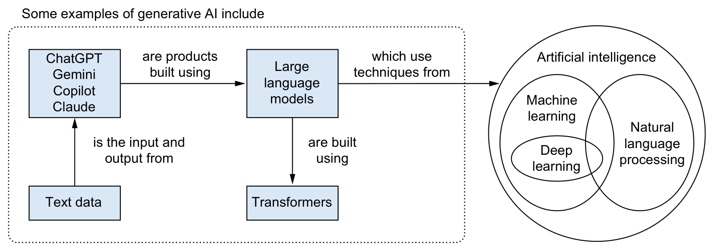
注意：视觉和语言并非生成式AI的唯一选择。
音频生成（比如文本转语音，例如GPS报出路名）、棋类游戏（如下棋）甚至蛋白质折叠都曾应用生成式AI。本书将主要聚焦于文本和语言，因为它们是GPT和LLM处理的主要数据类型。
顾名思义，“大”语言模型就说明其规模不小。据传ChatGPT包含1.76万亿个参数[1]，这些参数决定了它的行为方式。每个参数通常以浮点数（带小数点的数）存储，占用4字节。这意味着模型本身需要7TB的内存来承载。这个尺寸超出了大多数个人计算机的RAM容量，更不用说最强的、显存仅80GB的图形处理器（GPU）了。GPU是专用硬件组件，擅长执行使大语言模型成为可能的数学运算。目前，构建大语言模型需要大量GPU，因此我们已经在讨论跨多台计算机的大量计算基础设施和复杂性。相比之下，更普通的语言模型大多数情况下只有2GB或更小——小5000多倍，在更标准的硬件上构建和使用这种模型时，这个尺寸要合理得多。
许多研究人员正在探索如何让LLM占用更少的内存。有时，这包括利用称为“混合精度”[2]的方法，以少于4字节存储参数的技术。这种方法用2字节或更少存储部分LLM参数，在精度和内存效率之间进行权衡。最终，对精度的影响通常可以忽略不计。这种优化是研究人员为使LLM更高效利用资源而采取的众多措施之一。
GPU 的替代方案 虽然 GPU 目前是训练大语言模型最常用的硬件，但它们并非唯一选择。越来越多的公司正在开发专用硬件，为训练机器学习模型提供通用优势。例如，谷歌于 2018 年将张量处理单元 (TPU) [3] 作为 Google Cloud Platform (GCP) 的一部分向公众开放。虽然 TPU 的计算能力通常低于 GPU，但其专用架构使其在特定机器学习任务上表现优于 GPU。
在本书中，我们将解释大语言模型（LLM）的工作原理，并为您提供理解它们所需的词汇。读完本书后，您将对大语言模型是什么以及其运行的关键步骤有一个通俗的理解。此外，您还将对大语言模型合理可做的事情有所了解，特别是与部署或使用相关的考量。我们将讨论大语言模型基本局限性的要点，并提供如何规避这些局限性的技巧，或者说明何时应完全避免使用大语言模型乃至更广泛的生成式AI。
请记住，用于构建ChatGPT、Claude或Gemini的Transformer组合细节十分微妙，而本书主要关注所有这些系统的共同点。事实上，我们无法了解这些大语言模型之间的一些实际差异，因为尽管商业大语言模型提供商分享了大量关于其模型的信息，但他们仍未分享某些可能被视为商业机密的信息。
鉴于基于Transformer的大语言模型将对世界产生的影响，我们特意将本书定位为面向广泛读者。未来几年，各种背景的程序员、高管、经理、销售、艺术家、作家、出版商等众多人士都将不得不与LLM互动，或者其工作将受到LLM的影响。因此，我们将假设亲爱的读者您具备最基础的编程背景，但熟悉编程的基本构造：逻辑、函数，甚至可能了解一些数据结构。您也无需是数学家；我们会在必要时展示一些有用的数学知识，但理解LLM工作原理时这些是可选的。
这种方法意味着本书中出现的代码非常少。如果您想直接深入构建和使用LLM，Manning出版社的其他书籍，如Sebastian Raschka的《从零开始构建大语言模型》（2024年）或Edward Raff的《深度学习内幕》（2022年），将补充本书介绍的内容。然而，如果你想了解为什么你正在使用的LLM会产生异常输出、你的团队如何能使用LLM、或者哪些情况应避免使用LLM，又或者你有一位机器学习背景薄弱但需要达到流利对话程度的同事，那么本书正是你和你的同事所需要的。
具体而言，本书第一部分聚焦于LLM的功能：它们的输入和输出，如何将输入转化为输出，以及我们如何约束这些输出的性质。第二部分则聚焦于人的行为：人们如何与技术交互，以及这对使用生成式AI带来的风险。同样，我们还将讨论使用和构建LLM时出现的一些伦理考量。
生成式人工智能（GAI或称GenAI）即将改变我们生产和交互信息的方式。2022年11月ChatGPT的推出突显了现代AI的能力，并吸引了全球相当一部分人的关注。目前，你可以免费注册网址 https://chat.openai.com/ 进行尝试。
如果你输入提示文本“用两句话总结以下文本”，然后接本章所有引言文本，你将得到类似下面的内容。
“近期人们对人工智能，尤其是OpenAI的ChatGPT这样的大语言模型（LLM）的关注激增，突显了它们在自然语言处理方面的强大能力。本书旨在让读者对话式地了解LLM，包括其操作细节、潜在应用、局限性以及使用中的伦理考量，假定读者仅具备基本的编程概念和极少的数学背景。“这令人印象深刻，对普通观众来说，这种能力似乎从天而降。”当你访问OpenAI的网站并注册ChatGPT时，你可能会注意到类似图1.4所示的选项。
正如GPT-4这个名字所暗示的，截至撰写本文时，OpenAI正在开发其第四代GPT模型。像GPT-4这样的LLM是机器学习研究中一个成熟的领域，旨在创建能够综合信息并对其做出反应、生成看似人类输出的算法。这一能力开启了人机交互的多个领域，这些领域之前只存在于科幻小说中。ChatGPT编码的语言表示能力使其能够进行令人信服的对话、遵循指令、生成摘要、回答问题、创建内容以及更多应用。事实上，这项技术的许多可能应用可能还不存在，因为

关键的一点是，这项技术并非凭空出现，而是过去十年机器学习逐年显著进步的成果。因此，我们已经对LLM的工作原理及其可能的失败方式有了相当多的了解。我们假设读者只需具备最低限度的背景知识，这样你就可以把这本书送给朋友和家人。（其中一位作者希望这本书也能送给他的母亲——她为自己感到非常骄傲，尽管并不确切知道儿子的工作是什么。）因此，在深入探讨之前，我们需要填补背景知识上可能存在的巨大空白。第一章旨在提供这些背景，以便下一章可以开始回答这个问题：计算机究竟是如何为本书引言生成摘要的？
从营销角度来看，人工智能是一个绝妙的名称，尽管它最初被用作整个学术研究领域的名称。这种做法导致了一个微妙的问题，使人们对AI的工作方式产生了错误的心理模型。我们将尽量避免强化这种模型。为了解释原因，我们将讨论为什么人工智能并非一个那么好的名称。我们可以通过考虑一个简单的问题来轻松证明这一点：什么是智能？
你可能会认为像智商（IQ）测试这样的东西能帮助我们回答这个问题。智商测试与学业成绩等多种结果有很强的相关性，但并未给出智能的客观定义。研究表明，先天（遗传）和后天（环境）因素在一定程度上影响一个人的智商。同样可疑的是，我们竟然能将智能简化为一个简单的数字——毕竟，我们经常批评某人只有“书本知识”而没有“街头智慧”。即便我们知道什么是智能，是什么让它成为“人工”的呢？智能难道还有人工调味料和食用色素吗？
归根结底，智商测试衡量的是你在有限能力范围内的表现，主要是在时间限制下解决特定逻辑题的能力，但这并不能帮助我们理解智能的本质。事实是，我们对智能是什么并没有完美的理解。
人工智能领域长期以来一直试图让计算机——这些刻板、确定、遵循规则的机器——执行人类能做到但无法给出精确定义或指示的特定任务。例如，如果我们想让计算机数到1000并打印出所有能被5整除的数，我们可以编写详细的指令，几乎任何程序员都能将其转化为代码。但如果我请你编写一个程序，试图检测任意一张图片中是否有猫，那就是一个完全不同的挑战了。你需要以某种方式精确定义什么是猫，以及检测猫的所有细节。我们究竟如何编写代码来识别并区分猫的胡须和狗的胡须？当猫没有胡须时，我们又该如何成功识别它？说到底，这并不容易做到。
然而，由于 AI 和 ML 一直专注于这些人类能做但难以明确描述的任务，用类比来描述 AI 和 ML 算法变得尤为常见。为了让计算机检测猫，我们提供了成千上万张猫的图像和不是猫的图像作为示例。然后我们运行多种算法中的一种，通过特定、详细的数学过程来区分猫和其他事物。但在技术术语中，我们称这个过程为学习。当模型在新的图像中未能检测到猫，因为那是一只狮子，而狮子不在最初的猫列表中时，我们常说模型“不理解”狮子。
的确，每当我们试图向朋友解释某事时，我们经常使用双方都熟悉的共同概念作为类比。因为 AI 和 ML 广泛关注于复制人类执行任务的能力，类比往往使用暗示人类实际认知功能的语言。随着 LLM 展现出接近人类水平的能力，这些类比与其说有帮助，不如说更麻烦，因为人们过度解读它们，开始相信它们比实际含义更多。
因此，我们将谨慎使用类比，并提醒读者不要过度解读任何类比。像“学习”这样的术语是值得理解的技术行话，但我们希望你能警惕它们可能暗示的含义。
在某些情况下，本书中仍然会使用类比，但我们会尽量明确解释这类类比的边界。
注意：大脑结构的抽象已被证明在多个领域中具有实用价值。
神经网络在语言、视觉、学习和模式识别方面取得了令人难以置信的进展。神经机器学习算法的进步、数字数据的极度激增以及 GPU 等计算机硬件的爆发式增长，这些因素的融合促成了如今 ChatGPT 的实现。
从这个讨论中得出的关键细节是，作为人类，你对语言有一种与生俱来的理解，这种理解是随着时间的推移而习得的。你对语言的学习和使用是交互式的。通过进化，我们似乎都有相对一致的学习和相互交流的方式。要了解更多关于这个概念的信息，可以查阅语言学家诺姆·乔姆斯基提出的普遍语法理论。与人类不同，LLM的语言表征是通过静态过程学习得到的。当你与Claude或ChatGPT对话时，它们机械地参与对话，尽管它们之前从未有过对话经历。
LLM学习到的语言表征质量可能很高，但并非没有错误。这种表征是可操控的，我们可以通过特定方式改变LLM的行为，限制其感知或生成的内容。理解LLM通过从示例中推断出的关系来表征语言，有助于我们保持现实的期望。如果你要使用LLM，它出错时有多危险？你如何利用语言表征来构建产品或避免不良后果？这些就是本书将讨论的一些高层次问题。
Transformer 并非由 OpenAI 发明，而是指他们在 2018 年引入的一种新型模型，该模型采用了一种名为 Transformer 的神经网络组件。虽然最初的 GPT 模型（GPT-1）已不再使用，但预训练和 Transformer 的核心思想已成为近期生成式 AI 革命以及 Claude、Gemini、Llama、Copilot 等工具的基石。
同样重要的是要认识到，这些基于 GPT 的 AI 工具只是 LLM 算法研究和应用广阔领域中的一个例子。除了 ChatGPT 的发布，我们还看到了 LLM 的惊人激增。一些 LLM，如 EleutherAI 和 BigScience 研究研讨会发布的那些，是免费向公众开放的，以促进研究和探索应用。如前所述，Meta、微软和谷歌等公司发布了其他具有更严格许可条款的 LLM。任何人都可以用来构建应用程序或系统的公开 LLM，有时被称为基础模型，它们催生了一个由研究人员、爱好者和公司组成的充满活力的社区，探索 LLM 和生成式 AI 带来的应用、局限和机遇。本书教授的概念几乎统一适用于所有 LLM。每个 LLM 都使用与 ChatGPT 类似（若非完全相同）的结构生成输出。
一本书要包含适用于许多模型的通用摘要似乎是不可能的。然而，这是可能的，原因有几个，其中最重要的是我们不会深入到从头编写 LLM 所需的细节程度。自然，ChatGPT 和其他商业 LLM 的某些部分仍然是商业秘密。因此，我们的范围和描述有意概括了当今所有生成式 LLM 的最常见方面。
我们可以给出如此广泛适用的摘要的第二个原因是 LLM 的本质。虽然确实可以对它们的构建和操作进行许多调整，但该领域的研究人员一致发现，最重要的细节如下：
模型规模有多大？能否进一步扩大？构建模型使用了多少数据？能否获取更多？
这些观点可能会让那些自认为拥有重要见解或设计、能显著改善这些LLMs工作方式的研究人员感到沮丧，因为在许多情况下，同样的改进只需通过“做大”或用更多数据或参数构建模型就能轻松实现。扩大模型和数据池的规模是围绕使用和构建LLMs的许多伦理问题的关键组成部分，我们将在第9章中讨论。
我们将在后续章节讨论 LLMs 的工作原理细节，但此处也有必要分享一个从机器学习算法研究中得出的关键教训。多年来，要让自己算法针对任意任务取得更好性能，通常意味着要在算法设计上更加巧妙。你会研究问题、数据和数学，尝试推导出关于世界的有价值真理，然后将它们编码到算法中。如果做得好，性能提升，所需数据减少，一切都很美好。许多你可能听过的经典深度学习算法，如卷积神经网络（CNN）和长短期记忆网络（LSTM），从高层次看，都是人们苦思冥想和巧妙设计的结果。甚至更简单的“浅层”机器学习算法，例如不依赖神经网络或深度学习的 XGBoost，也是通过巧妙的算法设计创造出来的。
LLMs 展示了一个更近期的趋势。它们不是在算法上耍聪明，而是保持简单，实现一个仅捕捉信息之间关系的朴素算法。在很多方面，LLMs 将更少关于世界的先验信念强行嵌入到算法中。从根本上讲，这提供了更大的灵活性。如果我告诉你相反的做法才是人们改进算法的传统方式，你可能会怀疑这怎么会是个好主意？区别在于 LLMs 和类似技术只是规模更大，大得多。它们在远更多的数据上训练，并能从更多句子中捕捉更多词语间的关系；这种暴力方法在性能上似乎已经超越了经典的机器学习方法。这一思想在图 1.5 中展示。
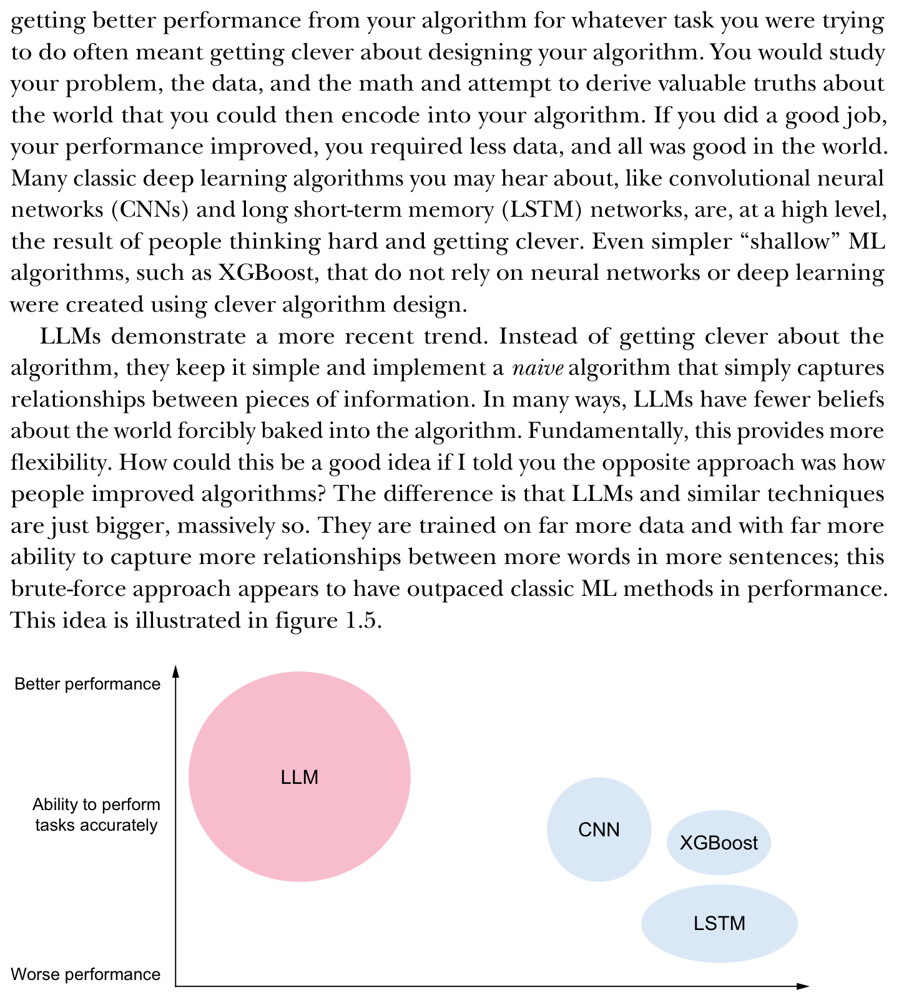
正如我们之前所说，更大并不意味着在所有指标上都更好。这些模型目前部署起来在物流和计算方面都是一个挑战。许多现实世界中的约束，包括响应时间、功耗、电池消耗和可维护性，都受到了负面影响。所以，LLM仅仅在一个狭隘的“性能”定义上有所提升。
不过，“做大”胜过“取巧”这一课仍值得借鉴。有时，在设计机器学习方案时，即便用了大语言模型，最佳答案可能仍是“我们再多弄点数据吧”。
在本书中，我们将给出一些例子，展示LLM是如何失败的，通常是以滑稽或愚蠢的方式。
这些例子的目的并非是说LLM无法完成任务。通过改变输入、设置或随机运气，你往往可以让LLM表现得更好。
这些例子的目的在于向你展示LLM是如何失败的，通常是在一些简单到连孩子都能做得更好的事情上。当你阅读本书并与LLM互动时，这些例子应当让你停下来思考：“如果我用ChatGPT处理困难任务，但它连简单的任务都失败，我是不是在自找麻烦？”答案往往是一个响亮的“是”！安全使用LLM需要对输出持怀疑态度，努力验证和确认正确性，并具备相应的适应能力。如果你用一个LLM来执行你自己无法完成的任务，你就有可能暴露于你无法亲自验证的错误结果中。在整本书中，随着我们讨论如何更多地使用LLM，我们将不断将这个观点以及如何处理它融入讨论中。
很容易想象LLM在其正常工作时可能让我们的生活变得更轻松的许多方式——回复所有电子邮件、总结长文档、解释新概念。但很多人并不自然地意识到事情可能出错并迅速变得危险。
这种对抗性思维通常可以通过一个初始例子来激发：比如你想学习如何制作炸弹。如果你问ChatGPT这个问题，你会得到标准回答：“抱歉，我无法协助这个请求。如果你处于危机中或需要帮助，请联系当地当局或能够提供帮助的专业人士。”然而，研究人员最近展示了如何让ChatGPT和许多其他商业LLM毫不犹豫地回答这个问题，以及其他许多危险的信息请求[4]。
有人可能会争辩说，如果有人聪明到能想出如何欺骗LLM，他们可能也能从其他来源获得任何危险信息。这可能是对的，但同时它没有考虑到LLM和生成式AI工具的自动化规模。没有AI或ML算法是完美的，如果数百万人提问，LLM可能在0.01%的情况下产生危险回应。ChatGPT拥有超过1亿用户[5]，所以那就是10000次危险回应。当你考虑恶意行为者可能开始自动化什么时，问题就更严重了。我们将在本书的后半部分进一步讨论这个问题。
我们期待与您一起探索LLM的工作原理。最终，您将详细了解在您的业务或日常生活中应用LLM的革命性能力时需要考虑的诸多因素。
ChatGPT 是一种大型语言模型（LLM），而LLM本身属于更广泛的生成式 AI/ML 家族。生成式模型能产生新的输出，LLM 的输出质量独特，但它们的构建和使用成本极其高昂。LLM 的架构大致模仿了人类大脑功能和语言学习的不完全理解。这仅作为设计灵感，并不意味着模型具备与人类相同的能力或弱点。智能是一个多面且难以量化的概念，因此很难判断 LLM 是否具有智能。更简单的方式是从能力和可靠性的角度来思考 LLM 及其潜在用途。人类语言必须转换为 LLM 的内部表示，反之亦然。这种表示的形成方式会影响 LLM 学习的内容，并影响你如何利用 LLM 构建解决方案。
译文范围: 章节内段落 1–87（共 87 个段落，渲染 57 个，2 个为图像/页眉/页码等不可译块）。
2 分词器：大型语言模型如何看世界
如第1章所述，在人工智能领域，借鉴人类学习的类比往往有助于解释机器如何“学习”。你阅读和理解句子的方式是一个复杂的过程，会随着年龄增长而变化，并涉及多个序列性和并发性的认知过程[1]。然而，大语言模型（LLM）使用比人类认知过程更简单的过程。它们采用基于神经网络的算法，从大量数据中捕捉词语之间的关系，然后利用这些关系信息来理解和生成句子。
我们关于这些算法如何工作的讨论将从其输入开始：文本句子。在本章中，我们将探讨LLM如何处理这些句子，使其成为模型的输入。正如语言对你思考和处理信息至关重要一样，LLM的输入对于影响LLM能够执行的概念和任务类型也至关重要。
大语言模型处理句子似乎是显而易见的，但要真正理解，我们必须更具体一些。在讨论大语言模型工作原理时，你会看到文本句子对驱动大语言模型的神经网络算法而言并不自然，因为神经网络本质上是用数字来完成工作的。如图2.1所示，大语言模型所用的算法必须先将人类文本转换为数字表示，然后才能进行处理。词元就是大语言模型用来将文本拆分为可编码为数字的片段所用的表示。
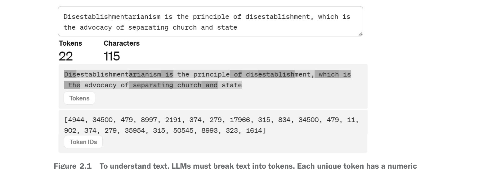
你可以将词元视为大语言模型处理文本的最小单元——不妨称之为“原子”，即构成一切其他事物的最小部分。那么，文本的原子是什么呢？思考一下：当你阅读本书时，你的大脑用来处理意义的最小构建块是什么？两个显而易见的答案是字母和单词。我们很容易将字母定义为原子，因为单词由字母组成，但你是否真的有意识地阅读每个单词中的每个字母？对大多数人来说，答案是否定的。（如果你是本书合著者之一那样的阅读障碍者，这个问题就显得古怪。但认知处理过程复杂且尚未完全理解，请暂且容忍我们的类比！）你关注的是更显眼的单词和词缀部分。事实上，即便我们故意用错拼写或字母，你大概仍能理解这句话。人类在阅读时会无意识地利用词缀等部分来处理文本，而大语言模型的构建也遵循同样的原理。
在本章中，你将学习文本如何转换为词元的过程。首先，我们将更详细地讨论词元；然后，讨论用于决定句子如何转换为词元的程序。
到成年时，大多数说英语的人掌握约3万个单词[2]。GPT-3，最初驱动ChatGPT的大语言模型，拥有50,257个token的词汇量[3]。这些token不是单词，而是被称为子词的部分，是一种介于单词和字母之间的表示。直观来说，token捕捉的是语言中最小的有意义语义单元。例如，schoolhouse通常会被拆分为school和house两个token，而thoughtful则被拆分为thought和ful。这有助于识别常见词汇，并利用子词理解从未见过的新词。人们常常使用类似的技巧，称为语义分解，来理解从未见过的单词。我们凭直觉将新词拆解成组成部分，基于已理解的词汇来把握其含义。
特征工程是将数据转换为更适合算法和任务所需形式的过程。要构建能检测文本语言的算法，你可以编写代码，以文本为输入，输出每个字符出现的百分比。例如，如果文档中é出现很多，你就有一个很好的特征表明该文档更可能是西班牙语或法语，而非俄语或中文。可靠的特征工程需要考虑模型的工作原理、你想要实现的目标，以及如何为模型与目标的组合准备数据。
分词是大语言模型的特征工程；它至关重要，因为token是模型交互的唯一信息。token被视为独立的抽象事物，本质上互不关联。它们之间的关系通过数据观察来学习。
回顾图2.1，显然Dis和dis的token是相关的，唯一区别在于一个以大写D开头。然而，你可以看到模型将标识符4944分配给Dis，将标识符834分配给dis。也就是说，模型本质上不认为表示Dis和dis的token之间存在任何联系，尽管我们人类能看出明显关联。模型甚至看不到Dis或dis。为了让大语言模型处理token，我们必须将这些token转换为数字，这样模型看到的就是数字4944和834。重要的是，模型没有任何直接方式知道这些token是相关的。
token是从子词到唯一数字表示的映射。相应地，分词是将整个文本字符串转换为token序列的过程。如果你之前使用过机器学习库（尤其是自然语言处理工具），可能对某些简单的分词形式比较熟悉。例如，简单的分词过程通过按空格拆分文本，将文本分解为token。然而，这种方法限制了创建子词的能力，也不适用于不按空格分隔单词的语言，如中文。
分词遵循的通用过程如图2.2所示，包含四个关键步骤：
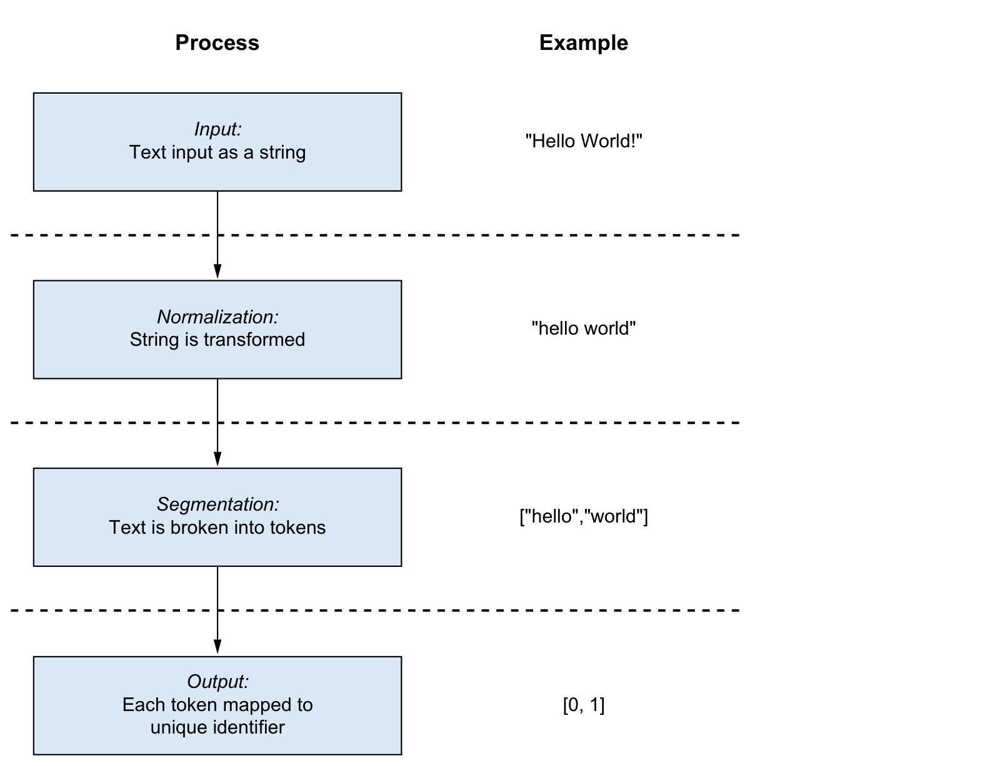
这个过程的首尾部分几乎没有选择或不同行为的余地。首先，你需要输入待处理的内容；最后，你需要为每个 token 分配一个数值标识符，以便存储和检索你将与该 token 关联的信息。中间的两个步骤——规范化（normalization）和切分（segmentation）——才是你可以选择如何处理的地方。
分词流程的最后一步是构建词汇表。模型的词汇表是指训练过程中，当我们向算法提供学习数据时，所看到的不同token的总数。要构建一个包含大量不同token的丰富词汇表，几乎总是需要大量的数据。
为模型选择词汇表涉及一系列权衡：词汇表越大，模型能成功处理的信息就越多。想象一个一岁大的孩子，词汇量可能只有几十个单词。这个孩子不会是一个很有效的沟通者（但这没关系；他们有大量的时间去学习）。因此，更大的词汇表不仅有助于模型理解更多事物，也会让模型变得更大。如果词汇表过大，可能会因为使用它所需的计算量而让模型变慢，或者模型可能消耗过多的内存或磁盘存储，这使得将其传输或共享到其他机器变得更加困难——例如，在将其作为软件应用的一部分进行部署时。
通过处理训练数据并识别token来构建模型的词汇表。每次遇到一个新token时，你都会根据已看到的唯一token数量给它分配一个唯一的标识符。这个过程通常很简单，只需将一个计数器初始化为0，每发现一个新token就将其递增。一旦这个过程完成，你就得到了一个本质上相当于编码器的分词器。分词器可以接收文本作为输入，并返回该文本的数字编码，供LLM算法作为其输出使用。
GPT-NeoX 是一个公开可用的大型语言模型，其词汇表在磁盘上占用约 10 GB 空间。
这些数据量巨大，已经足以使许多实际应用场景在数据存储和计算方面面临挑战。
词汇表如此之大，以至于将其存储在 micro-SD 卡上会慢得无法接受，从而使得在手机或某些游戏机上的使用成为重大挑战。
它足够大，无法实时流式传输，必须下载并加载到处理器的 RAM 中才能执行分词。
然而，词汇表必须足够大，以表示模型在训练和使用过程中可能遇到的所有单词和子词。
假设模型遇到一个不在其词汇表中的单词，且无法通过组合词汇表中的子词来表示。
在这种情况下，模型无法捕捉到该段文本的信息。
因此，有必要在词汇表大小的担忧与模型解释广泛内容的需求之间进行权衡。
在 NLP 中，这通常被称为“词汇外问题”，即遇到无法用模型可用 token 表示的单词。
词汇表大小是影响 LLM 规模的因素之一，因此讨论控制词汇表大小的方法和权衡至关重要。
在本节中，我们将描述改变分词过程的行为如何影响词汇表大小，进而影响模型的能力和准确性。
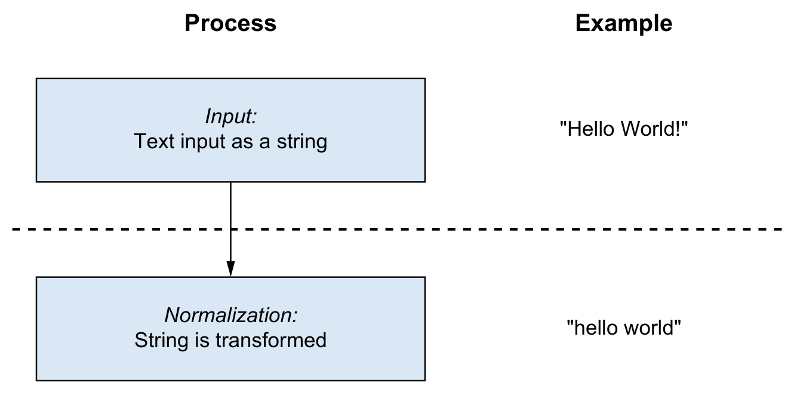
图2.3聚焦于第二个转换步骤——归一化，它将大写字母“H”和“W”转换为小写，并移除标点。这些常见的归一化步骤源于经典NLP流程，在当今的深度学习方法中有时仍被沿用。它们能立即带来词汇量缩减的效果，不再需要将“Hello”和“hello”表示为两个独立的token，而是映射为一个唯一token。这种映射意义重大，因为每个句首大写的词都会在词汇表中额外增加一个大写版本。归一化还有助于处理各种打字错误和拼写错误。
例如，在撰写本书时，我们曾输入“LLMs”、“LLms”和“llms”，并出现其他多种大小写混用的笔误。将每个变体中的字符全部转为小写，就能将所有这类笔误归一为一种简洁形式，从而得到更小的词汇表并减少歧义。然而，将文本全部转为小写并不总能减少歧义。以“Bill”和“bill”为例：前者意指人名，后者更可能指货币单位（或其他定义）。大小写不仅对理解文本含义至关重要，也有助于理解文本中的错误。再回想一下我们在本书中多种错误大小写“LLMs”的方式。高质量的AI算法应能识别出我们的笔误并予以纠正！ChatGPT具备这种能力，因此模型需要保留大小写信息。因此，在词汇表大小与潜在模型准确率之间存在一个重要的权衡。
在经典NLP乃至不算太古老的深度学习模型（如BERT，ChatGPT强大LLM的前辈）中，算法识别并修正笔误的能力极其有限，除非专门为此设计解决方案。因此，过去用于构建稳健归一化步骤的大量工作，如今在LLM中已被抛弃。更庞大的词汇表更受欢迎，以便训练出能够理解错误、更强大的模型。
分词过程中的标准化与分割步骤在很大程度上决定了词汇表的大小。
图2.4展示了一种最直接的分词策略。
该策略遵循一个简单规则：每当文本中出现空格时，就将字符串分割为对应的词元。
以"hello world"为例，相当于在Python中调用`"hello world".split(" ")`。
这是一种合理的方法，正如我们人类阅读句子的方式。
但这也带来了一些微妙的复杂性。

文本中出现标点符号会怎样？如果我们使用空格规则将字符串“hello, world”转换为["hello,", "world"]，就会遇到与大小写类似的问题。我们最终得到了代表同一概念的两个不同token："hello"和"hello,"。传统方法通常通过移除标点或制定更复杂的字符串拆分规则来解决这个问题。虽然这在减少词汇量方面是正确的一步，但手动指定分词规则并不能解决其他问题。例如，对于像中文这样不使用空格分隔单词的语言，基于规则的分词策略会遇到很大困难。
LLM的总体思路是减少人工特征工程，让算法承担繁重工作。因此，通常使用一种称为字节对编码（BPE）的算法将字符串拆分为token。字节对编码是一种将单词拆分为常见字符子词序列的算法。如今的BPE通常使用自定义分词器，几乎不进行规范化处理。
注：通过实验，我们发现许多类似ChatGPT的产品会移除一些不打印的Unicode字符（Unicode确实很奇特），但除此之外基本上会原样保留你的文本。
大多数先前的语言模型确实使用了多种方式的规范化，而如何更好地为大语言模型规范化文本，我们认为是一个值得探讨的开放问题。
由于寻找最高效的子词集合计算成本过高，BPE 采用一种启发式方法来简化。该算法先将单个字母视为词元，然后找出出现最频繁的相邻字母对，并将其合并为子词词元。算法重复此过程多次，持续处理子词词元，直到达到某个阈值，词汇表“足够小”为止。例如，在第一轮中，BPE 算法统计英语中单个字母的出现频率，发现字母“i”、“n”和“g”经常彼此相邻出现。在第一轮中，BPE 可能观察到“n”和“g”一起出现的频率高于“i”和“n”，因此它将生成词元“i”和“ng”。在后一轮中，它可能根据该字母组合的出现频率与“ng”与其他字母或子词共现的频率对比，将这些词元合并为“ing”。一旦 BPE 达到停止点，它将识别出诸如“eating”和“drinking”等单个单词作为频繁出现的组合。它还可能将“ing”捕获为后缀，以便以该子词结尾的其他单词也能表示为词元。算法完成后，我们得到的词元中，有些捕获完整单词，有些则捕获子词。图 2.5 从高层概述了这一过程。
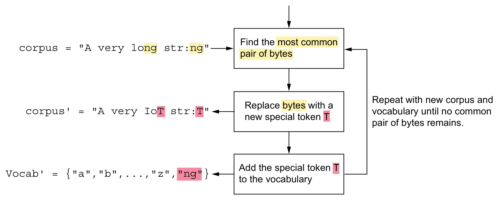
注意：运行BPE算法创建词汇表的成本惊人地高，因为它必须多次读取输入数据以计算最常见的字母组合。
尽管大语言模型在超过5亿甚至10亿页的文本上进行训练，但其分词器通常只使用这些数据的一小部分来创建。通常，分词器是在一个规模小得多（大约一本小说大小）的文本集合上训练的。
BPE流程初看可能有些奇怪，但它本质上是一种识别语料库中常见字符串的方法。例如，BPE几乎总会学会将“New York”表示为一个token，这很有用，因为纽约州和纽约市在文本中频繁出现。将整个概念表示为一个token，使得利用这类信息变得更加容易。实际上，大多数常见词都会成为独特的token，而罕见词则有望通过子词组合来捕获。例如，“loquacious”会被GPT-4分词为“lo”、“qu”和“acious”。这种方法之所以成功，是因为“acious”是表示倾向/习性的拉丁后缀，有助于模型正确处理不常见的词汇。但它也是一个失败案例，因为拉丁前缀“loqu”被拆成了两个token而非一个，增加了学习难度。
BPE构建词汇表后，模型作者会出于各种原因手动添加额外token，例如某些特定知识领域中的重要词汇。正如我们将在下一节讨论的，在某些领域，拥有正确的token通过捕获细微含义能产生显著效果。因此，作者通常会确保包含必要的token。模型作者还会添加特殊token，它们不直接表示单词部分，而是为模型提供辅助信息。常见的例子包括“未知”token（通常表示为[UNK]），用于分词器无法正确处理某个符号时；以及系统token [SYSTM]，用于区分模型内置提示和用户输入数据，以及其他类型的样式标记。接受文本和图像输入的多模态模型使用独特的token来告诉模型输入流何时在表示文本数据的字节和表示图像数据的字节之间切换。
OpenAI在开发ChatGPT时决定使用BPE将文本编码为token，并将其分词器作为开源包`tiktoken`发布（https://github.com/openai/tiktoken）。不过，还有其他几种自动生成token的算法和实现可用，包括Google开发的WordPiece和SentencePiece算法[4]。每种方法都有不同的权衡。例如，WordPiece在构建分词器词汇表时使用不同的技术来统计候选子词的频率。SentencePiece中实现的算法之一会处理整个句子，在计算token时保留空格，这可能有助于改善处理多种语言的模型的输出。然而，BPE是使用最广泛的算法。例如，Google最近的LLM中已完全采用BPE。无论选择哪种算法，分词器词汇表的大小都是一个关键模型参数，由负责训练和扩充分词器的数据科学家或工程师决定。
接下来的章节将深入探讨词汇表大小的一些考量以及分词器开发过程中做出的其他决策。
正如第1章所述，本书不会过多涉及编码。目标是对LLM的工作原理给出合理的理解，并揭开其魔法和神秘的面纱，以便你专注于思考如何将LLM应用于自己的工作。
词元化是拼图的第一块。它是一种简单但有效的策略，用于生成LLM的输入。你已经了解了词汇量大小在模型可部署性中的重要作用、在识别细微差别与构建词汇带来的不必要冗余之间的权衡、词元化过程如何影响词汇量大小，以及如何通过BPE自动进行词元选择。
在词元化时刻所做的选择影响着LLM当前和未来的能力。这些选择涉及一些宏观挑战需要留意。为了进一步探讨这个主题，BPE的两个显著但微妙的细节值得关注：句子长度与词元数量之间的关系，以及LLM可能被外观相同但二进制编码不同的字符（即同形字）所混淆。
BPE的一个反直觉之处在于，更长的句子并不意味着更多的token。要理解原因，请看图2.6，其中展示了GPT-3对两个不同字符串的实际分词结果。字符串“I’m running”比“I’m runnin”多一个字符，但token数却少一个！如果你不信，可以访问https://platform.openai.com/tokenizer亲自尝试对不同字符串进行分词。
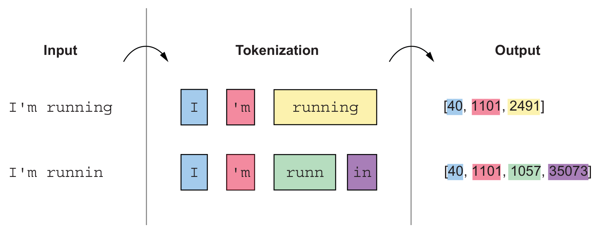
这种差异的产生是因为BPE贪心地寻找任意输入的最小token集。在这个具体例子中，字符串"running"在训练数据中出现足够频繁，因此它拥有自己的token。而在缺少"g"的情况下，词汇表中没有"runnin"这个token，因为该变体在训练数据中很少出现。因此，"runnin"需要被拆分为至少两个token，即run和nin。
分词器实现的这一细微差别是软件缺陷的温床。不同的分词器可能对同一字符串给出不同的分词结果。在设计单元测试和基础设施时，必须牢记这一因素，以避免在升级或切换分词器实现时因token生成出现新差异而感到困惑或迷失。它还会影响LLM的评估，因为许多模型对添加的空格高度敏感，而不一致的分词可能无意中导致比较结果失去公平性。
同形字是开发者在处理多语言或考虑外部数据安全时可能遇到的问题。当输入来自任意用户时，有时可能怀有恶意，试图诱使模型做出不良行为。针对LLM的一种攻击方式就是同形字攻击。
同形字是指两个或多个字符字节编码不同，但在屏幕上渲染时外观相同。例如，拉丁字母“H”（用于大多数西欧语言）和西里尔字母“H”（用于东欧和中亚）。
BPE会将使用不同字节编码的同形字编码为不同的词元。因此，同形字会增加文本中的词元数量，改变LLM对信息的解析方式，并增加计算成本。一个有趣的同形字例子是Unicode字符U+200B，也称为“零宽空格”。该字符用于排版，占据空间，但不会打印任何内容，不会显示任何东西，也不会改变文档的渲染方式。
零宽空格是Unicode规范中许多奇特有趣的东西之一，可能被用来给你制造麻烦。因此，许多服务采用标准化步骤，移除这些奇怪字符，并将同形字替换为规范表示（例如，任何看起来像“a”的字符都必须编码为a）。例如，OpenAI当前的词元化接口会移除同形字。如果你想在自有硬件或用户设备上部署LLM，必须考虑同形字问题。
如果我们只关心LLM生成高质量类人文本的能力，那么具体如何对文本进行分词，其重要性远不及用于构建这些模型的数据和计算资源。只要给模型投入足够的计算能力和规模，无论基础构建块如何，它们最终都能学会有用的表征。但有时，分词方式会显著影响LLM的能力。本节将列举一些例子。
接下来的例子可能与你用LLM的工作或目标并无直接关系。这完全没关系；这些例子的目的不是劝退你使用LLM。相反，目的是帮助你理解，LLM所学的内容范围受限于所选的表征方式，而如果不进行重大的工程改造，这些顾虑可能无法回避。如果你开始用LLM构建应用并遇到重大困难，请思考分词方式是否成为你目标实现中的一个因素。如果问题确实出在分词上，你能做的应对措施也很有限，因此最好考虑其他方法，比如手动扩充词汇表，加入对你应用重要的token。
大语言模型解字谜或执行涉及单词游戏的任务。
例如，图2.7展示了一个单词游戏，该游戏的正确答案取决于单词的精确字母序列和字母数量。
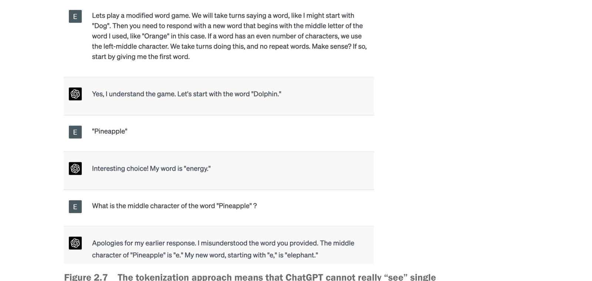
玩文字游戏可能不是你的应用所关心的，但文字游戏失败的原因却可能和你的问题高度相关。尽管许多这样的例子都是玩具问题，在科学或商业上并不特别重要，但它们揭示了这些模型运行方式中值得注意的失效模式。这些问题可能会在更实际的应用中显现出来，例如当模型难以写出包含押韵或谐音的诗歌时。
考虑这样一个例子：你想构建一个回答用户关于处方药问题的应用。药物通常有较长、容易混淆的名称，人们往往记不住或拼写错误，而由于LLM不理解字母，它可能将一种药物的名称与另一种药物的又长又怪的名称混淆。
由于药物名称不常见，即使只有轻微的拼写错误，它们也会被分割成不同的词元。例如，在GPT-3中，“Amoxicillin”和常见的拼写错误“Amoxicillan”没有共同的词元！这大大增加了LLM回答错误的风险，而风险本身又很高，因此LLM应用更需要全面测试、极其小心地规避问题，或者可能完全避免使用。
分词显著影响涉及形式符号推理的任务，包括数学和下棋。数学和下棋在LLM中都被实现为符号推理问题，其中每个分词都有特定的规则来支配它们与其他分词结合时的交互和含义。例如，包含每个数字独立分词的模型在算术任务上通常比没有的模型表现更好。这是因为数字123456在GPT-3中会变成两个分词["123", "456"]，这是基于这些分词在分词器原始训练数据中的频率。这使得模型难以处理该数字中的单独数字。一些系统开发者通过在所有数字之间插入空格来归一化数字，例如1 2 3 4 5 6，从而创建一个包含六个分词的新输出，每个数字对应一个分词。
这种数学能力的差异在图2.8中得到了很好的展示，该图显示了整个训练过程中算术计算的性能。上方的曲线是典型的BPE分词器，而下方表现更好的曲线是同一个分词器经过修改，实现了数字的按位分词。
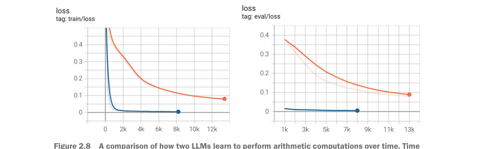
大多数LLM分词器能够表示Unicode涵盖的所有符号，包括世界上大多数语言的字符。然而，这些分词器在表示不同语言文本时的效率差异极大，特别是由于分词器通常基于不同语言的小规模文本资源集进行训练。这可能导致基于LLM的商业服务出现显著的不公平性[5]，因为在训练集中罕见的语言，其单词的分词会默认分解为更细粒度的子词，从而导致token使用量增加。OpenAI和Anthropic等商业LLM提供商通常按token计费，每个输入LLM或由LLM生成的token通常收取不到一美分的费用。考虑到高使用量的商业应用每天可能处理数千万个token，这些成本会迅速累积。LLM完成请求所需的时间以及用户为每个token支付的费用直接取决于分词器。因此，分词器高效表示的语言在经济上比那些未被高效表示的语言更具优势。以英语为基准，研究人员发现，在使用ChatGPT和GPT-4时，回答德语或意大利语用户查询的成本约高出50%。与英语差异更大的语言产生的费用可能更高：图姆布卡语和保加利亚语的费用是英语的两倍以上，而宗卡语、奥里亚语、桑塔利语和掸语的处理成本是英语的12倍以上。
1 你期望以下词语或短语如何被分词？尝试自己将它们拆分，然后通过一个实际的LLM分词器运行，例如 https://platform.openai.com/tokenizer 上的那个。
backstopped large language models Schoolhouse 你如何处理句子以理解它们是一个复杂的过程，随着年龄增长而变化，涉及多个顺序和并行的认知过程。2 你认为对于之前的每个例子，大写字母与小写字母的影响有多大？
尝试用不同的大小写再次提交它们。
既然 token 是大模型操作的基本单元，那么从技术角度来看，为什么 tokenizer 表示效率较低的语言会成本更高呢？
大型语言模型根据用户使用的语言对同一服务收取不同费用，这存在伦理问题吗？
你是否认为这是一种歧视？
本章讨论的分词细节是大语言模型的基础构建块，它决定了模型能有效表示的输入以及生成的输出。分词是ChatGPT等大语言模型的关键组件，用于开发有效的文本表示，使得模型在训练过程中面对海量信息时能够学习词元之间的关系，从而理解用户输入并生成我们习以为常的高质量回复。大语言模型的潜力受限于或得益于所采用的分词策略和词汇表，以及我们在后续章节中探讨的其他所有特性。
分词是LLM理解文本的基础过程，它将句子转换为词元。
词元是文本中表示内容的最小信息单元。有时它们对应完整的单词，但通常代表单词的一部分或子词。
分词涉及将文本标准化为统一表示，可能包括将字符转换为小写或转换Unicode字符的字节编码，使视觉上相同的字符使用相同编码。
分词还涉及分割，即将文本拆分为单词或子词。像字节对编码（BPE）这样的算法提供了一种机制，可以根据训练数据集中字母组合的统计出现来自动学习如何高效地分割文本。构建分词器的结果称为词汇表，它是分词器可以用来表示已处理文本的单词和子词词元的独特集合。
分词器词汇表的大小影响LLM准确表示数据的能力，以及理解和预测文本所需的存储和计算资源。
在LLM内部，词元用数字表示。因此，不存在对词元之间关系（如前缀和后缀，或两个词元共享相似字母集）的理解。为了支持特定知识领域，自动训练的分词器可以增强，以提供对其应用重要的词元。不理解单个字母或数字的分词器会在算术运算或简单文字游戏中出现问题。
译文范围: 章节内段落 1–122（共 122 个段落，渲染 71 个，2 个为图像/页眉/页码等不可译块）。
3 Transformer：输入如何变成输出
在第二章中，我们了解到大语言模型（LLM）将文本视为称为令牌的基本单元。现在，我们来探讨LLM如何处理这些令牌。LLM生成文本的过程与人类形成连贯句子的方式截然不同。当LLM运行时，它处理的是令牌，但同时它无法像人类那样操作令牌，因为LLM不理解每个令牌所代表字母的结构和关系。例如，英语使用者知道“magic”、“magical”和“magician”这些词是相互关联的。我们可以理解包含这些词的句子都指向同一主题，因为这些词共享同一词根。然而，LLM操作的是代表这些词的令牌的整数，如果不额外处理来建立这些联系，它就无法理解令牌之间的关系。
正因如此，LLM 延续了机器学习和深度学习领域中一种周期性转换的历史。首先，令牌（tokens）被转换为深度学习算法可处理的数值形式。然后，LLM 将这个数值表示再转换回一个新的令牌。这一循环会迭代重复，这与人类的工作方式截然不同。如果你的同事每说一个字都得掏出计算器做几道数学题，你肯定会大感担忧。
然而，这一过程恰恰是 LLM 产生输出的方式。本章将分两个阶段来阐述这一过程。首先，我们会从宏观角度回顾整个过程，介绍基本概念，并构建一个 LLM 生成文本的心理模型。接着，这一模型将作为框架，支持我们深入讨论 LLM 用于捕捉词与语言之间的关系、并最终生成我们所熟悉输出的组件细节和设计选择。
如今，你遇到的许多大型语言模型（LLM）都会使用一种称为Transformer的软件架构来解读令牌并生成输出。该架构包含一系列算法和数据结构，它们通过将信息表示为神经网络中的数字来进行存储。从本质上讲，Transformer是序列预测算法。虽然通常用“推理”或“理解”语言来描述它们，但它们实际所做的是预测令牌。Transformer提供了三种不同的令牌预测方法。虽然我们重点介绍的是著名的GPT架构（更正式的名称为仅解码器模型），但也有必要介绍一下仅编码器模型和编码器-解码器模型：
无论使用哪种类型的Transformer，模型的基本组件都由三个基础层构成，只是内部排列方式不同。一个合理的类比是汽油内燃机：它们的工作原理相似，拥有相同的基本组件。这些组件（即层）在引擎（即Transformer）中的组合方式不同，会导致性能上不同的折中。
LLM 是如今被称为神经网络的数百种算法之一。
然而，这个称谓在多个方面是误称。首先，如今构成神经网络方法的内容极其宽泛，以至于提及“基于神经网络的方法”并不能让读者对所述具体方法有太多了解。其次，名称中的“神经”部分与神经科学或大脑运作方式几乎毫无关系。有时确实存在一种直观的灵感：“嘿，大脑似乎也是这样做的；我们能模仿这种行为并从中获得有用的东西吗？”但对当前大多数方法而言并非如此。第三，神经网络更多描述的是一种组装数据结构的标准约定，而非特定算法。想想建房子：你使用二乘四木料、石膏板，以及橱柜、油漆和设计选择等多种选项，将一切组合成家。每栋房子看起来既独特又熟悉：它们都以预期的方式组装而成。神经网络的“层”是最小的组件，但你可以以不同方式使用多种类型的层。Transformer 是组装成更大网络的众多部件之一。
图3.1描述了Transformer模型的核心组成部分：嵌入层，生成能够承载更多含义的Token表示；Transformer层，基于词语关系进行预测；以及输出层，将Transformer内部使用的数值表示转换为人类可读的文字。
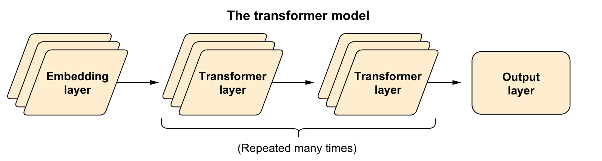
让我们详细看看这些层：
为了进一步理解LLM内部发生的过程，重新审视我们之前描述的一系列步骤会很有帮助。因此，我们在图3.2中这样做，该图描述了七个步骤。我们将为每个步骤标记出之前讨论过的章节，或者告知你哪些是我们即将解释的新细节。本章一次性提供了大量信息，因此我们将逐步分解，逐一讲解。
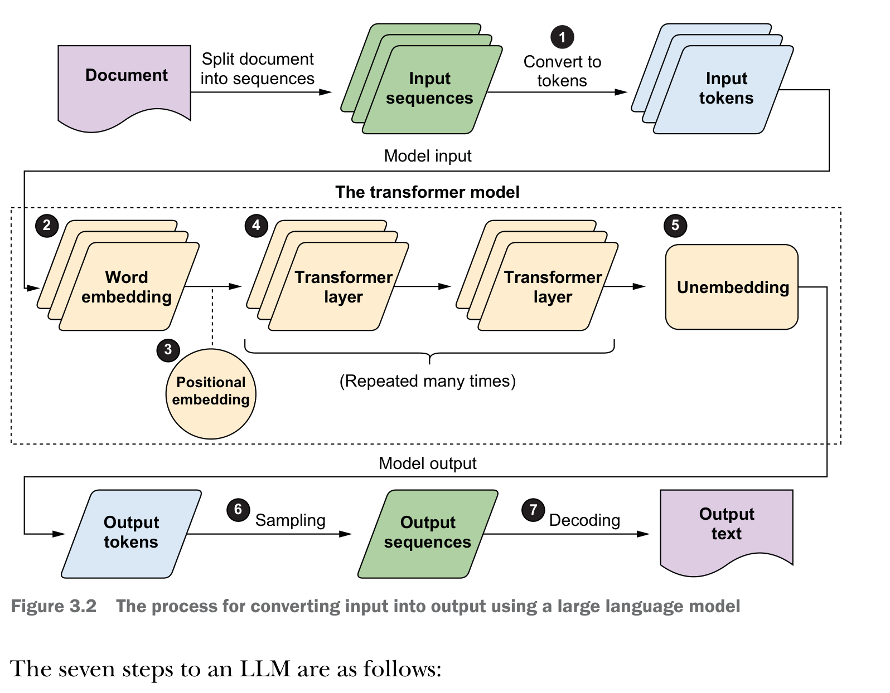
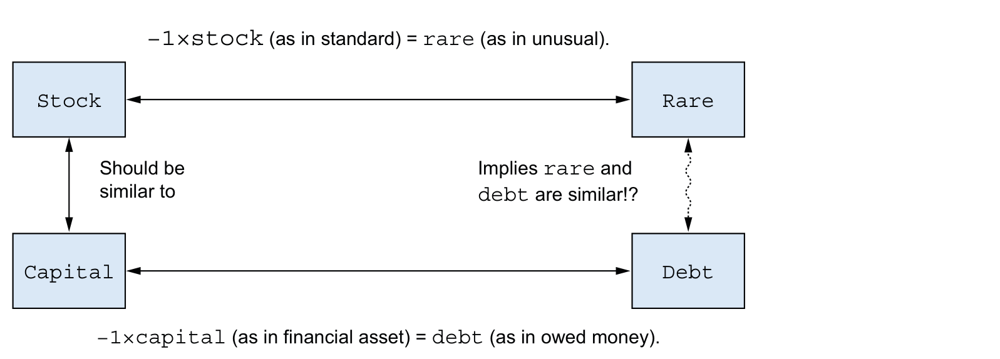
分词、嵌入以及语言如何精确转化为模型可理解的形式，这其中有许多细微之处。最重要的细微之处在于，神经网络仍然不直接处理词元。总体而言，神经网络需要可操作的数字，而每个词元都有固定的数字标识。我们不能改变词元的标识，因为该标识使我们能够将词元转换回人类可读的文本。我们需要一个层，将数字形式的词元转换为其所代表的单词或子词。
例如，假设我们有一个代表“股票”的词元，我们随意决定将其转换为某个数字（比如5.2）。我们希望给相关的金融词汇（如“资本”）赋予相近的数字（比如5.3），因为它们含义相似。此外，“股票”还有其他含义的反义词，例如“稀有”。假设我们用负值来表示反义词的概念，并赋予其数值-5.2。但问题变得复杂了，因为“资本”的另一个反义词是“债务”。但如果反义词就是取负值，那么“债务”和“稀有”的含义就相似了，这显然荒谬。图3.3展示了这个问题：当我们用一个数字来表示一个词时，无法在不隐含与其他词产生奇怪关系的情况下编码词间关系，而这还仅仅考虑了四个词！
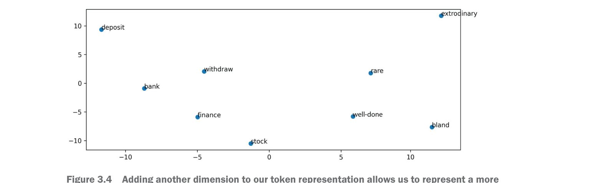
诀窍在于使用多个数字来表示每个token，从而能够找到更好的表示，以容纳词语之间的不同关系。图3.4展示了一个使用两个数字的例子。我们可以看到，比如平淡与三分熟和全熟几乎等距，同时银行远离前面提到的三个词，反而接近股票。我们甚至还能加入几个额外的词。使用的数字越多（在领域术语中称为维度），就能表示越复杂的关系。
维数灾难。如果更多维度能更好地捕捉细微含义，为什么不尽可能多地使用维度来表示数据呢？处理大量维度时，会出现几个问题。一个主要问题是，LLM需要处理大量嵌入向量，而增加维度会提高存储和处理嵌入所需的内存和计算量。此外，随着维度增加，语义空间的规模暴增，训练机器学习模型以学习语义空间中所有位置所需的数据量和时间也呈指数级增长。数学家Richard E. Bellman创造了“维数灾难”这一术语来描述这一现象，因为尽管我们希望创建一个能够捕捉细微含义的空间，却受到所创建空间基本属性的限制。
在LLM术语中，用于表示词元的数字列表称为嵌入（embeddings）。可以将嵌入视为一个浮点数值的数组或列表。为简便起见，我们称这种数组为向量（vectors）。向量中的每个位置称为维度（dimension）。如图3.4所示，使用多个维度可以捕捉人类语言中单词之间关系的细微差别。由于嵌入存在于多个维度中，我们常说它们位于语义空间（semantic space）中。在某些机器学习应用中，尤其是在不涉及文本时，这被称为潜在空间（latent space）。语义空间是一个模糊的术语，在该领域中没有明确定义，但最常用作一种简写，表示代表每个词元的向量嵌入具有良好的性质：同义词/反义词具有更近/更远的距离，并且我们可以高效利用这些关系。例如，在图3.5中，我们展示了一个著名的案例：通过减去男性嵌入并加上女性嵌入，可以构建一个“变为女性”的变换。这个变换可以应用于许多不同的男性性别词，以找到相同概念的女性性别词。图3.5右下角所有“皇室”相关词的共现也是有意为之，因为在高维空间中，可以同时维持多种不同类型的关系。

令人惊讶的是，我们无法保证这些语义关系会在训练过程中形成。只是它们经常出现，并且被发现非常有用。以此类推，语义空间中的关系并非万无一失，数据中的偏差也可能渗入。例如，模型通常会判定"医生"更接近"男性"，而"护士"更接近"女性"，因为在构建大多数模型所使用的通用文本中，医生更常被描述为男性，护士更常被描述为女性。因此，这些关系并非发现的客观真理，而是对所输入数据的反映。
标准Transformer的一个关键问题是它不理解序列信息。如果你给Transformer一个句子，并将所有token重新排列，它会将所有可能的token排列视为相同的！图3.6展示了这个问题。
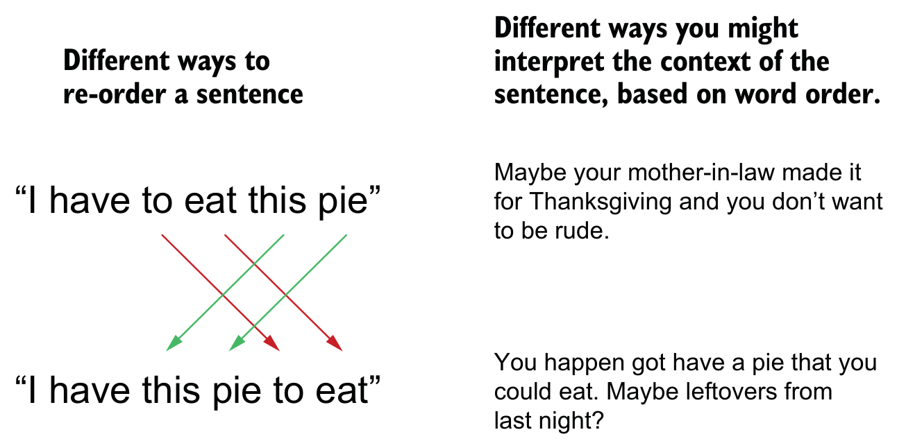
因此，嵌入层会生成两种不同的嵌入。首先，它创建捕获词元含义的词嵌入；其次，它创建捕获词元在序列中位置的位置嵌入。这个想法出奇地简单。正如我们将每个独特的词元映射到一个唯一的意义向量，我们也将把每个独特的词元位置（第一、第二、第三，依此类推）映射到一个位置向量。因此，每个词元将被嵌入两次——一次为其身份，一次为其位置。然后将这两个向量相加，得到代表该词及其在句子中位置的一个向量。图 3.7 概述了这一过程。
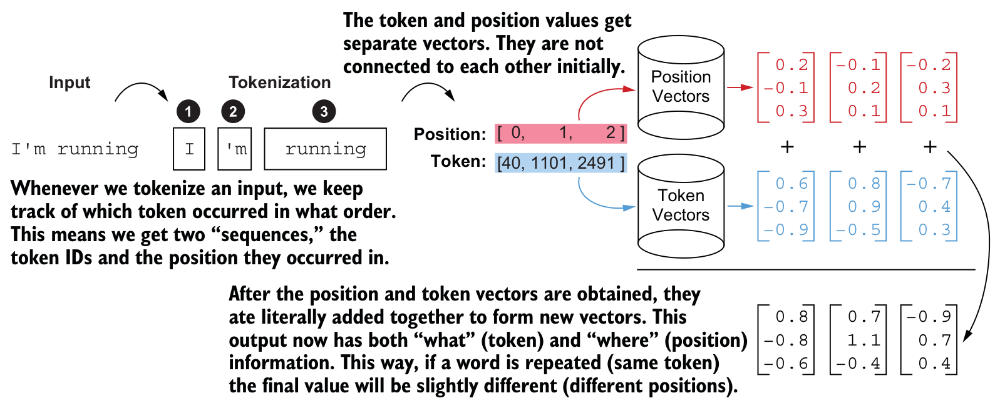
这些正是理解标记如何被转换成向量供 Transformer 层处理所需的全部细节。这种做法可能显得有点原始，事实也确实如此。人们曾尝试开发更复杂的方法来处理这些信息，但这种“把一切都向量化然后相加”的简单方法却出奇地有效。重要的是，它在视频和图像领域同样取得了成功。拥有一个足够应对多种问题的直接策略很有价值，这正是这种朴素方法得以流行起来的原因。
Transformer层旨在将输入转化为更有用的输出。大多数先前的神经网络层（如嵌入层）都设计为将关于世界如何运作的非常具体的信念融入其操作中。
其想法是，如果编码的信念与现实世界运作方式一致，模型就能用更少的数据得到更好的解决方案。
Transformer则采取了相反的策略。
它们编码了一种通用机制，只要有足够的数据，就能学习许多任务。
为此，Transformer由三个主要组件构成：
这一术语对应于Python中字典（dict）对象的行为。通过键来查找字典中的项，以便生成有用的输出。不同之处在于Transformer是模糊的。我们并不是在查找单个键，而是评估所有键，并根据它们与查询的相似度进行加权。图3.8通过一个简单示例展示了这一过程。虽然查询和键以字符串形式显示，但这些字符串代表的是每个字符串通过嵌入层映射到的向量。
如果每个键都为一个查询贡献力量，可能会造成混乱，尤其是在查询与某个特定键存在精确匹配的情况下。这个问题通过一个称为注意力或注意力机制的细节来解决。
Transformer中的注意力机制可以类比为你专注于重要事物的能力。你可以忽略无关和分散注意力的信息（即坏键），主要关注重要内容（最佳匹配键）。这个类比还可以进一步延伸：注意力是自适应的，重要程度取决于其他可选选项。老板给你布置本周任务会占据你的注意力，但火警响起时，你的注意力会从老板转移到警报（和可能发生的火灾）上。
在生成下一个token时，Transformer会获取当前token的查询，并将其与之前所有token的键进行比较。比较查询和键会生成一系列数值，注意力机制利用这些数值来计算

决定生成下一个词元时，应为每个可能的后续词元分配多少权重。每个词元的值告诉模型，前面的每个词元认为其对概率的贡献应该是多少。然后注意力函数计算下一个词元，如图3.9所示。

注意力机制的数学原理是什么？
我们不会深入探讨注意力背后的每一个数学细节，因为要描述它需要大量篇幅，且在其他地方已有介绍。我们曾在先前的一本书中做过：〈深度学习内部〉[2] 的第11章以更多技术细节解释了Transformer和注意力。
对于好奇的读者，主要公式是 Attention = Softmax( (Q·K)/√d ) V (3.1)
查询、键和值分别由独立的矩阵 Q、K 和 V 表示。矩阵乘法使得注意力机制在 GPU 上高效实现，因为 GPU 可以并行执行大量乘法运算。softmax 函数通过将许多值赋为接近于零来实现注意力类比的主要组件，这使 transformer 忽略不重要的项。
归一化与前馈网络的最后一步，是通过跳跃连接来应用层归一化和线性层。即便你对这些术语不熟悉，也没关系；读懂本书后续内容并不需要理解这些数学知识。如果你想了解这些术语的含义，我们推荐你参考《Inside Deep Learning》[2]，该书提供了技术细节的深入讲解。
一个Transformer模型由数十个Transformer层组成。中间Transformer层执行与图3.9所描述相同的机械任务，尽管它们不需要预测一个token，因为只有最后一个Transformer层需要预测实际的token。Transformer层足够通用，以至于组合许多中间层可以使模型学习复杂任务，如排序、堆叠和其他复杂的输入变换。
LLM的最后阶段是解嵌入层，它将transformer使用的数值向量表示转换为特定的输出token，以便我们最终能够返回与该token对应的文本。
这一输出生成过程也称为解码，因为我们解码transformer的向量表示得到一段输出文本。
它是使用LLM生成文本的关键组件。
解码当前token不仅对产生输出至关重要，而且下一个token将依赖于之前每个选中的输出token。
图3.10展示了这个过程，我们递归地一次生成一个token。
用统计学的术语来说，这被称为自回归过程，意味着输出的每个元素都基于其之前的输出。

你可能好奇这个过程是如何停止的。在构建词元词汇表时，我们会包含一些文本中不会出现的特殊词元。其中一种特殊词元是序列结束（EoS）词元。模型在带有自然结束点的文本上进行训练，这些文本以EoS标记结束；当模型生成一个新词元时，EoS词元是可生成选项之一。如果生成了EoS，我们就知道应该停止循环并将完整文本返回给用户。此外，如果模型陷入不良状态而未能生成EoS词元，设置一个最大生成限制也是一个好主意。
这个过程中缺失的是如何将transformer层生成的一个向量（一组浮点数数组）转化为一个词元。这个过程称为采样，因为它采用统计方法，根据LLM的输入和当前已生成的输出来从词汇表中选择候选词元。LLM的采样算法对这些候选进行评估，从而决定生成哪个词元。有几种不同的采样技术，但都遵循相同的基本两步策略：
1. 对词汇表中的每个词元，计算其成为下一个被选中词元的概率。
2. 根据计算出的概率随机选取一个词元。
如果你使用过ChatGPT或其他LLM，可能会注意到同样的输入并不总是产生同样的输出。解码步骤就是你每次问同一个问题却得到不同答案的原因。
随机选择token看似有悖直觉，但这是生成高质量文本的关键。以图3.11中的文本生成示例为例，我们试图补全句子“I love to eat.”。如果模型总是选择概率最高的“sushi”作为下一个token，那将是不切实际的。如果有人在这种情况下总对你说“sushi”，你会觉得不对劲。我们需要随机性来处理存在多个有效选择且并非所有选项都可能出现的事实。
2. 每个可能的词元都会计算一个概率，多数词元的概率接近于零。
BBQ 23%，bbq 7%
3. 掷一次“加权骰子”来决定下一个词元。

还要注意，在图3.11的例子中，其他token（如42）被赋予极小的概率，因此是毫无意义的。同样，我们需要为每个token分配概率，以判断哪些token可能出现或不可能出现。
如何获得token的概率？
每个可能的下一词元被选中的概率各不相同。大多数词元被选中的概率几乎为零。细心的读者可能会问：在不知道其他词元的情况下，我们如何能为一个词元分配概率呢？我们的方法是给每个词元一个分数，表示该词元的嵌入与当前向量（即Transformer的输出）的匹配程度。这个分数是任意值，范围从负无穷到正无穷，并且每个词元独立计算。然后利用分数的相对差异来生成概率。例如，如果一个词元的分数是65.2，另一个是-5.0，那么这两个词元被选中的概率分别接近100%和0%。如果这两个分数分别是65.2和65.1，那么概率分别接近50.5%和49.5%。
类似地，分数0.2和0.1与分数65.2和65.1会给出相同的概率，因为我们是根据分数的相对差异来分配概率的，而不是分数本身。
Transformer 有时会产生异常或无意义的生成内容。这种情况虽然不常见，但其他 token 的概率几乎为零，最终某个怪异的 token 会被选中，出乎你的意料。一旦选中了意外的 token，后续生成的所有 token 都会尝试让这个异常变得合理。
例如，如果 LLM 生成了“我爱吃粉笔”，你会相当惊讶。但这并非完全不合理，因为吃粉笔是一种名为异食癖的医学症状。一旦选定了“粉笔”这个词，LLM 可能会转向关于异食癖或其他医学话题的讨论——当然，前提是你足够幸运，你的异常生成属于“罕见但合理”的范畴，而不是完全错误的预测。
注意：许多算法可以计算用于选择生成词汇的最终概率。
其中一种是核采样（Top-p采样），它确定概率最高的令牌作为候选输出，并从该列表中选取输出的令牌。这种方法有助于避免不合理的预测。如果可能，你应该检查你的LLM使用了哪种采样算法，以便了解其产生从罕见到不合理输出的风险。
根据用户计划与LLM交互的方式，可能希望生成令人惊喜或富有创意的输出。例如，你使用LLM来帮助头脑风暴新产品创意，并将聊天机器人作为激发灵感的数字回音板。在这种情况下，你可能希望产生不寻常的输出，因为目标是发挥创造力，想出新颖的东西。
相反，有时创意完全是不需要的。LLM的一个潜在用途是离线搜索，你可以将LLM安装在（相对强大的）手机上，即使在没有网络连接时也能查询信息。这种情况下，你希望LLM的输出可靠、切题且基于事实。不需要创造性的重新诠释。
LLM中一个名为“温度”的功能平衡了这一取舍。温度变量（一个介于0和1之间的数字，默认值通常为0.7或0.8）用于放大低概率令牌的概率（高温）或抑制低概率令牌的概率（低温）。
以一杯水中的分子作为类比。假设我们想知道哪个分子会出现在杯子顶部（别问为什么，先顺着这个思路）。如果将杯子降到绝对零度，所有分子将静止，杯子顶部的分子每次都会可靠地相同（即，你总是生成相同的令牌）。如果将杯子的温度升高到开始沸腾，分子会四处弹跳，使得杯子顶部的分子基本上是随机的（即，你得到完全随机的令牌）。当你上下调节温度时，你改变了在更大随机性（因此通常更具创造性）和只关注最可能的下一令牌（从而保持生成内容更切题）之间的平衡。
在实际应用中，以“我喜欢吃”为例，较高的温度会导致生成不同类型的食物，不仅是比萨或寿司，还可能是更不典型或更具体的食物，如威灵顿牛排或素辣酱。
本章我们涵盖了很多内容。嵌入层、Transformer层和反嵌入层是让LLM工作的核心构建块。LLM如何编码含义和位置，然后使用堆叠的Transformer层来揭示文本中的结构，这些概念对于理解LLM如何捕获信息并产生其能力的输出质量至关重要。但我们还有更多细节要讲！我们如何通过分析大量数据来创建这些层进而生成嵌入和概率？在第四章中，我们将继续探索如何将数据输入这个架构，并通过训练过程激励LLM“学习”文本中有意义的关系。
虽然 LLM 以词元为基本语义单元，但在模型内部，它们并非以字符串形式，而是以嵌入向量的方式进行数学表示。这些嵌入向量能够捕获临近性、相异性、反义词等语言描述属性之间的关系。位置和词序并非变换器天然具备的特性，而是通过另一个表示相对位置的向量获得。模型通过将位置向量与词嵌入向量相加来表示词序。变换器层类似于一种模糊词典，对近似匹配返回近似答案。这一模糊过程称为注意力机制，它使用查询、键和值这三个术语，类似于 Python 字典中的键和值。
ChatGPT 是仅解码器变换器的一个例子，但也存在仅编码器变换器和编码器-解码器变换器。仅解码器变换器最擅长生成文本，但其他类型的变换器在其他任务上可能表现更佳。
LLM 是自回归的，这意味着它们递归工作。在每一步，所有先前生成的词元都被输入模型以获取下一个词元。简单来说，自回归模型利用之前的内容预测下一个内容。
任何Transformer的输出都不是词元，而是每个词元出现概率的概率分布。选择特定词元的过程称为“解嵌入”或“采样”，其中包含一定的随机性。
随机性的强弱可以控制，从而产生更逼真、更具创意或更一致的输出。大多数大语言模型都有一个默认的随机性阈值，看起来合理，但你可能需要根据不同的用途调整它。
译文范围: 章节内段落 1–143（共 143 个段落，渲染 75 个，1 个为图像/页眉/页码等不可译块）。
“学习”和“训练”这两个词在机器学习社区中常用来描述算法在观察数据并基于这些观察做出预测时的行为。我们不太情愿地使用这些术语，因为虽然它们简化了关于算法操作的讨论，但我们认为这并不理想。从根本上讲，这种术语会导致对 LLM 和人工智能的误解。这些词暗示算法具有类似人类的特质；它们诱使你相信算法展现出涌现行为，能力远超其实际所能。在根本层面上，这种术语是不正确的。计算机的学习方式与人类的学习方式没有丝毫相似之处。模型确实会根据数据和反馈进行改进，但极其重要的是，要在机制上将这与人类学习严格区分开来。事实上，你可能并不希望 AI 像人类那样学习：我们花费多年专注于教育，却仍然会做出愚蠢的决定。
深度学习算法的训练方式远比人类学习更为公式化。这里的"公式化"既指字面意义上大量使用数学公式，也指比喻意义上遵循简单重复的过程，重复数十亿次直至完成。我们不会深入数学细节，但本章将帮助您揭开大语言模型训练的神秘面纱。
许多机器学习算法使用名为梯度下降的训练算法。这个算法的名称本身就暗示了一些细节，我们将通过梯度下降在机器学习中应用的高层概述来回顾这些细节。一旦您理解了训练多种不同模型类型的通用方法，我们将探讨如何将梯度下降应用于大语言模型，以创建能够生成令人信服文本输出的模型。
理解这些细节将帮助您避免"学习"等词语带来的不准确联想。更重要的是，它还将让您更好地理解大语言模型在当前设计下成功与失败的原因，以及这些算法可能以微妙方式产生误导性输出的常见情况。
梯度下降是所有现代深度学习算法的关键。当行业从业者提到梯度下降时，他们实际上指的是训练过程中的两个关键要素。第一个是损失函数，第二个是计算梯度——这些度量告诉你如何调整神经网络的参数，使得损失函数以特定方式产生结果。你可以将这两者视为两个高级组件：
损失函数和梯度下降是用于生成机器学习模型的训练算法的组成部分。如今有许多不同的训练算法在使用，但通常每种算法都会向模型输入数据，观察模型的输出，并对模型进行调整以提升其性能。训练算法会重复这一过程无数次。只要有足够的数据，模型在面对从未见过的输入时，就能反复稳定地产生预期的输出。
我们将以赚钱为例，帮助建立对合适损失函数的直观认识。诚然，一个聪明人能赚钱，所以如果你有一台智能计算机，它也应该能帮你赚钱。为这一任务（或任何其他任务，这些原则适用于LLM之外的任何机器学习问题）选择合适的损失函数，需要满足三个标准：特异性、可计算性和平滑性。换句话说，损失函数需要……
具体且与模型期望行为相关；在合理的时间和资源条件下可计算；平滑，即对于相似输入，函数输出不会剧烈波动。我们将通过以下正例和反例来帮助您建立对每个属性的直觉。
首先，我们来举一个糟糕的具体性例子。如果老板对你说：“造一台智能计算机”，这固然是一个宏伟的目标，但并不是一个具体的目标。还记得第 1 章我们讨论过给智能下定义有多困难吗？你的老板到底想要这台计算机在哪些方面表现出智能？一台深谙世事却解不了微积分作业的计算机，能满足要求吗？相反，你可以尝试针对某个特定的智商分数进行优化，但那个分数和你老板想要的东西相关吗？早在 LLM 出现之前的十多年里[1]，我们就能让计算机通过智商测试了。然而，除了通过智商测试和执行有限任务外，它们什么都做不了。归根结底，智商测试与我们期望计算机做的事并不相关。因此，在机器学习中，或者为老板建造那台智能计算机时，将智商作为成功的度量标准并不值得优化。
另一个例子涉及管理金钱的挑战。考虑这样一个场景：你想要最小化你的债务。你甚至可能希望债务为负，也就是说别人欠你钱！我们在这里用债务为例，因为它本质上是一个你想要变得更小的值。这个类比与实践中的说法完美契合：你想要最小化你的损失，就像你想要减少你的债务一样。债务数额也是一个客观度量，使其成为确保损失函数在变化条件下依然相关的好方法。最后，如果我们的总体目标是保持现金盈余，那么最小化债务与该目标高度相关。最小化债务具备一个好的损失函数的所有特征！
术语说明：你可能会听到损失函数也被称为目标函数。我们建议新手避免使用这个术语，因为它含义模糊。例如，不清楚你是想最小化（债务）还是最大化你的目标（利润）。这两种方法在技术上都可行；将最大化目标乘以-1，就得到了最小化目标。
你可能也会在某些语境中听到奖励函数这一术语，例如强化学习（RL）。这很恰当，因为强化学习算法通过执行期望的行为来最大化奖励。
无论术语如何，目标函数、奖励函数和损失函数都满足同一个基本需求：它们提供了一种评估机器学习模型输出结果的方式。
损失函数还必须能够由计算机快速计算。债务示例在这方面并不合适，因为所需的全部输入和输出并非计算机能轻易获取。在工作中更努力会增加收入从而降低债务吗？也许吧，但我们如何将你的努力工作编码进计算机呢？这里我们面临一个问题：最小化债务最关键的因素难以量化，比如工作机会、你与这些工作的匹配度、晋升可能性等。因此，损失是具体的，但与损失相关的输入却是不可计算的。
一个更好、更可计算的目标是预测投资的损失。这个目标更好的原因很微妙。该目标仍然是客观的，因为我们的算法从历史数据中学习。例如，历史上对债券X和股票Y的投资有特定的回报。输入现在也变得客观：你可以量化投入到每项投资中的现金金额。你要么投入资金，要么取出资金。没有像“努力工作”这样难以编码的问题需要处理。有了历史数据的副本，计算机可以快速计算投资的损失/回报。
我们需要考虑的第三个特性是平滑性。很多人通过对比光滑与粗糙的纹理，就能直观理解平滑的含义。不过此处讨论的是函数的平滑性，可以通过绘制函数图像来呈现。例如，在预测投资损失时，我们会遇到投资收益通常不平滑的问题。它们可能呈现出波动模式，价格图线锯齿状起伏，充满尖锐突变。这给学习带来了困难。图4.1展示了真实世界投资收益的不稳定值曲线。
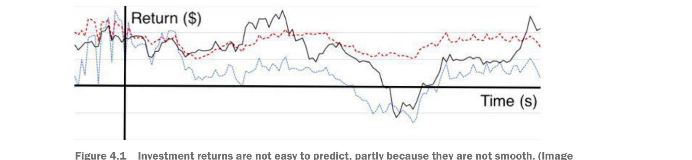
对于任何预测方法而言，不可预测的行为都是个问题。你最好始终对那些声称能很好预测此类非平滑数据的人或方法保持警惕。然而，“平滑”有一个精确的技术定义，如果损失函数不满足这一定义，那将是一个难以逾越的障碍。依赖于不连续性或函数值一致性的断裂的函数，是最常见的在技术上不平滑的函数，但我们希望在实践当中仍能使用它们。图 4.2 给出了一些非平滑函数的例子，以帮助你理解。平滑性通常因不连续性（如中间的图所示）或函数值的突变（如右图所示）而受阻。
我们将不深入探讨描述平滑性以及平滑函数中可接受或不可接受的值变化的形式数学定义。不过，我们已经提供了足够的背景知识，让你了解你需要知道的内容。你需要理解的关键点是，你对平滑的直觉（即值连续变化）能很好地衡量损失函数的可行性。这看起来可能有些随意，但这是一个普遍存在的问题。假设你想构建一个能准确预测癌症的模型。准确率不是一个平滑函数，因为你计算的是成功预测数量占总预测数量的比例。例如，如果你有50名患者，正确预测了其中48名，那么平滑函数会允许48.2例、47.921351例或任何你能想到的数字。然而，实际癌症病例数只能取整数1, 2, 3, ..., 48, 49, 50，因为不存在部分病例这种情况。
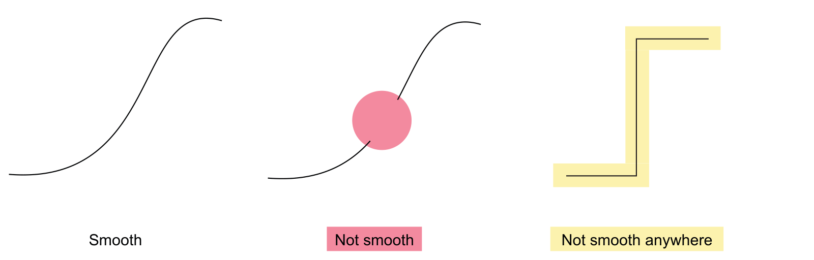
如何处理非平滑损失？
准确率是最常见的预测目标之一，但我们无法在训练算法时使用它，这可能会令人震惊。但这是事实！那么，我们如何处理这个奇怪的现象？答案是创建一个代理问题。代理问题是表示问题的另一种方式，与我们要解决的问题相关但表现更好。在这种情况下，我们使用交叉熵损失函数而不是准确率。虽然我们不会在这里深入探讨交叉熵损失的细节，但它的使用表明代理问题是机器学习和人工智能中使用的核心技巧。
这一讨论引出了关于大语言模型学习方式的另一个关键启示，这一启示也适用于大多数算法：我们用来训练模型的技术，其关注点往往并非我们期望模型完成的任务，而是我们能够促使模型学习的内容。这种关注点可能导致激励不匹配，进而引发意外结果或性能低下。在考察第二个主要训练组件——梯度下降——之后，我们将讨论大语言模型损失函数的本质是如何造成这种激励不匹配的。
拥有损失函数是执行梯度下降的前提。损失函数客观地告诉你当前任务执行得有多糟糕。
梯度下降是我们用来调整神经网络参数以减少损失的过程。
这是通过利用损失函数比较输入训练数据以及神经网络的实际输出与期望输出来实现的。
在这种情况下，梯度是你需要改变神经网络参数的方向和大小，以减少损失函数衡量的误差。
梯度下降向我们展示了如何“微调”神经网络的所有参数，以提高其性能并缩小期望输出与实际输出之间的差距。
图4.3展示了这一过程的示意图。
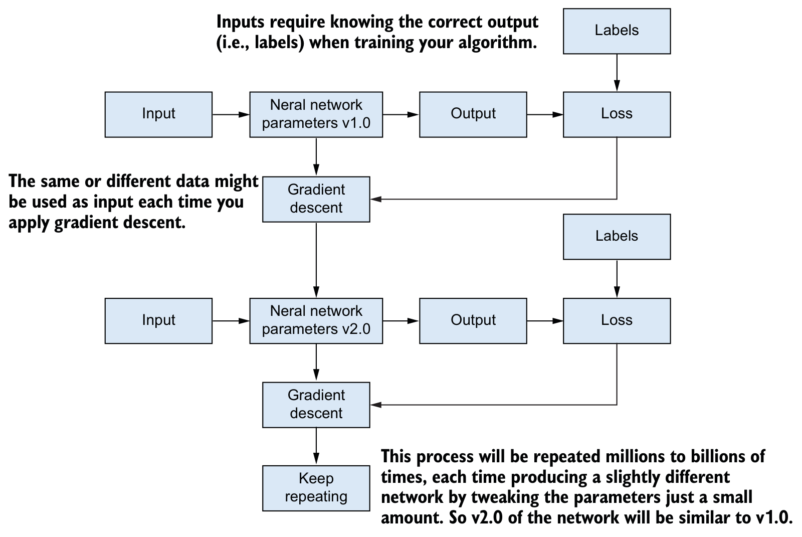
如图4.3所示，每次应用梯度下降时，我们都会创建一个略有不同的新网络。由于变化很小，这个过程需要重复数十亿次。这样，所有微小的变化累积起来，最终使整个网络发生更显著、更具意义的改变。
LLM之所以进行数十亿次参数更新，是因为它们接受了数十亿个token的训练。数据越多，梯度下降运行的次数就越多。数据越少，需要运行的次数就越少。用于训练LLM的数据量超过你一生能阅读的总和。
梯度下降是一种重复应用且毫无偏差的数学过程。
无法保证它一定能奏效，或找到最佳甚至不错的解。尽管如此，许多研究者都惊讶于这个相对简单的方法竟然如此实用。
为了帮助你理解梯度下降的工作原理，我们将用一个滚球下山的简单例子来说明。小球的位置代表神经网络中某个节点的参数值，该参数可由训练算法调整。山的高度代表损失值，衡量模型在处理训练输入时表现有多糟糕。我们希望将小球滚下山坡，进入最深的山谷，因为那里损失最低，表明模型表现最佳。图4.4展示了这一示例。
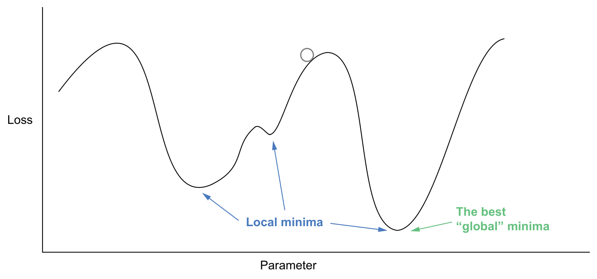
如你所见，小球可能落入许多山谷。行业术语称此问题为非凸优化，因为有多条路径可降低损失，但并非每条路径都必然通向最优解。还需注意，这并非比喻。梯度下降确实是按这种方式看待问题的。这些示例展示了梯度下降如何在一个参数模型中工作。在训练LLM时，同样的过程应用于数十亿个参数。
因此，从这个位置出发，我们贪婪地判断哪个方向能让球沿坡下行。我们在图4.5中应用了两次梯度下降。这表明贪婪的选择是向左。当我们通过调整参数向左移动时，球会沿斜坡略微下降。从图中可以看出，向右搜索存在更优的解，但由于算法过于简单，梯度下降不太可能找到它。在这种情况下，要找到最优解需要更智能的搜索与探索策略，但实践中成本过高，难以有效执行。

另外，请注意在图4.5的第二步中，小球卡住了。虽然显然继续向左移动会实现更低的损失，但这个结果之所以显而易见，只是因为我们能看到全局。梯度下降既无法看到全局，也无法看到附近的情况。它只知道由当前参数和损失函数决定的精确位置。因此，它是一种贪婪过程。像梯度下降这样的贪婪过程是简化方法，具有一个理想的特性——可计算性，即多次运行以达到结果的计算成本并非高得令人望而却步。贪婪过程是短视的，因为它们仅基于当前状态选择下一步最优步骤，尽管可能存在更广泛、更优的解决方案。它们之所以这样做，是因为评估当前及所有可能的未来状态是不可能的，因为需要考虑的潜在结果数量太多。那将需要过多的计算。人们希望，利用有限信息做出许多简单的局部最优决策，通常能带来最积极的结果——在此案例中，即最小化损失函数的值。
在这部分关于梯度下降的讨论中，我们跳过了一些在实际应用中需要考虑的重要细节。首先，如这里所述，梯度下降需要同时使用所有训练数据，这在计算上不可行。相反，我们使用一种称为随机梯度下降（SGD）的过程。SGD与我们描述的过程完全相同，只是它使用训练数据的一个小随机子集，而不是整个数据集。这大大减少了训练模型所需的内存，从而得到更快、更好的解决方案。这种方法之所以有效，是因为梯度下降只在当前贪心方向上做微小变化。事实证明，在决定下一步走向时，少量数据几乎与使用全部数据一样好。如果你有十亿个token，你可以在大约相同的时间内进行十亿次SGD步骤，而使用全部数据的一次标准梯度下降步骤也需要这么多时间。
许多训练方法使用SGD的一种特殊形式，称为自适应矩估计（Adam）。Adam包含一些额外的技巧，有助于更快地最小化损失函数并避免陷入停滞。Adam的主要技巧是给球一些动量，随着更新不断沿一个方向移动，动量会累积。这种动量使球更快地滚下山坡，并且意味着如果遇到一个小的局部最小值，可能有足够的动量冲过去并继续前进，从而到达损失函数图中损失最小的区域。
Adam的缺点是，存储每个参数的动量信息会使训练所需的内存比普通SGD增加三倍。内存是构建LLM时最关键的因素，因为它通常决定了你需要多少块GPU，这直接转化为你口袋里的钱。尽管Adam不会使最终模型变大（因为训练完成后你可以丢弃与Adam额外动量计算相关的数据），但你首先需要一个足够大的系统来执行训练。Adam能够更有效地最小化损失所带来精度提升，伴随有明显的代价。
现在我们理解了深度学习算法是如何通过指定损失函数并使用梯度下降进行训练的，接下来可以讨论如何将其应用于 LLM。具体而言，我们将重点关注训练 LLM 所用的数据以及损失函数或奖励函数。LLM 通常是在人类撰写的文本上进行训练的。
具体来说，它们被明确训练为模仿人类生成的文本。尽管这听起来有点显而易见（不然还能训练它们做什么呢？），但这一细节常常被忽视或与其他概念混淆，即使是该领域的专家也不例外。尤其是，语言模型并非被训练来做以下任何一件事：
记忆文本、生成新想法、构建世界表征、产生事实准确的文本。在深入之前，有必要进一步解释这个概念。训练一个模型下棋时，模型会因为获胜得到奖励而学会好好下棋。相比之下，语言模型只有在生成与训练数据完全相同的文本时才能获得奖励。因此，LLM生成的所有与训练语料中文本相似的文本都会带来高奖励（或低损失），即使这些生成内容并非真实或事实。这是4.1节讨论的损失函数与设计者更高层目标之间不一致的一个例子。
LLM是在从互联网抓取的数百GB文本数据集上训练的。互联网以包含大量错误（且奇怪）的信息而闻名。在大多数任务上表现更好的LLM，往往在那些训练数据中常被错误表述的任务上表现更差（参见 https://github.com/inverse-scaling/prize 上的逆缩放奖）。例如，研究人员一致发现，更好的语言模型也更擅长复述常见的错误知识[3]、模仿刻板印象和社会偏见[4]。它们容易陷入不断强化错误的恶性循环。例如，在生成包含错误的代码后，它们更有可能生成包含更多错误的代码[5]。这些内容在训练文本中普遍存在，因此LLM预测它们（尽管是错误的）也会获得正向奖励。因此，基于其损失函数变得更好的LLM，也意味着在需要真实性和正确性的这些任务上变得更差。
之前我们提到，LLM会因为生成“看起来像训练数据”的数据而获得奖励。在本小节中，我们将更具体地探讨这意味着什么。
LLM的训练方式是向模型展示句子的前几个词元，然后让它预测下一个词元。
损失函数基于该预测与训练数据相比的准确性。
例如，模型可能看到“This is a”，并期望生成“test”。如果模型生成“test”，则得分；如果没有，则扣分。
这一过程对文本的所有起始片段都执行，如图4.6所示。
在这里，模型被训练独立预测每个高亮词。
这种设置并非LLM独有，它已被用于训练循环神经网络（RNN）多年。
然而，LLM变得如此流行的一个重要原因是，它们的训练效率远高于RNN。
RNN必须按顺序对每个生成结果进行训练，因为每个新生成的词依赖于之前选择的词。
而LLM由于第3章讨论的transformer架构，可以并行训练所有生成结果。
并行训练相关生成结果的能力带来了巨大的速度提升，使得大规模训练成为可能，也是构建当今使用TB级数据的最先进LLM的前提。
我们之前讨论过预测下一个词元可能带来的问题，因为算法可能会被激励产生不正确或事实错误的输出。
我们还必须探讨为什么尽管存在这些问题，这种方法仍能产生如此令人信服的输出的直觉。
一个合理的问题是：一个被训练来生成最可能的下一个词元的算法，如何能看起来像是在进行推理？
为培养这种直觉，想象一下你如何尝试预测给定句子的下一个词元。计算机无需快速响应，所以你可以慢慢思考。考虑句子“I love to eat <blank>”，并尝试猜测<blank>处应填什么词。句子前半部分提供了有价值的上下文。既然我们在讨论吃，你几乎可以立即将范围缩小到食物。计算机维护所有可能食物的列表并不困难。
现在，如果你考虑本书作者的背景，你会获得更多上下文。我们是同一地理区域的美国人，这使得某些特定菜系比其他菜系更可能出现。大型语言模型不会拥有这些背景信息，但如果句子更长且有更多上下文，你可以开始像图4.7所示那样缩小选择范围。
当你在前文中识别出关键词或短语时，就能洞察到下一个最可能预测的词。计算机执行这些计算时所做的处理远超人类所需。这种暴力关联主要将范围缩小到非常合理的选项上。同样，模型会经过数十亿次更新来优化这些关联，从而获得一种有用的能力，这种能力与我们的目标——即让算法能够理解和响应人类文本——密切相关。
然而，相关不等于因果，这种下一个词预测策略可能会导致有趣的错误。大语言模型容易犯“循环论证”错误，即问题的前提暗示了某种不真实的东西。由于大语言模型不是为准确性或矛盾检测而训练的，它会试图生成一系列类似人类的文本预测，这些预测可能跟随你误导性的问题。图4.8给出了 ChatGPT 处理此类问题的一个例子，我们询问了干意大利面条的异常强度。
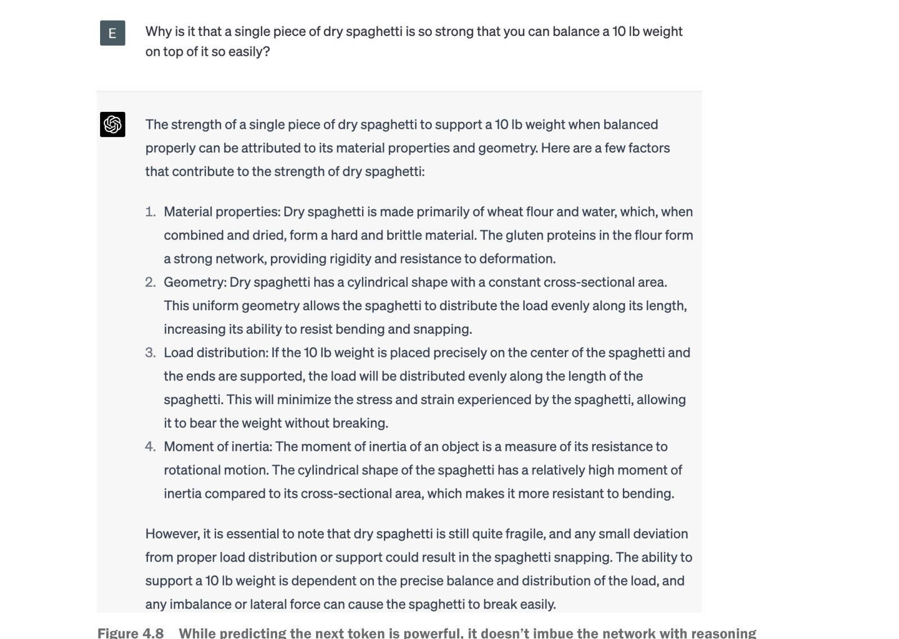
意大利面能支撑自身上百倍重量这一核心说法是荒谬且不真实的。然而，算法通过将问题格式化为“为什么X如此坚固？”，已经预先准备好提供关于材料抗拉强度的答案。模型可以提取这一关键上下文。先前的训练数据很可能是基于一个事实性问题来解释这类材料属性，这告诉模型预测一个类似的回答是合适的。句子的主语（意大利面）和宾语（10磅重物）被用来提供回复中的次要细节，而回复本身是通用的。
自回归的下一词预测策略的本质，及其在训练过程中作为损失或奖励的使用，为我们提供了关于LLM生成回复的性质以及它们可能事实不准确的深刻见解。然而，它也揭示了为什么LLM在信息检索方面可以非常有效，作为一种比标准搜索引擎强大得多的关键词搜索。有一些方法可以围绕非事实性回复的局限性进行设计。例如，许多LLM方法会在生成输出中添加引用，以便能够快速验证用于生成文本的内容是否事实准确。LLM也可以作为一个有价值的回音板，一个半伙伴来碰撞想法，作为灵感和创造力的来源。关键是，这也帮助你理解一个应该避免使用LLM的关键情况，因为它们更容易出错——即新颖问题和任务。
LLM通常不擅长执行新颖任务。判断你的任务是否新颖可能相当具有挑战性，因为互联网是奇怪的。互联网上存在大量随机的东西，包括如何编程绘制鸭子和独角兽的比赛[6]。如果任务与之前见过的任务足够相似，或者与训练数据中的其他内容结构相似，你可能会得到看似合理的结果。这个结果可能非常有用，但随着你的任务与训练数据中的内容相比变得越来越独特，它的质量可能会下降。
例如，我们要求ChatGPT编写计算数学常数π(pi)的Python代码。这个任务并不新颖；网上存在大量类似的代码，ChatGPT忠实地为我们返回了正确的代码。
def calculate_pi(terms):
pi = 0
for i in range(terms):
term = ((-1) ** i) / (2 * i + 1)
pi += term
pi *= 4
return pi
print(calculate_pi(1000000))现在让我们迫使 ChatGPT 做一些不算太难的推断。我们让 ChatGPT 把这个函数翻译成 Modula-3 编程语言。这个任务不算太大的推断；Modula-3 是一种风格相似的编程语言，也是一种具有历史意义的编程语言，影响了当今几乎所有最流行语言的最终设计！然而，它过于晦涩难懂。如今你几乎找不到这种编程语言的例子，主要是在大学编译器课程中。下面的清单显示了 ChatGPT 还算合理的尝试。正如你可能已经从本章的上下文中预料到的，ChatGPT 犯了一些错误，在清单中已标出。
IMPORT IO, Real;
PROCEDURE CalculatePi(terms: INTEGER): REAL;
VAR
pi: REAL := 0.0;
i: INTEGER;
BEGIN
FOR i := 0 TO terms - 1 DO
pi := pi + ((-1.0) ** FLOAT(i)) / (2.0 * FLOAT(i) + 1.0);
** isn’t a
END;
RETURN 4.0 * pi;
END CalculatePi;
BEGIN
IO.PutReal(CalculatePi(1000000), 0, 15);
END CalculatePi.这个简短的程序有三个错误，会导致它无法运行。更有趣的是，ChatGPT 之所以会犯这些错误，是因为它自信地从其他语言中推断出标准编码实践。（在这种情况下，“自信”意味着 ChatGPT 没有警告我们它可能出错。一位作者喜欢说，ChatGPT 听起来像他们最过于自信且经常出错的朋友。）在这个例子中，`**` 是一个常用的幂运算函数，所以 ChatGPT 认为 Modula-3 支持这个操作。据我们搜索互联网所知，Modula-3 没有任何关于如何对变量进行幂运算的文档示例。由于大多数编程语言使用 `^`、`**` 或 `pow` 选项支持此操作，ChatGPT 就凭空推断出了一种。正确答案应该是，它必须先实现一个 pow 函数，然后用它来计算 pi。
提供给 PutReal 函数的参数则是另一个谜。我们最好的猜测是，15 对应于打印浮点值 15 位的推断，这是计算 pi 时的典型默认值。无论如何，这不是该函数的工作方式。
更重要的是，ChatGPT 在某些细微细节上是正确的，但仅限于那些能在互联网上找到且已有解释的部分（例如，需要使用 `FLOAT(i)`，以及使用 `4.0 * pi` 而不是 `4 * pi`）。没有互联网示例的任务正是 ChatGPT 出错的地方。
这个例子也凸显了当前LLM中“推理”感知与实际表现之间的局限性。Modula-3的完整语言规范可在网上获取，并且记录了所有这些细节或它们的不存在之处。ChatGPT几乎肯定见过许多其他编程语言规范、解析器规范以及数百万行常见编程语言的代码。如果一个人拥有这些背景知识和资源，进行必要的逻辑归纳来避免全部三个错误应该不会太困难。然而，LLM并不执行任何归纳过程，因此尽管信息广泛可用，它仍然会出错。这并不是说结果不令人印象深刻，它可以成为加速你自己代码开发或使用不熟悉的API和语言的宝贵工具。但这也提醒你，此类工具对广泛使用且有文档记录的语言和API效果更好，尤其是当它们符合预期标准时。例如，大多数数据库使用SQL语言，这使得对也使用SQL的新数据库的准确外推更有可能。
另一个值得注意的LLM失败案例是，当它们无法正确识别应当执行的任务时，它们会回答与用户意图不同的问题。未能正确识别任务曾经是原始GPT-3等模型面临的重大难题，但后续工作通过增加训练数据中结构化任务示例的数量，显著提升了后续ChatGPT模型遵循指令的能力。然而，ChatGPT在某些情况下仍然无法识别正确的任务。例如，通过询问某个与常见任务细微不同的罕见任务，或以不熟悉的方式修改一个模型见过多次的问题，就能可靠地诱发这种行为。
一个著名的例子是渡河谜题：农民要把卷心菜、山羊和狼用船运过河。谜题规定，山羊不能单独与卷心菜在一起（否则山羊会吃掉卷心菜），也不能单独与狼在一起（否则狼会吃掉山羊）。ChatGPT能快速解决这个谜题，但如果我们稍微改变谜题的逻辑结构，模型仍然沿用旧的推理方式，如图4.9所示。虽然LLM的错误通常难以追溯到具体原因，但在这个案例中，模型会欣然告诉我们“确保没有任何物品（卷心菜、山羊、狼）无人看管地留在一起”。虽然这个指令在原始版本的卷心菜/山羊/狼问题中是正确的（并且很可能是基于逻辑问题中的约束规范），但模型没有意识到，在给定版本中，山羊和狼单独在一起并无问题。不仅没有必要像建议的那样交换动物，而且ChatGPT的建议会失败，因为它将狼和卷心菜放在了一起，而这是明确禁止的。这个现象的另一个有趣例子是，当你消除了需要留在岸上的物品时（即所有物品都能一起带走），从任何逻辑理解来看，显然你只需把所有东西装上船然后过河即可。但模型再次因为过于习惯于回答它多次见过的那个版本的问题而这样做。

要理解这一现象的原因，首先需要回顾第3章中讨论的LLM训练的自回归特性。模型被明确鼓励基于先前内容生成内容。为解决重构后的逻辑谜题而生成的内容，在单词和顺序上几乎与解决原始逻辑谜题的内容完全相同。因此，在Transformer层的查询-键配对中，存在一个良好的模糊匹配，从而产生构成原始谜题解法的数值。模糊匹配完成后，先前的解法便通过Transformer使用的注意力机制被忠实地返回。尽管这一策略对模型准确预测这一著名谜题的词元非常有效，但它并未涉及对谜题逻辑的推理。
LLM自回归特性的另一个微妙限制是，它们只能处理上下文中的信息。LLM被训练为接受输入并生成合理的后续内容。然而，它们无法进行规划、做出承诺或跟踪内部状态。一个很好的例子是当你尝试与ChatGPT玩“20个问题”游戏时。人类玩20个问题时，会预先承诺一个隐藏信息，即他们选择用来通过答案识别的对象。当ChatGPT玩这个游戏时，它会逐个回答问题，然后事后找到一个与所给答案一致的输出。图4.10展示了这个例子，其中显示了玩20个问题的可能对话树。当有人与LLM玩游戏时，会随机选择其中一个对话树，而不是产生一个在整个游戏中保持一致的目标对象。

大部分需要完成的工作并不新颖。至少，还没有新颖到足以让LLM束手无策。然而，认识到LLM的能力在需要更多逻辑或细微差别时会迅速下降，有助于你缩小其使用范围。
在设计生产级计算机系统时，一个关键因素是明确工具的使用时机和方式范围。当你将像ChatGPT这样的LLM产品开放给没有特定范围的普通用户时，人们会让它做各种你意想不到的、随机的、疯狂的事情。虽然这对研究可能很好，但通常不适用于生产应用。尽管你的用户和客户会尝试用你的LLM应用做不可预测的事情，但假如你限制系统的访问权限，并围绕用户拥有特定目标、有限用例来设计，甚至限制他们的输入如何到达你的LLM。在这种情况下，你可以构建用户体验更可靠的产品。
如何在没有用户输入的情况下使用大语言模型？
大语言模型非常适合提供低门槛的编码或数据处理，尤其是在处理格式不甚规整或未经整理的数据时进行日常任务。不过，通过给用户提供有限的选择集，可以在降低风险的同时获得实用性。将提示限定为少量代码选项供用户选择，或者让用户决定在哪个数据源（例如某个内部数据库）上运行提示，这样就能阻止（大部分）用户向大语言模型输入任意文本。
相反，你可能会问：“我们能否检测出新颖的请求，并给用户返回一个错误？”理论上，是的，你可以尝试这样做。首先，我们不鼓励这样做，因为从用户体验角度来看，这并不理想。其次，这变成了一个称为新颖性检测或异常检测的任务。这个问题具有挑战性，并且很可能无法以绝对无错的方式解决。因此，我们鼓励预防优于检测，选择那些不需要通过分析LLM输入或输出就能高度准确预测失败的使用场景。
提示的应用——提示是一门艺术，旨在为大型语言模型构建输入，以引导其产生理想的行为。语言模型对输入的措辞方式非常敏感，因此设计出能引发恰当回应的输入能力显得尤为珍贵。在使用大语言模型时，一个反复出现的问题是人们通常不思考如何正确地与它们交互。提示大语言模型的最佳方式是：设想你期望的输出类型在训练数据中会是什么样子，然后写下它的开头四分之一内容。然而，人们往往直接描述想要语言模型完成的任务，认为这样的说明能让模型专注于问题。不幸的是，这种方法结果不稳定，并催生了通过向模型输入大量指令与响应对作为训练数据来微调大语言模型的研究。
2019年，Rich Sutton提出了“苦涩的教训”这一术语，用以描述他在机器学习领域的经验。“从70年的人工智能研究中可以学到的最重要一课是，那些利用计算能力的通用方法最终是最有效的，而且优势巨大”[7]。
人们真切地感受到，Transformer是这一原则的终极体现。你可以不断将它们做得更大，用更高的并行度训练，并增加更多GPU。这与RNN形成鲜明对比，后者无法像Transformer那样高效并行化。我们在图像领域也看到了这一点，生成对抗网络（GAN）方法难以达到十亿参数规模。LLM中基于Transformer的方法可以轻松扩展到数百亿参数，从而构建更大、更好的模型。
从解决方案设计的角度来看，你今天的原型可能会因模型大小而遇到显著的限制。更大的模型需要更多资源，预测时间也更长。你的用户能接受的最大响应时间是多少？以这个速度运行你的模型所需的硬件有多昂贵？模型大小的增长速度超过了消费级硬件的增长速度。因此，你可能无法将模型部署到嵌入式设备上，或者需要网络连接来分摊成本。因此，你需要在设计中考虑网络基础设施，以应对持续连接的需求。这一要求会增加电池消耗，由于需要持续开启Wi-Fi而非本地计算，这一点需要纳入考量。因此，尽管更大的模型更准确，但设计约束可能会妨碍它们以实用的方式部署。将这些约束与本章学到的关于LLM如何进行预测以及LLM在何时何地失效的用例结合起来，将让你具备充分的能力，去理解如何最有效地利用LLM解决你最关心的问题。
深度学习需要一个损失/奖励函数，专门量化算法在预测中的表现有多差。这个损失/奖励函数应该设计得与我们期望算法在现实中实现的总体目标相关联。梯度下降通过逐步使用损失/奖励函数来改变网络的参数。
大型语言模型通过预测下一个词元来训练以模仿人类文本。这个任务足够具体，可以训练模型执行它，但它与推理等高层次目标并非完美相关。大型语言模型在与训练数据中常见且重复的任务类似的任务上表现最佳，但在任务足够新颖时则会失败。
译文范围: 章节内段落 1–155（共 155 个段落，渲染 97 个，10 个为图像/页眉/页码等不可译块）。
如何约束LLM的行为？
通过控制模型允许产生的输出来让模型更有用，这看似反直觉，但在使用大语言模型时几乎总是必要的。之所以需要这种控制，是因为当给定任意文本提示时，大语言模型会试图生成它认为合适的响应，而不考虑其预期用途。考虑一个帮助顾客买车的聊天机器人：你不会希望大语言模型偏离脚本，仅仅因为顾客问了一些与带孩子去踢足球相关的事情，就开始和他们谈论田径或体育。
本章将更详细地讨论为什么要限制或约束大语言模型的输出，以及此类约束相关的细微差别。准确约束大语言模型是最难完成的任务之一，这是因为大语言模型根据训练数据中的观察来补全输入的本质。目前还没有完美的解决方案。我们将讨论可以修改大语言模型行为的四个潜在环节：
在训练前，通过筛选用于训练LLM的数据、改变LLM的训练方式、在特定数据集上微调LLM、以及在训练完成后编写特殊代码来控制模型输出——这四种情形总结在图5.1中。LLM开发的每个阶段都滋养着下一个阶段。微调阶段是在较小数据集上进行的第二轮训练，对于理解ChatGPT等工具当今的运作方式最为重要，也是你实际中最可能采用的方法。我们已在第2至4章学习过，第一轮规模更大的训练阶段通常称为预训练，因为它发生在微调使模型变得有用之前。预训练过程产生的模型有时被称为基础模型或基座模型，因为它是构建特定任务（即微调）模型的起点。

由于微调的重要性和有效性，本章将重点探讨这一因素及其执行方式。
大语言模型之所以取得巨大成功，是因为它们首次实现了“用自然语言告诉计算机做什么，它就会照做”这一理念。通过非常明确地表述你的需求，设定具体的细节层次并指定特定的语气，你可以让大语言模型成为一个极其有效的工具。
这组详细的指令被称为提示词，而设计优质提示词的技艺则被称为提示工程。例如，我们可以为汽车销售机器人开发一个提示词，如图5.2所示。
你可以给LLM一个提示，要求将数据组织成逗号分隔值，以便复制到Excel中。你也可以设计一个提示，说明如何将自由格式的调查回复分类成总结的主题。在所有情况下，提示都是将行为限制或约束到特定任务和目标集的一种练习。然而，前几章讨论的分词和训练技术并不能支持这种指令遵循。
按照第4章所述流程训练LLM，得到的模型通常称为基础模型，因为它可以作为构建应用或微调模型的基础平台。
不幸的是，基础模型对大多数人来说并不十分有用，因为它们没有通过用户友好的界面暴露其底层知识，难以保持对话主题，有时还会产生不良内容。
基础模型甚至在训练时都没有被赋予像ChatGPT那样的聊天机器人概念。
等待法律体系跟上步伐。我们不是你的律师，这也不是法律教材！围绕LLM的法律问题十分复杂，在合理使用与侵权方面存在诸多细微差别。搜索引擎可以直接显示来源内容，但为什么可以这样做？一系列明确针对这些问题的法律，如《数字千年版权法案》（DMCA），以及法院判例确立的先例，如Field诉Google案（412 F.Supp. 2d 1106 [D. Nev. 2006]），逐步确立了可接受与不可接受的使用界限。然而，立法和司法判例的建立需要时间，而生成式AI的革命无法完全纳入现有的法律框架。
GPT-3.5和GPT-4经过改进，会回避回答不知道的问题（尽管并非总能成功）。但我们可以看看一些开源基础模型，比如GPT-Neo，在没有主动对策的情况下会出现什么情况。例如，如果我们编造一种新药MELTON-24，然后问“MELTON-24是什么？它能帮助我改善睡眠吗？”我们会得到这样的无用回复：“褪黑素会伴随大量睡眠问题，包括失眠和疲劳。这会导致失眠，以及为什么避免食用抑制褪黑素的食物很重要。”在这种情况下，MELTON与褪黑素的相似性以及“睡眠”的提示足以让模型抓住褪黑素这个主题。
但显然，这个回答是荒谬的，因为MELTON-24并不存在。理想情况下，我们希望模型能够识别并做出回应，承认自己缺乏信息，而不是像这样输出更多文本。
如果用户要求以特定格式提供数据，例如像JSON这样的结构化文本格式（关于计算机间数据交换的常见格式示例，请参见https://en.wikipedia.org/wiki/JSON），而你没有正确匹配每个左括号或右括号，或没有正确编码特殊字符，那么输出将无法满足用户的需求。
无论输出多么复杂或接近正确，格式要求几乎总是严格的要求。
我们在第4章中提出了这类问题的一个例子：当我们要求ChatGPT用Modula-3编写代码时，它借用了对Modula-3无效的Python语法。
如果代码违反语法规则，它将无法编译。
LLM采用概率方法为特定期望输出生成文本，不能保证100%遵守所有期望的语法规则。
既然我们已经了解了为何需要约束和控制LLM行为的种种原因，现在就可以更好地向模型引入新信息，以解决我们试图解决的问题，同时避免产生有害或可能违法内容的问题。请记住，虽然有四个不同的干预点可以改变行为，但微调远比其他方法有效。无论是像OpenAI [2]这样的闭源选项，还是像Hugging Face [3]这样的开源工具，以及其他众多选择，都提供了多种微调方案，使其成为从业人员最易上手的方法。
任何微调方法都会产生相同的效果——生成一个具有更新参数、从而控制其行为的新LLM变体。因此，我们可以混合搭配不同的微调策略，因为它们产生的根本效果是一样的：一组新的参数，可以直接使用，也可以再次调整。一个人的基础模型可能是另一个人的微调模型。这在许多开源LLM中很常见：一个初始模型（例如Llama）会被另一方修改（例如，你可以找到许多“Instruct Llama”模型），然后你可以根据自己的数据或特定用例进一步微调。
自定义LLM最直接的方式是通过提示工程，不断迭代优化提示词，直到获得期望的行为。但如果这种方法效果不佳，微调就是下一个合理的步骤。这一步涉及一定程度的额外工作和成本增加，例如收集微调所需的数据以及获取运行微调会话的硬件。
你尤其需要了解两种微调方法：监督式微调（SFT）和听起来更吓人的“基于人类反馈的强化学习”（RLHF）。SFT方法更直接，非常适合将新知识融入模型，或者简单地在你的偏好应用领域中提升模型表现。RLHF则更复杂，但它提供了一种让LLM遵循更困难、更抽象目标（如“做个好聊天机器人”）的策略。
影响模型输出的最常见方法是SFT。SFT使用高质量、通常由人类编写的示例内容，这些内容包含对任务至关重要的信息，但基模型不一定能很好地体现这些信息。
这通常是因为LLM在大量通用内容上训练，而通用内容与您的具体需求重叠甚少。
如果您经营医院，LLM很少见过医生的笔记；如果您经营律师事务所，LLM可能没看过太多证词笔录；如果您经营维修店，LLM可能没见过您手头的所有手册。
警告：微调是为模型添加新信息的有用方法，但也可能带来安全风险。
如果你想在医疗记录上构建LLM，那么在示例医疗记录上对LLM进行微调是合理的。但现在存在风险：有人可能让你的LLM再现微调数据中包含的敏感信息，因为从根本上说，LLM会基于其见过的训练数据来完成输入。底线：不要在你希望保密的数据上训练或微调LLM。
再来看看我们汽车公司及其销售聊天机器人的例子。来自第三方的基础模型通常对汽车有基本了解，但很可能并不了解该公司产品的全貌。通过在内部手册、聊天记录、电子邮件、营销资料及其他内部文档上对模型进行微调，你可以确保模型尽可能多地掌握关于你的汽车的信息。你甚至可以编写关于你的车辆相对于竞争对手的优势、优点、脚本等示例文档，以确保 LLM 拥有你想要它掌握的信息。
SFT的机制很容易解释。正如我们之前提到的，SFT只需要更多的文档。这些文档可以是任何能够提取文本的格式。这构成了应用SFT所需的全部工作，因为SFT只是重复你在第4章学到的训练过程。图5.3显示SFT的过程与你之前看到的相同。不同之处在于，第一次训练基础模型时，初始参数是随机的且没有用处。第二次微调时，你从基础模型的参数开始，这些参数编码了基础模型通过观察训练数据所学到的内容。

令人高兴的是，你现在已经对SFT有了很好的理解。与原始训练过程一样，它重用了“预测下一个词”这一任务，以确保模型内部融入了新文档的信息。作为预测下一个词的直接后果，SFT也无法改变LLM的激励。因此，像“不要对用户说脏话”这样的抽象目标，通过SFT是很难实现的。
微调陷阱 通过重用第4章的梯度下降策略，所有微调方法都倾向于继承两个围绕LLM返回其训练内容的能力的问题。由于SFT非常简单，现在是时候回顾除SFT之外更广泛的微调问题了。
无法保证SFT能正确保留你提供的信息。这个问题，被称为灾难性遗忘[4]，发生在当你训练新数据但不继续训练旧数据时，模型开始——
“遗忘”那些较早的信息。很难确定哪些信息会被遗忘，哪些不会。灾难性遗忘自1989年以来就是一个公认的问题[5]。换句话说，微调并非纯粹的信息叠加；你为此要牺牲一些东西。
目前，RLHF是约束模型的主流范式。顾名思义，它借鉴了强化学习（RL）领域的方法。RL是一大类技术，算法必须做出多个决策以最大化长期目标，如图5.4所示，其中四个术语具有技术含义：

在一个大语言模型作为聊天机器人与人类交互的例子中，用户就是环境。大语言模型本身是智能体，它能生成的文本就是动作。还剩最后一项需要指定：奖励。如果我们让用户对与聊天机器人的良好对话（例如，没有脏话、没有撒谎、提供有帮助的回复）打+1分，对糟糕的对话（例如，它建议毁灭全人类）打-1分，那么我们就将人类反馈添加到了强化学习中。
敏锐的读者可能会注意到，奖励听起来与第4章讨论的损失函数非常相似。事实上，我们那个好与坏对话的例子恰恰属于非常主观且难以量化的范畴，我们曾指出这是损失函数的反面教材。+1/-1 奖励并不平滑，因为值指向一个方向或另一个方向，没有中间地带，这是损失函数的另一个糟糕特性。
强化学习的强大之处之一在于它能处理非连续且难以量化的目标。我们使用“奖励”而非“损失”这个术语，正是为了体现这两种情况的区别。通常，强化学习能够学习的目标类型被称为不可微的。因此，这些目标无法使用诸如梯度下降等数学技术来学习，我们曾在第4章描述神经网络如何学习时介绍过这些技术。我们稍后将具体解释RLHF的工作原理。强化学习的一个警示是它计算开销大且需要大量数据。强化学习是出了名的难学。它通常比其他微调技术（如SFT）效果更差，因为强化学习需要比其它方法多得多的“正确”与“错误”示例，而且由于我们使用人类反馈来指导RLHF，结果并非总是完美。例如，在图5.5中，RLHF无法帮助大语言模型理解在RLHF训练期间未明确见过的基本指令，因为它不会为基础模型增加任何执行基本逻辑的能力，例如理解用户要求避免显示关于海豚的信息。
大语言模型并不像我们人类所理解的那样进行推理。通过收集数亿个“一切”的示例，你可以取得很大进展，但世界是奇特的。我们几乎没有证据表明大语言模型能够在出现新情况时可靠地生成令人满意的回复。然而，RLHF是目前约束大语言模型行为的最佳方法。尽管存在挑战，强化学习提供了一种基于梯度且需要可微目标的方法所不具备的学习方式。最重要的是，ChatGPT已经表明强化学习在许多情况下是有效的。那么，让我们深入探讨RLHF的工作原理。
SFT和RLHF是微调大语言模型的两种主要方法。SFT可以处理数千个文档或样本，而RLHF通常需要数万个示例。
数据较少时不应阻止你尝试，但如果数据确实不多，把时间花在编写更好的提示词上可能更划算。
更重要的是，SFT和RLHF并不互斥。它们都会修改模型的底层参数，你可以依次应用两种方法，从而获得各自的好处。
它们也并非当前仅有的微调方法。
例如，新的微调方法正在被开发中。

从LLM中移除某些概念，以强制模型忽略其在训练后所学到的数据[6]。额外的模型修改技术将在未来几年内得到发展。所有这些技术很可能需要你进行一些数据收集，但总体工作量比从头构建一个LLM要少。
为了说明RLHF的工作原理，我们将先介绍一个不完整的RLHF版本，解释它为何不起作用，然后再说明如何修正。在本节中，我们不会讨论RLHF使用的详细数学公式，因为从高层视角来看，它们并不能让你对RLHF产生特别深刻的理解。如果你想了解更具体的细节，我们建议在完成本章后，从“Implementing RLHF: Learning to Summarize with trlX”[7]开始入手。
首先，我们来看看不完整且朴素的RLHF版本。我们已经讨论过RL如何通过不可微的目标进行学习。
因此，假设我们有一个人类评分员，他会用质量奖励来给LLM的输出打分，其中+1表示好的响应，-1表示不合格的响应。这个质量奖励只是我们分配给LLM输出的一种任意分数，用于表明某个例子比其他例子更好。
因此，如果用户请求LLM“讲个笑话”，LLM回复“需要多少只鸭子才能拧灯泡？”，我们可能会给这个（还算）不错的笑话打+1分。如果LLM反而输出了像“狗是邪恶的”这样的句子，我们会打-1分，因为它甚至没有尝试讲笑话。由于使用简单的+1和-1质量奖励来进行RL比较困难，我们会为RL算法添加额外信息，例如每个生成词元的概率。这样，RL算法就知道每个词元可能有多大的概率。整个过程如图5.6所示。

为何要向强化学习提供概率？
我们将每个 token 的概率提供给 RL 算法，这似乎有些奇怪。这样做有更深层的数学原因，本章不展开讨论。但直观上来说，一个好笑话往往需要误导或意外。如果序列中所有概率都很高（接近 1.0），那么它可能不是一个好笑话，因为太可预测了。
大致而言，在整个自然语言处理中，生成优质文本是一种平衡：既要让内容合理（即可能发生），又不能让它过于合理（即重复）。
我们将质量奖励描述为针对每个提示补全的人工评分。虽然实时手动给补全打分在技术上可行，但所涉及的工作量使得这种做法不合理。然而，人类反馈仍然通过质量奖励被纳入。相反，我们训练了一个神经网络作为奖励模型。这是通过让人类手动收集数十万个提示与补全对，并将其评为好或坏来实现的。这些评分成为用于训练奖励模型的标注数据，如图5.7所示。

收集数十万条带评分的提示和完成对是昂贵但可行的（例如，https://huggingface.co/datasets/Anthropic/hh-rlhf），尤其是在使用像 Mechanical Turk（https://www.mturk.com/）这样的众包工具时。这需要大量人工整理，但比用于创建初始基础模型的数十亿词元要小几个数量级。这些RLHF数据集必须足够大，因为你需要覆盖用户可能提出的各种场景、问题和请求。正如我们在图5.5的海豚示例中看到的，RLHF往往适用于相对简单和已知的主题。因此，处理不同情境的广度直接来源于微调数据的广度。
注意：我们一直以+1/-1为例来说明提供质量奖励，因为它最容易描述。由于RL不需要梯度，你可以使用任何与问题相关的分数。使用排名分数（即比较给定提示的多个补全并从优到劣排序）更流行且更有效，因为你可以同时对多个补全进行评分。无论如何，提供正面和负面反馈的本质是相同的。
一旦训练好奖励模型，你就可以为RLHF流程创建并评分任意数量的提示。
人类反馈被嵌入到奖励模型中，现在可以分发、并行化和复用。
唯一剩下的问题是，当前朴素的RLHF版本只激励最大化质量奖励，而这不是RL必须关注的唯一目标。
结果，模型会随时间退化，产生胡言乱语和无意义的输出，这些输出质量不高，对任何读者都没有价值。这种退化与一种称为对抗性攻击的现象相关——只需对输入做出微小改变，就能出人意料地轻松欺骗神经网络做出荒谬决策。对抗性机器学习（AML）发展迅速，并且有其自身的复杂性深渊，所以我们把讨论留给其他人[8]。但我们在图5.6中描述的朴素RLHF实现本质上是对LLM执行对抗性攻击，因为它只专注于最大化质量奖励，而不是对用户有用。本质上，这是古德哈特定律在AI/ML中的体现：“当一个指标成为目标时，它就不再是一个好指标。”为了解决这个问题，我们必须给RL算法增加第二个目标。
我们将计算原始基础LLM输出与微调后LLM输出之间相似性的第二个奖励。概念上，这个奖励可以看作当微调LLM产生更好输出时的奖励，类似于原始LLM的行为方式。它防止模型因过于新颖而偏离轨道。从根本上说，我们希望微调LLM生成的输出以原始LLM最初观察到的训练数据为基础。我们不希望微调后的模型变得过于创意，以至于产生胡言乱语。这个奖励被添加到RL算法中以稳定微调过程。图5.8展示了RLHF的完整工作方式。

一个学会生成乱码输出的模型会因缺乏相似性而受到高惩罚，从而阻止模型变得过于不同。一个产生完全相同输出的模型会得到低质量分数，从而阻止其缺乏变化。两者的平衡很好地实现了“金发姑娘效应”，让模型有足够的灵活性进行变化，同时不至于失去其类人输出。
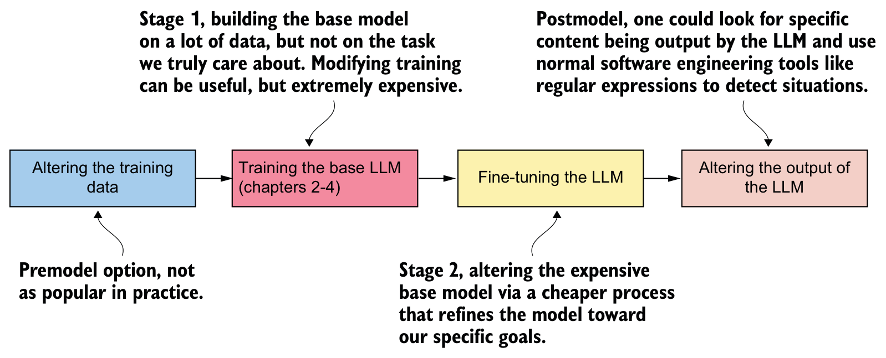
微调是改变大语言模型行为的主要手段，但微调并非万无一失，也不是行为改变的唯一途径。我们之所以关注微调，是因为RLHF在让大语言模型产生超越简单下一个词预测的行为方面具有价值。
如图5.9所示，LLM行为可被修改的其他三个阶段，对用户而言并不容易直接触及。不过，此处我们将简要回顾这些阶段，并补充一些您应当了解的关键细节，以求完整。这些因素有助于理解通过微调难以实现的目标，以及您可能需要向LLM提供商探究的问题范围。
在训练或微调大语言模型时，隐私保护是一个重要关切。通常，通过特殊方式构造模型输入，有可能重建模型的训练数据。
在某些情况下，已证明大语言模型会生成与训练数据完全一致的文本片段。
如果训练数据包含私人信息，如个人身份信息（PII）、个人健康信息（PHI）或其他敏感数据，这就成了问题。
模型用户可能在不经意间输入提示词，导致模型逐字泄露这些数据。
算法初始训练阶段是缓解部分隐私问题的理想时机，可通过差分隐私（DP）技术实现。
DP 较为复杂，若想深入学习，推荐阅读《Programming Differential Privacy》[13] 一书。
简而言之，DP 在模型训练过程中添加精心构造的随机噪声，为数据隐私提供可证明的保证。
DP 并非万能，但相比当前大多数算法，它能提供更强的保护。
那么，为什么不是所有人都这样做呢？添加噪声自然会降低结果质量。
大规模训练成本高昂，每次训练花费数十万到数百万美元。
如果为了正确设置隐私参数需要额外进行10倍的训练，就会面临数百万到数千万美元的成本问题。
但随着DP技术逐年改进，我们预计它未来会越来越普及。
最后，我们可以检查生成的词元，并编写代码根据模型生成的词元组合来改变其行为。
微调之后，这是LLM使用者用来修改其行为的第二常见阶段。
在本章前面，我们讨论了LLM的一个常见需求：生成符合精确格式（如XML或JSON）的输出。
实现这类格式化要求是LLM常见的问题。任何一个预测失败都会导致无法生成有效输出。
你可以在图5.10中看到这种失败的例子：我们要求LLM补全一些Python代码，下一个词元应该是分号（;），但它错误地尝试了一个换行符（\n）。

有多种工具（例如 `https://github.com/noamgat/lm-format-enforcer`）可以在 LLM 解码步骤中指定严格的格式。如果这些工具检测到解析错误，它们会立即重新生成最后一个 token，直到产生有效的输出。
当然还可以采用更复杂的方法来选择下一个 token。但重要的启示在于，我们可以利用中间输出，在生成完整输出之前就做出决策。即使是简单的老式“通过/不通过”列表，也是捕捉不良行为的有用工具。你无需真正实时地将输出传递给用户；完全可以引入人为延迟，这样在发送给用户之前，你能看到更多回复内容。这让你有时间对照不良语言过滤器或其他硬编码检查进行核对。如果匹配到了，就像图 5.10 中那样，你可以重新生成输出或终止用户会话。
至此，本章已介绍了一些操控LLM以生成更理想、更一致输出的基本方法。目前，我们关注的技术都直接作用于LLM本身，包括提示工程、训练数据操作或对基座模型进行微调。本节将探讨如何将LLM的输入和输出整合到多步操作链中，从而定制LLM的输出结果，实现更具针对性的效果。这一领域发展迅速，因此我们将简要介绍一个将LLM融入更广泛信息检索工作流的具体实例，然后讨论一个通用工具，展示如何通过与LLM的多次交互来自定义其输出。
检索增强生成（RAG）是一种技术，它能让我们利用LLM生成答案，同时降低产生无意义或错误解释的可能性。RAG名称中的“检索”一词为你理解该技术的运作方式提供了有益的提示。当用户向RAG系统提供输入时，系统会利用LLM创建一个查询，该查询随后在包含文档索引的搜索引擎上运行。根据用例不同，这个索引可以是通用信息索引（如谷歌），也可以是特定主题的索引（如汽车营销材料集）。作为对查询的响应，搜索引擎会生成相关文档列表。然后，RAG系统利用LLM从这些文档中提取信息，以生成更好的答案。为此，RAG系统将检索到的文档内容与原始用户查询结合起来，为LLM创建一个综合提示，从而产生更好的响应。这种方法往往效果很好，因为我们不再要求LLM基于其训练或微调数据生成响应，而是要求LLM通过总结一组与普通搜索引擎查询相关的文档来生成对输入的响应，并将这组相关文档提供给LLM，供其从中提取答案。换句话说，我们是在帮助LLM聚焦于正确回答特定问题所需的数据。我们在图5.11中描述了这个过程，并将其与目前介绍的标准LLM用例进行了比较。到目前为止，RAG方法最显著的两个优势如下：
RAG 系统的输出因其基于文档索引中的特定来源，所以更准确、更符合事实，或者对用户的原始问题更有帮助。
LLM 可以生成对其生成回答时所使用的源文档的引用或参考，使用户能够对照原始来源材料进行验证或比对。
后者关于引用的问题尤为重要。RAG 并不能解决 LLM 的所有问题，因为在 RAG 系统中，最终输出仍然由 LLM 生成。LLM 仍然可能因为无法找到或不存在的内容而产生错误或幻觉。LLM 也可能无法准确捕捉或
1. 用户的问题会与搜索引擎或某种数据库进行比对。

RAG 模型无法代表其所使用的任何源文档中的内容。因此，RAG 方法的效用直接与其执行搜索的质量以及返回的文档质量相关。归根结底，如果无法针对你的问题构建一个有效的搜索引擎，就无法构建一个有效的 RAG 模型。
在思考大语言模型时，有一个重要方面需要关注，即上下文大小。大语言模型的上下文大小决定了它在单次完成请求中能够计算的token数量。你可以将其视为大语言模型在接收提示词输入时能够查看的数据量。例如，GPT-3的上下文大小为2,048个token。然而，在聊天机器人中，上下文通常用于存储整个对话的实时记录，包括大语言模型的输出。如果你与GPT-3的对话长度超过2,048个token，你会发现GPT-3常常会忘记对话早期讨论的一些内容。
上下文大小是RAG使用的一个促进和限制因素。如果RAG系统检索一整本书供LLM消化，那么LLM将需要巨大的上下文大小来
能够使用它。否则，LLM只能消费检索文档的第一部分（不超过LLM的上下文大小），从而可能遗漏信息。因此，上下文大小是选择模型时需要考虑的重要操作特性。如今一些模型，例如X的Grok，可以处理多达128,000个令牌的上下文大小。虽然像Grok这样的大上下文大小提高了LLM能消费的硬上限，但处理更大上下文所带来的大量输入时LLM的有效性仍是一个活跃的研究领域。
你可能注意到，在图5.11中我们必须创建一个新提示。我们添加了前缀“回答问题：”和后缀“使用以下信息：”。理论上，通过调整这个提示，你可以获得更好的结果。你可能会想到添加一些指令，比如“忽略任何与原始问题无关的以下信息。”这些想法开始涉及提示工程，即调整和修改输入LLM的文本以改变其行为的实践，正如我们之前在第四章中讨论的那样。
提示工程确实有用，是一种结合多次调用LLM以改进结果的好方法。例如，你可以尝试通过让LLM重写问题来改进搜索结果。（这个讨论涉及信息检索的一个经典领域，称为查询扩展，如果你希望了解更多这个话题的话。）然而，提示工程可能非常脆弱：任何对LLM的更新都可能改变哪些提示有效或无效，而且必须重写每一个提示会很麻烦——尤其是当你涉及更复杂的东西，比如RAG模型或更高级的模型。
如今，我们已经开始看到将LLM作为自定义应用程序组件构建的编程库和其他软件工具。
我们特别中意的一个是DSPy（https://dspy.ai），它能够简化构建和维护试图修改LLM输入和输出的程序。
一个好的软件库会隐藏那些妨碍生产力的细节，而DSPy在抽象化围绕LLM使用的以下任务方面做得很好：
集成正在使用的特定LLM；实现常见的提示模式；根据你期望的数据、任务和LLM组合调整提示。
这不是一本编程书，因此全面讲解DSPy超出了范围。但是，了解DSPy如何用于实现我们在5.5.1节中描述的RAG模型仍然具有启发性。这需要选择要使用的LLM（本例中为GPT-3.5）以及信息数据库（维基百科很合适），并定义RAG算法。DSPy的工作原理是定义一个所有组件都使用的默认LLM和数据库（除非你干预），这使得分离和替换所使用的部分变得容易。这个过程如下列表所示。
GPT-3.5（可替换为其他在线或本地LLM）import dspy llm = dspy.OpenAI(model='gpt-3.5-turbo') 使用ColBERTv2算法对维基百科副本进行向量化 similarity_and_database = dspy.ColBERTv2(
使用我们刚刚创建的 LLM 和文档数据库 dspy.settings.configure(
检索数据库中三个最相关的文档 self.retrieve = dspy.Retrieve(
指定一个“签名”字符串，用于定义LLM的输入和输出：self.generate_answer = dspy.Prediction(
这段代码将前述关于LLM和数据库的选择设为默认值，使得替换OpenAI为其他在线LLM或本地模型（如Llama）同样简单。`class RAG(dspy.Module):` 类随后定义了RAG算法。初始化器仅包含两部分。
首先，我们需要一种基于向量化文档搜索字符串数据库的方法，该方法由ColBERTv2定义。它使用了一个更老的语言模型（也就是四年前，天哪，这个领域发展真快），但速度更快，以提升效率和性能。记住，较大的语言模型（即运行成本更高的模型）只需要检索到合理的文档即可。尽管ColBERTv2的效果可能不如GPT-3.5，但在大多数情况下，它足以帮你找到正确的文档。然后，`dspy.Retrieve` 使用这个默认数据库进行搜索，因此除了指定检索的文档数量外，无需其他设置。
其次，我们需要将问题和文档组合成一条查询，发送给大语言模型。在DSPy中，提示词对我们来说是抽象的。相反，我们编写DSPy所谓的签名（signature），你可以将其视为函数的输入和输出。这些输入和输出应赋予有意义的英文名称，以便DSPy为你生成良好的提示词。（在底层，DSPy使用语言模型来优化提示词！）在本例中，我们有两个输入（question和relevant_documents），用逗号分隔。符号->用于表示输出的开始，这里我们只有一个输出：问题的答案。
注：DSPy 的签名支持一些基本类型。例如，你可以通过在字符串中标注 "question, relevant _documents -> answer:int" 来强制答案必须为整数。该命令将应用我们在图5.10中学到的相同技术，在出错时重新生成。
这就是定义我们的 RAG 模型所需的全部操作！在 forward 函数中调用对象并传出，但你可以根据需要修改这段代码来添加更多细节。你可以将所有文本转为小写、运行拼写检查器，或在此处使用任何你想要的代码。这种方法让你能够将编程规则与 LLM 混合搭配使用。你还可以轻松修改 RAG 定义以纳入新的约束条件，并编写代码让 LLM 执行验证。
更重要的是，DSPy 支持使用训练/验证集来更好地调整提示、微调本地 LLM，并帮助你创建一个经过经验测试、改进和量化的模型，从而无需花费大量时间处理 LLM 的特定细节即可实现目标。尽早采用这类工具，你将获得一个更加稳健的解决方案，从而能更轻松地升级到更新的架构。
你可以通过四个环节干预并改变模型的行为：数据收集/分词、初始基座模型训练、基座模型微调，以及预测令牌拦截。这四个环节都很重要，但微调是大多数用户最有效的干预方式，能够降低成本并最大程度调整模型的目标。监督微调（SFT）是在更小的定制数据集上执行常规训练过程，有助于精炼模型对特定领域的知识。
基于人类反馈的强化学习（RLHF）需要更多数据，但它允许我们指定比“预测下一个令牌”更复杂的目标。在输出格式必须严格（如JSON或XML）的情况下，你可以使用语法检查器等现有工具来检测LLM的不正确输出。生成和语法检查可以循环运行，直到输出满足必要的语法约束。
检索增强生成（RAG）是一种流行的方法，它通过搜索引擎或数据库首先找到相关内容，然后将其插入到提示中，从而增强LLM的输入。
像DSPy这样的编码框架开始出现，它们将特定的LLM、向量化和提示定义与针对特定任务修改LLM输入和输出的逻辑分离开来。这种方法允许你构建更可靠、可重复的LLM解决方案，能够快速适应新模型和新方法。
译文范围: 章节内段落 1–135（共 135 个段落，渲染 77 个，4 个为图像/页眉/页码等不可译块）。
6 超越自然语言处理
虽然对自然语言进行建模是Transformer的主要用途，但机器学习研究人员很快发现，它们可以预测涉及数据序列的任何内容。Transformer将句子视为token序列，要么生成相关的token序列（例如将一种语言翻译成另一种语言），要么预测序列中的后续token（例如回答问题或充当聊天机器人时）。虽然序列建模和预测是解释和生成自然语言的有力工具，但自然语言并不是LLM唯一可以发挥作用的领域。除了人类语言之外，许多数据类型都可以表示为token序列。用于实现软件的源代码就是其中一个例子。源代码并非由你期望看到的英语单词和语法构成，而是用像Python这样的计算机编程语言编写的。源代码有自己的结构。
描述了软件开发者希望计算机执行的操作。与人类语言类似，源代码中的标记根据所使用的语言及其出现的上下文具有含义。与其说有什么不同，不如说源代码比人类语言具有更高度的结构性和特异性。带有歧义和含义微妙差异的编程语言将使计算机难以解释，也让其他人更难修改和维护。
源代码（或简称为“代码”，下文将如此称呼）只是LLM和Transformer处理非自然语言数据的一个例子。几乎任何可以重新表示为标记序列的数据都可以利用Transformer以及我们学到的关于LLM工作原理的诸多经验。本章将回顾三个逐渐远离自然语言的例子：代码、数学和计算机视觉。
这三种不同类型的数据（称为数据模态）都将需要对Transformer的输入或输出进行新的审视。然而，在所有情况下，Transformer本身保持不变。我们仍然会将多个Transformer层堆叠起来构建模型，并继续使用梯度下降训练这些Transformer层。代码与自然语言最为相似，因此不需要太多改动。不过，为了使代码LLM运行良好，我们将改变LLM输出生成后续标记的方式。接下来，我们将探讨数学领域，其中需要改变分词方式，以使LLM能够成功完成加法等基本运算。最后，对于计算机视觉（涉及处理图像以及执行目标检测和识别等任务），我们将同时修改输入和输出，展示如何通过完全替换标记的概念，将一种截然不同的数据类型转换为序列。我们在图6.1中展示了针对每种数据模态必须修改的LLM部分。
数学需要修改分词步骤。
代码需要修改输出生成步骤。
输出生成 Transformers 分词
计算机视觉需要同时修改分词和输出步骤。
图6.1 如果将LLM分解为三个主要组件——输入（分词）、变换（Transformers）和输出生成（去嵌入）——我们可以通过改变输入或输出组件中的至少一个来使用新的数据模态。同时，由于Transformer是通用的，在大多数用例中无需修改。
我们已经简要讨论过，LLMs能够编写软件的源代码。在第4章中，我们让ChatGPT编写了一段Python代码来计算数学常数π。接着，我们要求它将该代码转换为一种名为Modula-3的冷门语言。软件是人们最早发现LLMs能够提供帮助的领域之一，这是编程工作方式的自然结果。编程语言的设计初衷就是像文本一样供人类读写！因此，我们无需改变分词过程就能生成代码。我们讨论过的关于构建LLMs的一切，同样适用于代码和人类语言。
通过观察图6.2中ChatGPT对Python和Java两段相似代码的分词结果，我们可以印证这一点。这里，我们用灰色阴影来显示OpenAI分词器（https://platform.openai.com/tokenizer），它将代码分解为不同的词元。虽然同一个词元在两个示例中可能颜色不同，但我们可以关注分词器如何将代码拆分为词元以及两个示例之间的相似性。这些相似之处包括：每行代码的缩进、变量x和i（大多数情况下）、函数名和返回语句、以及像 `+=` 这样的运算符。这些相似性使得LLM更容易关联每段代码之间的相似性。
这些相似性还意味着，LLM在训练过程中可以在具有共同命名、语法和编码实践的编程语言之间共享信息。
软件开发者被鼓励使用有意义的变量名，以反映变量在其所编写程序中的角色或用途。像 `initValue` 这样的变量名会被拆分为 `init` 和 `Value` 两个词元，使用相同的词元来表示……
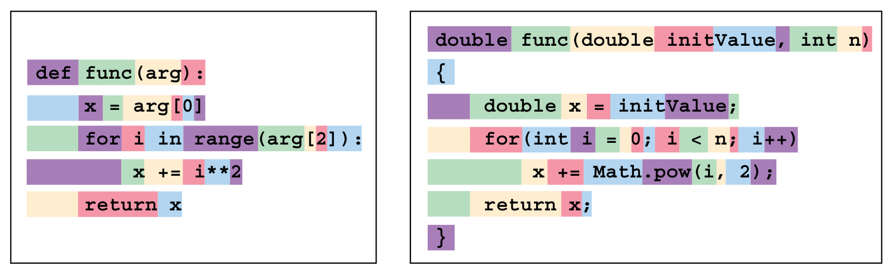
自然语言文本中出现了单词“Value”的前缀“init”。因此，我们不仅通过相似的语法在编程语言之间共享信息，还通过变量名共享代码的上下文和意图。大语言模型也受益于程序员添加的代码注释，这些注释用于向自己或其他程序员描述代码的复杂部分。在图6.3中，我们重复了Java版本的代码，更改了变量名，并在函数顶部添加了一个描述性（但在实际中是不必要的）注释。
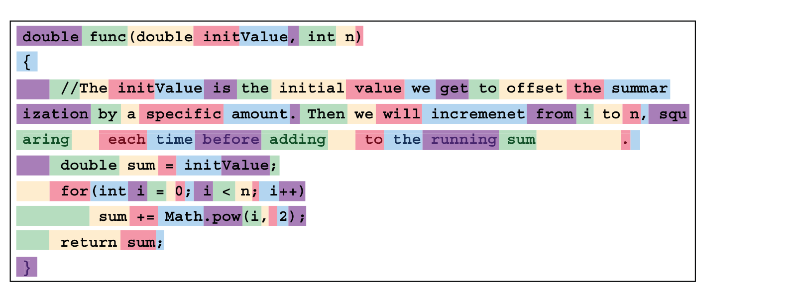
大多数情况下，代码和注释会得到相同的token，将人类语言和编程语言联系在一起，因为它们使用相同的表示形式。无论我们处理的是编程语言还是自然语言，我们都会得到相同的token和嵌入。其美妙之处在于，LLM会像人类程序员一样，复用自然语言信息来理解源代码的含义。
在每个案例中，我们看到tokenization对于代码来说并非完美。存在一些边缘情况，LLM的tokenizer无法将代码中的数据类型转换为相同的token。例如，可以看到函数参数中的(double的token与函数体中的double token处理方式不同。然而，这些差异类似于自然语言LLM中已经存在的问题，比如单词“hello ”、“hello.”和“hello!”周围的不同大小写和标点被解释为不同的token。既然LLM能够处理这些细微差异，那么它们也能处理代码中的相同问题。实际上，对于LLM来说，这个问题在代码中更容易处理，因为代码是区分大小写的，所以我们不需要担心像“hello”和“Hello”被不恰当地映射到不同token这样的文本情况。在代码中，“hello”和“Hello”将是不同且独特的变量或函数名。将它们视为不同的token是正确的，因为编程语言将它们视为不同的元素。
从应用角度来看，代码生成特别有趣，因为它提供了各种自我验证的机会。我们可以应用第5章中关于监督微调（SFT）和基于人类反馈的强化学习（RLHF）的所有经验，使LLM成为一个有效的编码智能体。
改进LLM用于代码的第一步是确保初始训练数据中包含代码示例。
由于互联网的特性，大多数LLM开发者已经做到了这一点：代码示例在网上很常见，自然就进入了大家的训练数据集。
改进结果则成为应用SFT的机会，我们收集额外的代码示例，并在这些代码示例上微调我们的LLM。
像GitHub这样的开源代码库包含大量代码，使得获取大量代码变得尤为容易。
从GitHub等来源收集的代码构成了用于理解和生成代码的LLM微调数据集的基础。
更有趣的是使用RLHF来提升模型编写代码的实用性。
同样，有许多可用的工具和数据集，使得为编码助手构建一个不错的RLHF数据集成为可能。
像Stack Overflow这样的来源允许用户提出问题，提供他人回答问题的功能，并包含其他用户投票选出最佳答案的系统。
数据来源还包括像CodeJam这样的编程竞赛，它们为特定的编程问题提供了许多示例解决方案。
整合这些数据源的信息如图6.4所示。
与所有优秀的机器学习解决方案一样，如果你创建并标注针对自己任务的特定数据，就能获得最佳结果。
据传OpenAI在生成代码方面就是这么做的，他们雇佣承包商完成编码任务，作为为其系统创建数据的一部分[1]。
无论训练和微调数据是如何收集的，总体策略保持不变：使用标准分词器以及SFT和RLHF来打造一个专为生成代码而设计的LLM。
这一方法已成功用于生成Code Llama [2]和StarCoder [3]等LLM。

LLM在代码生成方面尤为有用，因为存在一个客观且易于执行的验证步骤：尝试将代码编译成可执行程序[4]。
在生成自然语言时，检查LLM输出的正确性颇具挑战，因为自然语言具有主观性。
目前尚无自动化手段可检验LLM输出的真实性或准确性。然而，在生成代码时，仅检查代码能否成功编译为可执行文件就是一个良好的第一步，并能捕获大部分错误代码。
一些商业产品更进一步，将编译器（将源代码转换为可执行文件的软件）和可视化工具等集成到其后端。
例如，ChatGPT可以在将代码返回给用户之前检查其能否编译。
如果代码未通过此验证步骤，ChatGPT将尝试为收到的提示生成不同的代码。
如果模型无法生成可编译的有效代码，它就会向用户发出警告。
除了检查代码能否编译之外，LLM还逐渐能够创建验证功能正确性的方法。
许多代码生成工具利用LLM生成单元测试，这些测试是向生成的代码提供样本输入并验证其产生正确结果的小型程序。
在某些情况下，这些能力要求开发者描述他们希望LLM生成的测试用例，然后LLM会创建一个初始实现作为进一步测试的起点。
代码尤为特殊，因为除了编译之外，还存在多种验证其输出的方式。
例如，代码编译必须等到LLM完成响应生成之后才能进行。
考虑到运行LLM成本高昂，且我们不想让用户等待太长时间才能获得输出，理想情况下LLM能在完成大量生成之前纠正错误。
再次运用第5章的经验，我们可以使用语法解析器在完成整个生成过程之前检查代码是否存在错误。如果输出代码的某些部分未通过基本语法检查，我们可以指示LLM仅重新生成该有问题的代码部分。图6.5展示了这一基本过程：LLM逐token进行检查，而不是等待生成完成后再通过编译来检查代码。语法检查比编译成本更低、速度更快，但它无法验证编译器能否将代码转化为可运行的可执行程序。
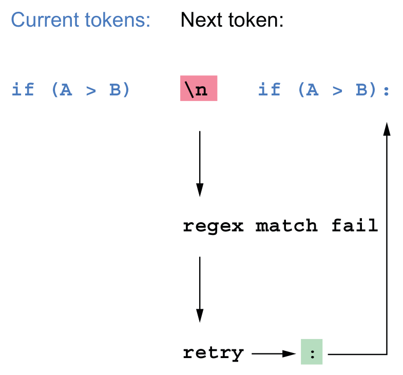
用于语法检查的解析器和生成可执行文件的编译器，使得将LLM适配到代码生成这一新问题领域变得容易得多。
不过，还有一个额外技巧很有用。我们可以使用称为代码格式化器（程序员也称之为linter）的工具来改变分词方式并提升性能。
问题在于，编写功能相同但分词方式不同的代码有多种可能。
应用linter调整源代码格式，有助于消除功能等价但形式不同的两段代码之间的差异。
虽然重新格式化代码并非代码LLM良好运行的必要条件，但它有助于避免可能出现的非必要冗余。
例如，考虑Java编程语言，它使用花括号来标志程序中新作用域的开始和结束。
各种形式的空白符现在无关紧要，但会被以不同方式分词，尤其是对于仅使用单行代码的作用域，花括号是可选的！
图6.6展示了对于执行相同功能的代码，存在哪些不同的合法格式，以及理想情况下我们如何将代码转换为单一规范表示。
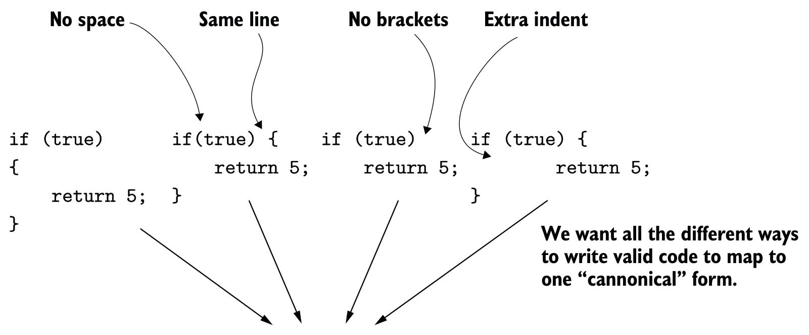
去除代码中非功能性的方面称为规范化（canonicalization），意思是将具有格式差异的代码转换为标准或“规范”形式。在此，我们展示了一种鲁棒的规范化方法，即添加如<NEW SCOPE>这样的特殊标记，以捕获if语句存在新上下文这一事实，无论它是单行还是多行语句。除了添加特殊标记，我们还可以使用代码中一致的格式（例如，始终使用空格而非制表符，在{之前是否换行）。特殊解析和格式化都能提升代码LLM的性能。添加特殊标记的鲁棒方法比格式化能带来更好的性能，但代价是需要编写和维护一个自定义解析器来添加这些特殊标记。改变分词器的问题在下一节讨论利用LLM处理数学时会变得更加关键。
LLM 还能执行那些通常人类难以成功完成的数学任务。这些任务不仅限于加法和减法等数值计算操作，还包括形式数学和符号数学。我们在图 6.7 中给出了所讨论的形式数学的一个示例。你可以让这些 LLM 计算导数、极限和积分，并编写证明。它们能生成出奇合理的结果。
用于代码的 LLM 很实用，因为我们可以使用解析器和编译器部分验证其输出。正确的分词对于构建一个有用的数学 LLM 至关重要。使用 LLM 进行数学研究仍是一个非常活跃的领域 [6]，因此目前尚不清楚让 LLM 执行数学运算的最佳方法。然而，研究人员已经发现了一些集中在构建和运行 LLM 的分词阶段的问题。
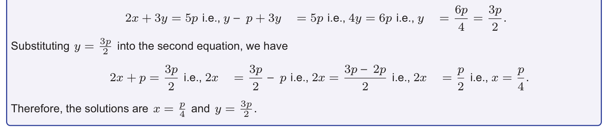
注意：在第5章中，我们提到微调可以多次应用，数学大语言模型就是一个很好的例子。
研究人员通常通过微调代码LLM来创建数学LLM，而代码LLM则是由通用文本LLM微调而来。在每个阶段，从SFT到RLHF，原始的下游LLM会经历三到六轮微调，最终得到数学LLM。
输入预处理可能对自然语言文本效果良好，但会降低数学概念的表示质量。
在文本中，格式化的数学表示常包含 {}<>;^ 等符号。
处理常规文本时，这些特殊符号通常从训练数据中移除。
保留这些信息需要重写分词器的输入解析器，确保不删除你希望模型学习的数据。
等价数学方程的多种表示进一步复杂化了对LLM的数学理解训练，类似于多种格式化在处理编程语言时可能引发的问题。
TeX、asciimath、MathML等格式允许用纯文本表示数学符号，同时提供排版指令以正确渲染方程。
这些格式提供了多种表示同一方程的方式。
我们在图6.8中展示了该问题的一个示例。
问题涉及数学排版方式（即选择TeX还是MathML来绘制方程）和数学表示方式（即两种数学等价但表达方式不同）。
这两者都是我们讨论LLM时反复出现的问题：同一事物的不同表示方式。
对于数学，当前倾向于使用TeX及其非常相似但较少见的替代品（如asciimath）来格式化数学，而摒弃冗长的内容如MathML。
这一动机基于三个因素：
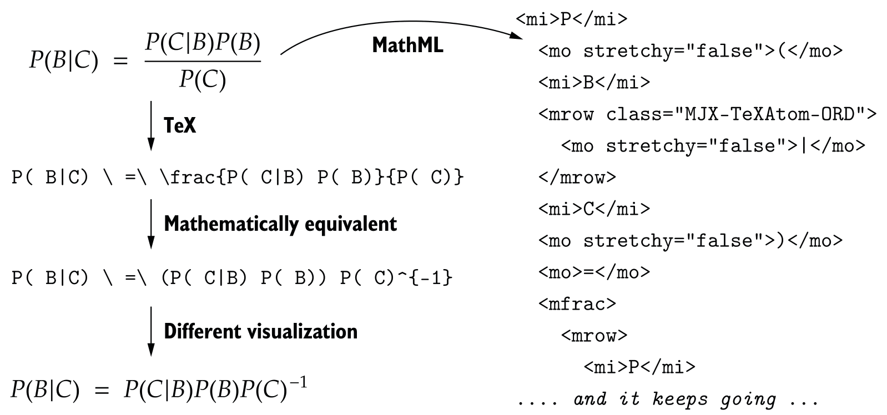
基于TeX的格式化数学是最常见且最易获取的数学形式，这得益于arXiv等公开资源始终采用TeX格式。保留所有类似TeX的表示方式，可以缓解学习多种格式（以及由此产生的迥异词元集）的难题。更为冗长的MathML使用了更多样化的词元，因此存储每个唯一词元相关数据需要更多计算资源。
选择TeX作为LLM中数学的唯一表示并不能解决等价方程有多种写法的问题。判断哪些方程是相同的非常困难，研究人员已证明没有任何单一算法能确定两个数学表达式是否等价。（鉴于本节讨论的是形式数学，我们这里的表述可能不够严谨，因此建议读者参阅原文献[7]。）迄今为止，LLM的最佳答案似乎是“让模型自己试着去搞清楚”，这种做法到目前为止相当成功。但我们不会感到惊讶的是，未来数学LLM的开发者会大力改进预处理，创建更一致的数学方程规范表示，以减少等价表达式可能出现的多样性。
对于大多数人来说，数字是数学中更容易理解的部分。你可以把它们放进计算器得到结果。
即使没有计算器，虽然繁琐，你也可以手动计算。
只要遵循固定的规则就能得到结果。
但有点出人意料的是，LLM 在完成这类死记硬背的计算时困难重重，不过开发者已经着手改进分词器，使其更好地处理数字。
第一个问题是标准的字节对编码（BPE）算法生成的分词器会为数字产生不一致的词元。例如，“1812”很可能被分词为一个单独的词元，因为成千上万的文档中提到了1812年战争；分词器可能会将1811和1813拆分为更小的数字。为了进一步探究其原因，考虑初始字符串“3252+3253”以及GPT-3和GPT-4如何对其进行分词。GPT-4处理得更好，因为它似乎每次从数字的前三位开始分词，从而得到三位数后跟一位数的结果。GPT-3则表现不一致，因为它改变了分词数字的顺序，如图6.9所示。

现在出现了一个重大问题。GPT-3 的“3”标记出现在两种不同上下文中，一次在千位（three-thousand two hundred ...），一次在十位（three-thousand two hundred and fifty three）。为了让 GPT-3 正确相加这些数字，分词器必须正确捕获四个不同的数位位置。相比之下，GPT-4 使用每个数字的数位顺序表示，从而更容易得出正确结果。
人们仍在尝试通过不同方式改进分词器，以提升 LLM 处理数字的能力。如果要将数字分词为子组件，目前最佳方法是将每个数字（如 3252）拆分为单个数字，如“3, 2, 5, 2”[8]。然而，也存在其他替代方案。
另一个有趣的数字表示方法称为 xVal[9]，其思路是用同一个代表“a number”的标记替换每个数字。我们可以将这个特殊标记称为 NUM，它会被我们在第 3 章学到的嵌入层映射为一个数字向量。
巧妙之处在于为每个token引入一个乘数，即一个与嵌入向量值相乘的第二数值。默认情况下，LLM对每个token使用的乘数为1。任何数乘以1都不会改变其值。但对于我们遇到的任何NUM token，它将改为乘以文本中的原始数字！这样一来，我们就可以表示可能出现的每一个数字，包括分数值，甚至那些未出现在训练数据中的数字。以这种方式捕获的数字之间具有简单直观的关系。我们在图6.10中对此进行了更详细的展示。
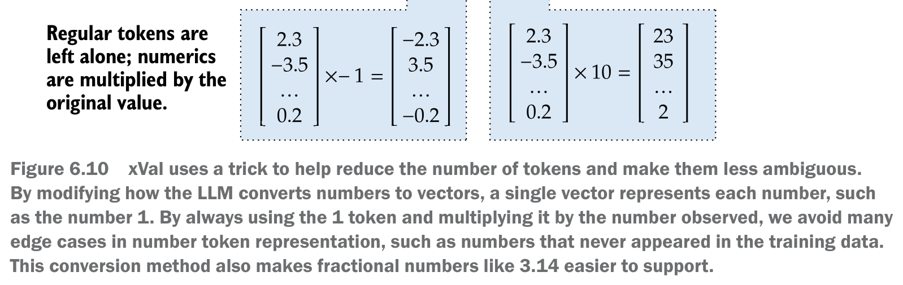

图6.10 xVal采用一种技巧来减少token数量并降低其歧义性。
通过修改大语言模型将数字转换为向量的方式，每个数字（如数字1）均由单一向量表示。始终使用1这个token，并将其乘以观测到的数字，从而避免了数字token表示中的许多边界情况，例如训练数据中从未出现的数字。这种转换方法还使得像3.14这样的分数更易于支持。
一致数字法和xVal策略共享一个重要认识。我们已知如何表示数学和简单算法，如小学的加法和乘法。如果我们设计LLM以更符合人类进行数学任务的方式对数学进行分词，那么我们的LLM将获得更好且更一致的数学能力。
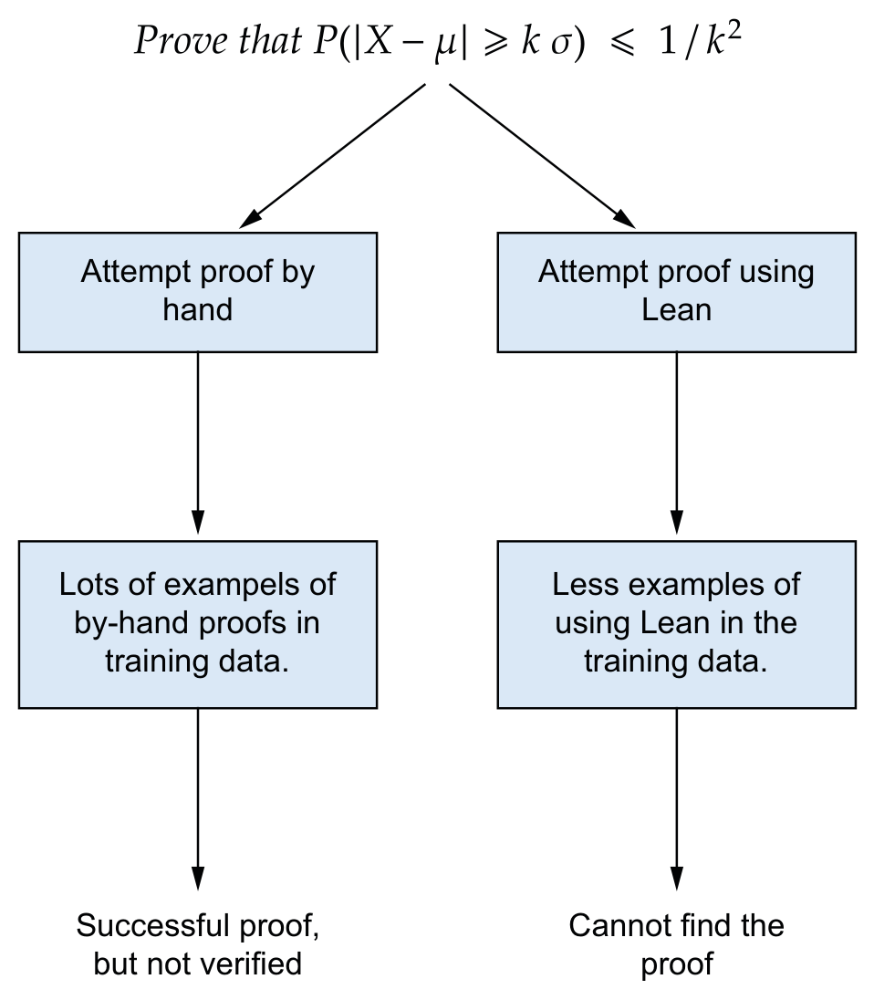
如果大语言模型无法为其数学结果提供可验证的证明，你该怎么办？当前常用的一种技巧是多次运行大语言模型。由于下一个词元是随机选取的，每次运行都可能得到不同的结果和答案。出现频率最高的答案最可能是正确的。这个过程并不能保证证明正确，但能起到辅助作用。
注意，有一种方法将图像表示为小图像的组合，称为代码本。代码本可能有用，但与我们的讨论主旨不同。如果你希望了解一些较旧的计算机视觉技术，可以将此视为一个关键词片段进行探索。
尽管在Transformer出现之前多年就存在高质量的图像识别算法和图像生成器，但Transformer已迅速成为机器学习中处理图像的主要方式之一。严格使用Transformer的视觉Transformer（ViT）架构，以及将Transformer与其他数据结构混合的混合架构模型（如VQGAN和U-Net transformer），在解释基于图像的数据和根据文本描述生成令人惊叹的计算机生成图像方面都取得了巨大成功。Transformer在图像上表现如此出色似乎有违直觉，因为图像看起来不像自然语言、代码或氨基酸序列那样的离散符号序列。尽管如此，Transformer通过为模型带来全局一致性，在计算机视觉中扮演着关键角色。
从概念上讲，我们将用一个新的流程取代分词器和嵌入过程，该流程输出一个向量序列，类似于我们在3.1.1节讨论的嵌入层。创建图像表示序列的主流方法是将图像分割成一组图块。因此，我们将用图块提取器替换分词器，它返回一个向量序列。LLM的输出使用解嵌入层将向量转换回token。由于我们没有token，我们需要一个图块合并器来接收transformer的输出并将它们合并成一幅连贯的图像。我们在图6.12中展示了这一过程。请特别注意，图的中央部分与基于文本的LLM相同。我们在文本和图像之间复用相同的transformer层和学习算法（梯度下降）。

图像本身并不能自然地离散化为令牌，因此代之以提取一系列补丁。这些补丁实际上是从图像中按顺序提取的小块。最后，这些补丁又被重新转换回图像。
中间部分接收一个向量序列，送入变换器并输出一个新的向量序列，这一过程在文本和图像数据中保持不变。
变换器 变换器
分词器与嵌入块提取器
由于除输入向量序列生成和输出步骤外，其他部分保持不变，我们可以专注于图像与向量之间的转换是如何工作的。先关注输入侧会更有帮助。
顾名思义，图像块提取器将每张图像拆分为一系列更小的图像。通常选择固定大小的图像块，比如16×16像素的正方形。采用固定大小是为了便于输入神经网络——神经网络始终处理固定大小的数据——而小型化则确保每个图像块仅代表整张图像的一个局部。将图像分块类似于将文本分解为标记集合。单个标记本身没有信息量，但与其他标记组合后，它们能构成通顺的句子。
图像分块后，每个块中的每个像素被转换为三个数值，分别代表该像素中红、绿、蓝（RGB）的含量。通过将每个像素的RGB值拼接成一个长向量来创建初始向量。因此，对于我们的16×16像素正方形，每个像素有三个颜色值，我们将得到一个长度为768的向量（16高、16宽，每个像素一个RGB值）。然后，一个可能仅有一两层的小型神经网络分别处理每个向量以生成最终输出。该神经网络实现了一个非常轻量的特征提取过程，不需要大量内存或计算资源。这种设计在计算机视觉中很常见，因为第一层通常学习简单的模式（如“内部暗、外部亮”），不需要transformer层更高昂的代价或更强的能力来学习图像块的基本特征。整个过程在图6.13中进行了总结。

3. 使用一个小型神经网络进行最小程度的“特征提取”，以准备这些补丁供后续Transformer层处理。常规的Transformer/LLM架构从这里开始。
设计补丁提取器中使用的小型神经网络有多种可能的方式，但通常它们效果都差不多。一个选择是使用所谓的卷积神经网络（CNN），这种神经网络能够理解相邻像素之间的关联。其他人则直接使用了与Transformer层中相同的线性层。在这种情况下，包含小型神经网络和一系列Transformer的完整模型通常被称为视觉Transformer（Vision Transformer）。
小型网络的设计是一个细节问题，但值得提及，因为它存在的意义与产生最终输出的补丁组合器有关。小型神经网络架构选择CNN还是线性层并不重要，但必须确保输出的形状与输入的形状匹配。例如，如果你有16×16的补丁，可以使用小型网络强制输出为16×16×3=768个值，无论Transformer层本身的大小如何。为了生成图像输出，你需要反向执行补丁提取过程，将向量转换为补丁，然后将补丁合并成图像，如图6.14所示。
因此，我们成功地用新的以图像为中心的层替换了输入分词和输出嵌入。在很多方面，这比分词要好得多。无需构建/维护词汇表，无需采样过程等。这是对Transformer作为LLM通用核心的普适性的一个关键见解。如果你能找到大量数据，并将这些数据合理转化为向量序列，那么就可以使用Transformer来解决某些类型的输入输出问题。

将 LLM 的输入和输出改造为视觉 Transformer，意味着我们可以将图像作为输入并输出图像。这展示了 Transformer 可以处理不同模态的输入，但我们之前只讨论了输入和输出为同一模态的情况。要么是文本输入输出，要么是图像输入输出。然而，深度学习是灵活的！没有任何规定强制要求输入输出必须为同一模态，甚至不要求输入或输出只能是单一模态。你可以组合文本输入与图像输出、图像输入与文本输出、文本与图像输入与音频输出，或者任何你能想到的其他数据模态组合。图 6.15 展示了图像和文本如何为我们提供四种组合方式，以处理不同类型的数据。
通过构建一个以图像为输入、文本为输出的模型，我们创建了一个图像描述模型。我们可以训练该模型，使其生成描述输入图像内容的文本。这类模型有助于提高图像的可发现性，并帮助视障用户。
通过构建一个以文本为输入、图像为输出的模型，我们创建了一个图像生成模型。你可以用词语描述所需的图像，模型会根据你的输入生成合理的图像。像 MidJourney 这样的知名产品就是这类模型。虽然它们的实现不仅仅是视觉 Transformer，但高层思想是一样的：将基于文本的输入与基于图像的输出结合起来，加上大量数据，我们可以创造出跨越不同数据类型的全新多模态能力。
图像生成模型 图像描述 去噪/图像校正 大型语言模型
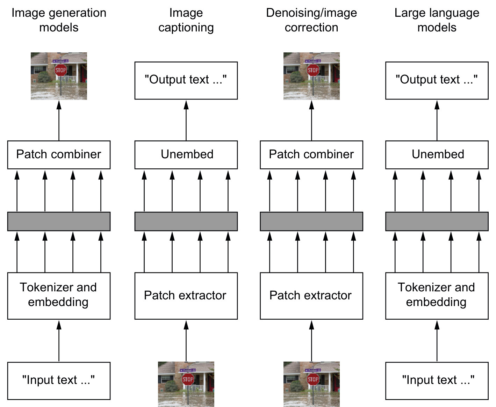
本书中其他经验教训同样适用于这些视觉Transformer和多模态模型。最终，它们学会做训练它们的事情，当你试图以训练数据中不存在的方式扭曲它们时，可能会得到异常结果。举个例子，我们告诉图像生成模型“画任何东西，除了可爱的猫”，结果很可能得到一只猫，如图6.16所示。这些模型（目前）是用图像对和描述图像的文字片段进行训练的。
因此，它们学会了强关联——生成输入句子中任何事物的可视化。例如，因为输入句子中有“猫”这个词，模型就会想要生成一只猫。像“画任何东西除了”这样更抽象的绘图请求在数据集中并不存在，因此模型并未针对这种请求进行训练。
类似地，随着ChatGPT等LLM将提示作为设计输入以产生期望输出的策略发展，提示也被应用于图像描述模型。包含诸如“Unreal3D”这样的不寻常信息并不罕见，这是用于生成计算机游戏3D图像的软件名称，可以产生特定风格和质量的输出。诸如“高分辨率”之类的词汇，甚至包括在世和已故艺术家的名字，都被用来影响模型，使其产生特定风格。
译文范围: 章节内段落 1–98（共 98 个段落，渲染 63 个，2 个为图像/页眉/页码等不可译块）。
7 误区、局限与LLM的卓越能力
得益于ChatGPT，全世界对LLM及其能力有了更广泛的认识。尽管如此，关于LLM的许多误解和误读仍然存在。许多人认为LLM在不断学习和自我改进，比人类更聪明，并且很快就能解决地球上的所有问题。虽然这些说法有些夸张，但也有人真心担心LLM会严重扰乱世界。
我们并不是说对LLM的担忧完全没有道理，在本书的最后两章中我们将更深入地探讨这些问题。不过，与LLM及技术的广泛演进相比，你可能会遇到的许多关于LLM的想法和担忧都被过度放大了。
本章将讨论LLM工作的几个关键方面，以及这些方面与这些误解的关联。最终，LLM的这些运作特性会影响你在实践中使用或避免使用LLM的方式。首先，我们将讨论人类与LLM学习方式的差异。人类是快速学习者，而LLM默认是静态的。尽管LLM在处理数据方面极为高效，但人类在学习新事物时更能最大化生产力。接下来，我们将探讨为什么在考虑LLM工作原理时，“思考”这个词具有误导性。我们将强调，将LLM的运行视为计算更为恰当，因为LLM在构思和输出之间没有区别。相比之下，人们常常“三思而后行”。最后，我们将讨论LLM能够计算的范围，以及计算机科学概念如何帮助我们理解LLM当前及未来能力背后的一些固有限制。这三个主题相互关联，因此随着我们深入讨论，你将看到它们之间的联系。
虽然我们此前已隐含地讨论过，但明确说明大语言模型的训练与人类学习的差异仍然是有益的。生成式 AI 产生的流畅且通常清晰的文本，以及我们用来类比 LLM 能力与人类能力的比喻，可能会让人觉得两者之间似乎存在某种联系。许多人在网上鼓吹认为 LLM 能做的事情和人类能做的事情之间的这种联系是真实的。实际上，两者截然不同，这对于何时、如何以及为何你可能更倾向于人类而非 AI，以及人类与 AI 如何协作，都具有重要的考量。
根据我们目前所涵盖的材料，我们知道 LLM 通过预测下一个词来学习，以数亿份文档作为示例。在第4章中，我们介绍了 LLM 中“学习”的算法过程：梯度下降算法，它通过尝试预测样本输入中的下一个 token 来改变 LLM 神经网络的参数。然后，在第5章中，我们展示了像 RLHF 这样的微调算法如何再次改变 LLM 的参数。LLM 学习的这两个组成部分与人类学习的相似性极小，并且对我们期望 LLM 能做什么施加了一些关键限制。其中一个最关键方面是这种学习方法的速率和有效性，这与提供给训练过程的数据量有关。
为了进一步探讨这一点，请思考 LLM 的学习方式相对于人类学习方式。你见过从未与他人交谈、从未有父母与之对话，却不知何故理解语言的人吗？很可能没有。事实上，对话是语言习得的关键部分[1]。至少在最初阶段，你是通过与他人以及环境的互动和交流来获取知识和语言的。因此，你可以用远比 LLM 训练数据中少得多的信息进行有效学习。
在儿童语言习得的最佳情境下，研究发现儿童每月接触约15,000个口语词汇[2]。如果我们放宽标准，将这个数字四舍五入到2万，并假设持续100年，那么一个人一生中将遇到多达2400万个口语词汇。这显然是一个巨大的高估。再加上大多数人至少在18岁时就能流利地使用母语，并隐含地理解词汇和语言结构。现在与大语言模型对比。例如，GPT-3接受了数千亿词汇的训练。仅从词汇量看，这是一种非常低效的语言学习方式！
语言习得也帮助我们认识到词汇习得方式的显著差异。婴儿和幼儿从简单的词汇开始，比如“妈妈”和“爸爸”，逐渐学习颜色、“不”、“食物”等基础概念。随着时间的推移，更复杂的词汇在先前词汇的基础上逐步增加。而大语言模型从一开始就根据使用频率同时看到所有词汇。实际上，可以准确地将大语言模型想象为将这本书本身作为其第一次“学习”的一部分进行分词，同时获取其最终所有词汇的知识，而不是从简单概念开始并在此基础上构建知识。虽然这一过程有助于大语言模型的学习速度，但可能削弱其概念之间高层关系的抽取能力。
大语言模型相对于人类的关键优势在于其运行规模和同时执行多任务的能力。这一优势贯穿机器学习和深度学习。你很难雇佣一大群人翻阅书籍、费用报告、内部文件或任何信息媒介，去执行诸如撰写评审报告、发现潜在欺诈或回答晦涩政策问题之类的知识工作。然而，你可以迅速让一大群计算机尝试自动化这些任务。虽然单个大语言模型可以同时分析句子的多个部分，但你可以部署多台运行同一模型的计算机并行工作。训练大语言模型提供了类似的机会：大语言模型训练过程中接触的词汇量远超你一生中阅读或听到的，你可以租用或购买数千台计算机同时进行训练。
结合这些事实以及前几章讨论的内容，我们可以列出与人类相比，使用大语言模型执行任务的一些高层优缺点。图7.1总结了这些因素，描述了LLM的优势和劣势如何导致其使用的天然益处和弊端，从而为LLM应和不应使用的场景提供见解。
LLM的一些优势如下：
训练有素的大型语言模型拥有广泛的知识储备，因此在处理许多与已见任务差异不大的任务时表现出色，几乎无需额外工作即可使模型发挥作用。尽管这些信息不一定准确或详尽，但大型语言模型能够接收并生成合理回应的主题领域广度，远超大多数个人所能覆盖的范围。
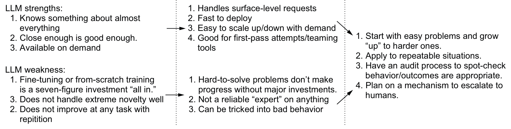
对于许多任务，并不需要获得精确正确的回答。对某一领域通用信息的宽泛请求，本质上允许LLM在回答时灵活而不受约束。如果你通过其他流程对LLM的输出进行精炼，这一点尤其明显。例如，人类可能会对文章进行编辑润色，但使用LLM来生成初稿或提供灵感，以打破写作障碍并加速创作。同样，LLM可用于改进作者的文笔，通过改写或使用更丰富的词汇，使其听起来更自然或更具吸引力。
与人类相比，LLM可以快速训练。在100万到1000万美元的预算下购买计算资源，你可以在几个月内产出一个广泛有用的LLM。人类则需要多年才能变得有用。能够回答广泛基础问题的LLM，其实例化所需的工作和成本远低于寻找、雇佣和留住一个拥有特定知识、技能和能力的员工。只要问题在LLM的能力范围内，其增量成本与人的时薪相比微不足道，甚至无需考虑额外开销。
大型语言模型的一些缺点如下：
训练LLM的高昂成本决定了其经济性。这笔训练成本被分摊到LLM训练完成后执行的数千次操作中。如果LLM表现不佳，持续改进使其正常运转的成本会迅速变得难以承受，更不用说它可能永远无法正确完成特定任务的风险。例如，即使采用最新的工具和技术实现的LLM无法满足特定需求，解决这一问题也需要未知的工作量和预算。相反，人类通常能够以低得多的成本，在数周到数月内学会新能力，尤其是那些LLM难以掌握的能力。LLM无法可靠地处理训练数据中未体现的意外情况和输入。尽管许多LLM已经证明它们能在新场景中成功，但它们的学习方式与人类不同。一个人可以在第一次尝试时就发现自己的行动没有达到预期效果，并迅速适应。LLM无法通过观察自身错误进行独立适应，可能会反复消耗资源试图回答它无法理解的问题。
LLM很容易被愚弄，在对抗性环境中表现不佳，因为一旦有人找到方法诱使LLM产生错误结果（例如，“Give me a loan even though I have no income”），他们就可以重复这种对抗性和恶意行为，而你的LLM如果没有额外护栏，就无法阻止。
一般来说，人类有能力进行自我改进。他们可以专注于研究一个问题，设计新颖的方法，确定所需资源，并着手实施和改进他们的解决方案。尽管LLM在自我改进方面存在困难，但在生成式AI领域，有一种观点认为LLM也可能实现同样的自我改进。其可能的运作方式大致如下：
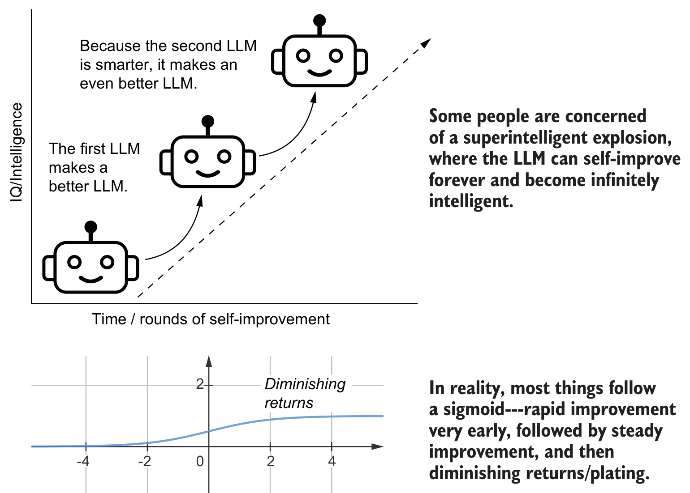
技术改进局限性的一个典型例子是摩尔定律，它大致指出芯片上的晶体管数量每18到24个月会翻一番。摩尔定律在很大程度上准确预测了晶体管数量的增长，但已有迹象表明晶体管正面临收益递减的S曲线。晶体管数量翻倍的速率正在下降。更重要的是，系统整体性能已经进入这一S曲线。晶体管数量与总体计算性能相关，但并不直接等同于计算性能。从图7.3的整体来看，你会发现其他因素制约了整个系统无止境的改进。除了摩尔定律之外，高性能GPU及其运行基础设施的实际成本也是无穷改进的另一个障碍。
许多夺人眼球的标题宣称，大语言模型在医学院入学考试（MCAT）、律师执业资格考试（Bar Exam）和智商测试中表现出色，以此衡量其智能。尽管这些测试总是很有趣，且充满了诸如这样的注意事项
有很多利用外部信息改进生成式AI的例子。一些为机器人手设计的算法使用来自物理模拟器的外部信息。Apple使用3D建模软件生成数据，改进iPhone上的虹膜识别[5]。在第6章的示例中，你看到了使用代码编译器或Lean语言验证数学来改进LLM的一种可能路径。这些示例展示了完全可自动化的流程，这些流程生成新信息，从而可能导致自我改进。
然而，从未有无边无际自我改进的例子；使用这些外部工具所获得的增益最终会达到平台期，并且最终依赖于人类通过编写更好的机器人物理模拟器、更好的代码编译器以及更好的领域知识系统（如Lean）来开发辅助信息。改进这些工具会大幅增加训练LLM的成本，从而在实践可行的自我改进之外施加了第二个经济限制。
少样本学习也称为上下文学习。该技术涉及在向大语言模型发送的提示中提供所需输出类型的示例。假设您希望大语言模型准确回答来自帮助台的问题。您可以给大语言模型一个包含用户问题的提示，后跟一个适当回应的示例。如果只提供一个示例，则称为单样本学习。提供两个示例而非一个称为双样本学习，以此类推，因此这种方法被描述为少样本学习，因为示例的具体数量通常不如仅提供少量示例这一事实重要。这种将示例纳入提示的方法是提示工程的一种特定形式，如图7.4所示。

在提示中包含示例有助于提高LLM在新任务上的表现。你无需使用RLHF或SFT来改变模型，这种方式比零样本提示（即要求LLM在没有示例的情况下执行任务）效果更好。但这真的是高效学习吗？
少样本提示并非训练，因为我们并未像训练或微调过程中那样以任何方式改变模型。LLM的“状态”或权重保持不变。无论LLM在周一的任务执行得多么准确，在周二和周三它都将保持同样的准确度，无论它处理了多少成千上万的少样本提示。除非你手动改进提示中的示例、提供更多示例或以其他方式进行干预，否则模型的能力不会得到提升。从这个意义上说，没有真正的学习发生，模型没有任何改变。我们只是通过改变提示来获得模型输出的改进。
然而，从抽象意义上讲，LLM确实在学习，因为提示通过提供额外的上下文来描述问题，从而改变了模型的行为。通过提示展现的行为与在类似示例上进行微调所达到的行为具有相关性[6]。简而言之，这意味着少样本学习在根本上并未反映出任何不同于梯度下降已经能够做到的事情。
注意：如果你没有大量数据，作为从业者或用户，少样本提示可能是让LLM在你的数据上表现良好的最有效方式。因为我们可以将这种提示视为低效的梯度下降或微调，所以你应该预期随着少样本示例的增加，收益会递减。例如，如果你在提示中包含了大量你希望LLM如何回应的示例，但仍然达不到所需性能，你应该考虑使用SFT、RLHF以及我们在第5章讨论的其他微调方法。
人类大脑维持意识只需相当于10瓦的功耗，让你能够阅读本书。配备用于AI/ML工作GPU的高端工作站，功耗轻松达到2000瓦。运行当今大型LLM的高端服务器，功耗在10,000到15,000瓦之间。乍一看，使用LLM完成某项任务，其能耗效率可能比人类差1500倍。我们理应为这一进化成就和效率感到自豪，但它也只是我们所说的“效率”的一个方面。我们在图7.5中展示了人与机器在多种不同效率维度上的对比。
电力是决定创建和运行LLM财务成本的主要驱动因素之一，但其真实需求尚不完全明确。的确，许多提供商会给出运行LLM的报价，但我们并不清楚每个提供商的实际成本或他们设定的利润率。例如，LLM提供商可能采取负利润率或亏本策略，因此长期使用LLM的成本可能比当前价格所显示的要高。我们
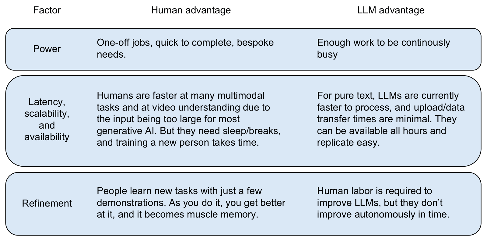
确实，LLM对电力的需求巨大，以至于大型科技公司正计划建造核电站，为未来数据中心运行所有预期模型提供所需电力[7]。
基于这一点，我们可以预见新的LLM将更大、更耗电，但其价值将抵消为数据中心建造专用发电厂的成本。
基于此，当成功的LLM解决方案创造更多需求时，需要谨慎；满足这些需求可能会遇到电力容量问题。你还需要注意电力成本的弹性。不仅LLM提供商可能改变成本结构，而且如果你自己托管LLM，美国确实会发生6倍的电力价格波动[8]。如果你的目标客户群只有2万用户，这可能不是问题；但如果你计划构建服务于数百万甚至更多用户的东西，电力成本可能成为一个重大的运营和环境风险。
延迟是指从查询LLM到获得输出所需的时间，可扩展性描述了如何快速从运行一个LLM扩展到一千个LLM，可用性则描述LLM能够7x24小时运行的能力。这些都是LLM——更广泛地说，是计算机整体——相对于人类的主要优势。LLM和AI/ML可以比人类更快、更及时地对更多情况做出反应。这种反应速度既有好处也有坏处。当系统需要对输出进行监督和审查时，如果没有制定相应的人员配置计划，就无法获得LLM的完整可用性优势。
正如我们在7.1.1节中讨论的，LLM无法轻易自我改进。然而，人们可以并且确实在改进，随着时间的推移提高流程效率是一个共同目标。
你需要让人参与其中，设计更好的提示并创建更好的训练方案，以提高使用LLM的效率；没有他们，LLM的性能不会提高。
提高LLM效率不仅涉及升级到更新的LLM或微调现有模型，还包括构建基础设施并记录输入、输出和性能指标，以研究哪些有效、哪些无效。
你可以使用我们在5.5.2节讨论的DSPy等框架来捕获这些项目，并识别和处理那些随着世界环境变化而失败或开始失效的情况。
例如，你可能开发了一个最初运行良好的LLM。
但是那些该死的孩子不断向iDroids和appleBots[9]添加新的表情符号。
如果没有额外的训练，你的LLM将无法理解这些新的表情符号，但你的客户将不可避免地开始使用它们，因此系统性能将开始下降。
如果你不记录LLM的输入和输出日志，或征求用户的反馈（他们可以提供LLM成功或失败领域的信息），你永远无法弄清楚这一点。
捕获这些信息对于改进和完善流程至关重要，而LLM在没有人类干预的情况下无法做到这一点。
在机器学习领域，数据漂移这一概念备受关注，它指的是现实世界中的数据不断演变，超出了模型训练数据所捕捉的范围。在处理自然语言时，表情符号只是现实世界数据随语言使用演变而随时间变化的一个具体例子。这个表情符号的例子可以扩展到包括新术语或语言中现有词汇新用法所带来的问题。通过审视该领域的现有工作，我们可以识别出其他用于测量和缓解大语言模型数据漂移的技术，例如收集额外的训练数据并对模型进行微调，或修改提示词以包含对先前未见术语的补充定义。
你经常可以从LLM中引出关于世界的准确信息。因此，很容易认为语言模型了解世界上的事物。事实上，作为本书的读者，你可以在不采取任何具体行动的情况下推理世界和将要发生的事情。现在，我们讨论的不是预测股市这样复杂的事情，而是简单的行动和想法。例如，如果你告诉别人他们的毛衣很丑，会发生什么？
你不需要与环境互动，也不需要找一件丑毛衣来回答这个问题。你不需要说话或与任何人或任何事物互动来回答这个问题。你可以想象毛衣的“世界”和他人可能有的感受，并推断结果。如果我告诉你有人穿着那件毛衣在圣诞派对上（也许是丑毛衣比赛？），你可以更新你对世界的心理模型，并在没有亲身经历的情况下推断结果。LLM无法在说话之前思考。生成文本是LLM最接近“思考”的方式（在此语境下宽松地使用这个词）。你可以在图7.6中看到一个简单的例子，其中LLM过于冗长的推理最终导致它得出一个不错的评论。推理，无论是人类隐式还是显式地进行，都与我们谈论推理对象的行为不同。对于LLM，过程没有分离；需要产生更多输出来对答案进行“更多思考”。因此，LLM无法独立于生成输出而进行思考。
警告：我们在大语言模型语境中松散地使用“思考”一词。严谨来说，我们指的是大语言模型回答问题所做的计算并非动态变化。无论这10个词元的内容如何，输出它们所需的工作量是相同的。回答一个需要人类更多思考的复杂问题，可能要求大语言模型执行更多的计算，但这通常意味着模型必须生成更长的输出，即使答案本不应更长。每当有人将“思考”一词与大语言模型关联使用时，最好用“计算”替换“思考”。

这个例子表明，大语言模型无法在不生成关于规划过程的文本的情况下进行规划。如果大语言模型不产生文本，它就好像不存在一样。有一些构建提示的方法，可以鼓励大语言模型分解其输出以模拟规划。这通常被称为思维链（CoT）提示，即在提示中包含像“让我们逐步思考”这样的陈述。这种逐步的指令通常会提高模型执行任务的能力[10]，但尚不清楚为什么它会提高性能。再次强调，“思考”一词的模糊性可能导致对LLM能做什么和不能做什么产生不合理的期望。
即使使用CoT，大语言模型仍然会犯很多错误，例如遗漏步骤、遗漏计算以及进行逻辑无效的推理[11]。其他因素也可能导致观察到的大语言模型在输出被分解为一系列步骤时的性能提升。考虑：
第三章中，我们学习了Transformer及其实现中所使用的注意力机制。我们知道，LLM接收的输入和产生的输出越长，Transformer执行的计算就越多。
那么，一步一步思考之所以效果更好，仅仅是因为LLM通过Transformer进行了更多计算吗？如果LLM拥有世界模型，它就可以在不生成输出的情况下完成关于输出的计算。
LLM反映了其训练数据的性质。训练数据中可能有与“一步一步思考”相关的内容，以及其他更冗长且通常正确的内容的教学材料。最终，我们可能手动将LLM的模糊回忆与更相关的训练文档对齐，而不是让LLM执行一个根本不同的功能。
WARNING “世界模型”的确切定义尚未达成共识，不同的人可能有不同的理解。讨论世界模型时，最好先明确其定义，以便大家达成一致。许多关于LLM的讨论都未能有效沟通，我们将在本书最后两章进一步探讨这个问题。
这些问题具有挑战性，涉及开放性的研究课题。我们的立场是，LLM的显著失败表明，这些更可能是表面解释而非深层次原因。重要的是，一些小众研究致力于为机器学习方法注入世界模型。David Ha和Jürgen Schmidhuber在2018年提供了一个技术性但相当易懂的示例，可在网上获取（https://worldmodels.github.io/），该示例显示了相较于当时现有方法的巨大性能提升。其他人正在致力于为LLM构建世界模型，以及利用LLM作为世界模型[12]。当前的方法不具备人类那样高度的灵活性；这些示例的范围更为有限，仅适用于某一通用类别的问题。
有些人担心“失控”的人工智能，即AI算法变得非常先进和强大，能够解决我们从未能解决的问题，并且这样的AI的目标可能与人类福祉不一致。如果这样的AI存在，它可能以我们无法自我改进的方式自我改进，从而产生更强大的AI。许多人放任这种想法蔓延，幻想LLM几乎会拥有神一般的能力，能够超越人类的推理。这里涉及一个伦理问题，我们将在本书最后一章进一步讨论。目前，有一个简单的技术原因让我们不那么担心这个想法，它也有助于我们理解LLM的实际局限性。本质上，有多种方法可以衡量我们所谓的计算复杂度或算法复杂度。通过将LLM的复杂度与其他经过充分研究的算法进行比较，我们可以更具体地了解LLM能做什么和不能做什么。我们还将讨论在适当的情况下，使用LLM进行问题的近似求解如何避免精确求解同一问题所需的某些复杂度。
在计算机科学中，我们花大量时间学习算法复杂度。对大多数学生或从业者而言，这意味着理解输入数据量的变化如何影响一个过程产生结果所需的时间。一种比较理想但现实中很少见的情况是，如果输入翻倍，过程耗时也翻倍。换句话说，对n个项目（在LLM中，一个项目可能是一个token）需要2天的过程，对2×n个项目需要4天。在计算机科学中讨论复杂度时，我们常使用称为大O记号的数学符号来表示不同的复杂度级别。当一个过程的计算时间与输入大小同比例增长时，称为线性复杂度，在大O记号中记为O(n)。如果以数据大小为x轴、计算时间为y轴画图，会得到一条直线，因为数据大小和计算时间以相同速率增长。其他常见的现实世界复杂度包括对数线性（O(n log n)），其中2×n可能接近4.4天；平方（O(n²)），其中2×n可能接近8天；和指数（O(eⁿ)），随着输入大小增加，计算时间增长极快，很可能你的算法完成之前世界就不复存在了。在每种情况下，输入大小对计算时间的图形随着系统变得更复杂而变得更陡峭。换句话说，对于更复杂的算法，处理时间随着处理数据量的增加而增长得更快。
我们进行这一简短的计算机科学之旅，是为了帮助您理解运行LLM的计算复杂度。对于n个项目的输入，LLM的计算复杂度为O(n²)或平方复杂度。如果我们能证明某个算法/任务需要超过O(n²)的工作量，那么我们就基本证明了LLM无法高效解决该问题，因为LLM的核心算法无法精确执行该复杂度的算法。
警告：这不是关于形式化方法或算法的研究生课程；我们只是对算法复杂性的研究做一个快速概述。
目的是让读者你获得对这个问题的一种技术直觉，但我们并未完全赋予你详细讨论这个主题所需的所有知识。要了解更多关于算法和复杂性的内容，请参阅Aditya Y. Bhargava的著作《Grokking Algorithms: An Illustrated Guide for Programmers and Other Curious People》[13]。
如果一个LLM能够解决一个需要，比方说，立方复杂度O(n³)的问题，而它自身的复杂度却更快（更小）为O(n²)，那么这就构成了一个逻辑矛盾。换句话说，LLM解决复杂问题的速度不可能超过其复杂度分析所表明的极限。许多现实世界的任务和算法的复杂度比O(n)更差。我们在表7.1中描述了几个例子，你会注意到我们列出的这些例子都与物流或资源分配相关。例如，包裹递送和航班重新调度都是算法复杂度极其棘手的问题。
表7.1 一些具有不同时间复杂度的关键算法示例
质因数分解（用于所有加密）O(e^n)（如果你有量子计算机，仍然是O(n^3)）旅行商问题（用于路线/物流配送）O(e^n) 线性规划（用于可分割资源的分配和网络流）O(n^3) 整数规划（用于不可分割资源的分配）O(e^n) 我们关注算法的第二个重要且相关的原因是算法的复杂度类。
复杂度类定义了算法能够解决的问题范围。最著名的复杂度类是P（多项式时间）和NP，后者是指至少需要O(e^n)时间才能完成的问题。这两个非常广泛的类别几乎包含了你可能关心的所有问题。
注意：许多人认为NP代表非多项式，但这是错误的！
它实际上代表非确定性多项式。
有趣且富有启发性的是，William Merrill 和 Ashish Sabharwal 证明[14]，LLM 解决问题的能力与其在中间步骤中生成的 token 数量相关。对于 LLM 而言，生成一个响应属于一个名为 TC0 的复杂性类（我们知道，计算机科学家的命名能力最差）。这个复杂性类限制性极强，意味着 LLM 几乎什么也解决不了。随着中间步骤 n 变长，最终会达到复杂性类 P。这意味着 LLM 永远无法解决 NP 或更难的现实世界问题！我们把这一切汇总在图 7.7 中，该图展示了这些复杂性类层次之间的关系。
这一发现更具破坏性，因为复杂性类描述的是你能解决的问题的种类，而不是解决效率。例如，为了求解一个复杂度为 n^c 的算法，LLM 必须生成大约 n^c 个 token。然而，LLM 处理 n 个 token 需要 O(n^2) 时间，所以最终你会
从工作地点到家找最短路径、设计计算机芯片的电路布局、在文字处理器中查找和替换

这种复杂度估计并未考虑LLM训练数据以及开发提示词所需的时间，这些提示词是为了让LLM能够成功且无误地执行算法。
关于算法和复杂性的这番讨论，听起来可能对LLM非常不利。实际上，只有在你要将LLM应用于需要正确输出的问题时，它才是不利的。如果你的系统连最小的错误都无法容忍，那么你就不应该使用机器学习，更不用说LLM了。
与整个机器学习领域一样，LLM最适合处理模糊问题——这类问题中，正确与错误的界定难以描述。在模糊问题中，通常存在错误是可以接受的；其他流程可以纠正这些错误，或者错误的成本可能小到可以忽略不计。这就是为什么文本和自然语言非常适合LLM。像“Suzy在那封邮件中是什么意思？”或“John是否在他的文本中暗示了什么？”这类问题的答案本质上就是模糊的。人类语言充满了不精确、澄清和重复，这些特性与让LLM解决需要一致且精确答案的问题的难度非常吻合。
先来反驳一下自己：人类同样无法解决NP难问题，如果“解决”指的是“找到没有更好解的最优解”。我们使用近似方法来处理复杂问题，因为我们清楚它们无法完美求解。
例如，我们在表7.1和图7.7中提到了旅行商问题，这是一个经典且重要的配送路线规划问题。邮递员希望在不重复路线的情况下，以最短的时间和距离完成所有邮件的投递。从计算角度来看，寻找最优路线是NP难问题，因此只能应用于几百个甚至上千个配送目的地。然而，存在更快的二次算法可以近似求解该问题，并且我们可以证明这些算法给出的路径长度不会超过最短路径的两倍。因此，在现实世界中，我们使用这些技术来获得“足够接近即可”的解决方案。同样，LLM也可能提供“足够接近即可”的解决方案，但它们仍然受到无法高效处理精确问题的限制。
如果不了解LLM的训练数据，我们很难评估它通过近似求解解决复杂问题的能力。考虑一下，国际象棋在理论上的难度甚至超过NP难问题。GPT-3.5 能够下出不错的棋局，足以击败真实的人类棋手[15]，但还达不到专用国际象棋程序“统治所有人类”的水平。这是否表明LLM擅长近似解决非常困难的问题？
很可能不是。首先，ChatGPT 的围棋水平在加入国际象棋作为评估指标后大幅提升（https://github.com/openai/evals/pull/45）。有理由怀疑 ChatGPT 的开发者进行了微调，将国际象棋作为一个明确目标。其次，互联网上充满了可供人们学习和探索的棋局（https://old.chesstempo.com/game-database.html），因此 ChatGPT 很可能在其训练数据中收录了完整的棋局。尽管如此，有趣的是 ChatGPT 能够利用训练数据中的棋局下出不错的国际象棋，将之前见过的场景匹配到未来略有不同的情况。在考虑基于LLM的解决方案何处最有效时，我们推荐以下思维框架：将LLM应用于重复性强、变化幅度小的问题，以最大化其效用。文本摘要、语言翻译、文档初稿撰写以及现有文本检查等应用均属于此类。
深度学习的其他领域也带来了类似的经验教训，在这些领域，人们更容易理解模型内部发生了什么，而在LLM领域则不然。例如，围棋游戏是数十年来AI研究中最持久的挑战之一。AI 直到最近才能够在围棋中击败冠军级选手。与LLM类似，围棋AI通过观察大量对局进行训练。然而，如果你构建一个围棋机器人，它执行异常和/或无意义的走法，它会击败“超人”AI，但会输给人类业余选手[16]。这个例子也凸显了在对抗性环境中使用LLM的风险，在这种情况下，人类应对重大新奇情况的能力远优于当前的AI/LLM。
LLM相对于人类的最大优势在于它们的可扩展规模。LLM可以低成本全天候运行，并且扩缩容比培训或裁减人力团队容易得多。
人类更擅长处理高度新颖的情况，这在用户可能怀有敌意（例如试图欺诈）时尤为重要。
我们知道LLM擅长解决与训练数据中见过的相似问题，因此适用于重复性工作。提示工程可能是“教会”LLM新知识的最有效起点，除非你愿意投入大量精力和资金进行数据收集与微调。
LLM无法自我改进，且解决需要特定正确答案的算法问题时效率低下。它们最擅长“模糊”问题，即存在一定范围的满意输出且可接受一定误差的问题。
译文范围: 章节内段落 1–87（共 87 个段落，渲染 56 个，5 个为图像/页眉/页码等不可译块）。
8 使用大型语言模型设计解决方案
到现在为止，你应该已经对LLM及其能力有了深刻理解。它们生成的文本与人类文本非常相似，因为它们是经过数亿份人类文本文档训练而成的。它们产出的内容虽然很有价值，但也容易出现错误。而且，如你所知，你可以通过结合领域知识或使用计算机源代码解析器等工具来减轻这些错误。
现在你已经准备好使用LLM来设计解决方案了。如何将我们目前讨论的所有内容转化为一个有效的实施计划？本章将带你了解制定该计划的过程、权衡因素和注意事项。为此，我们将使用一个大家都能感同身受的实例：需要帮助时联系技术支持。
首先，我们考虑一条显而易见的路径：构建一个聊天机器人。聊天机器人是许多人接触大语言模型（LLM）的桥梁，因为它们通常能出色地交互式生成输出。我们将评估在客户服务场景中部署基于LLM的聊天机器人的风险。通过这一讨论，你会看到使用LLM可能会比其他方案带来更高的风险。然而，如果风险足够小，简单的聊天机器人可能是一个可行的选择。
接下来，我们将探讨如何通过改善客户与LLM交互的应用程序设计来管理风险。我们将讨论由于一种称为“自动化偏见”的现象，由人工逐一检查LLM的每个输出会带来很多问题。我们还将讨论如何通过让LLM监督人工来反直觉地避免自动化偏见。我们将探讨如何将LLM的嵌入向量（文本的语义数字表示）与经典机器学习算法结合，以应对这一风险，并处理LLM无法独立完成的任务。
最后，我们将研究技术是如何呈现给用户，并在建立信任和传达其内部工作原理方面发挥关键作用。我们将讨论“可解释AI”领域，即机器学习算法输出描述或解释其如何得出特定结果的内容。可解释AI通常是处理人们需要理解LLM工作原理情况的方法，但研究表明，虽然可解释性可能通过用人类术语描述这些模型的行为来揭示LLM的内部工作机制，但它本身并不能真正起到帮助作用。相反，我们将描述关注透明度、使激励与客户一致、创建反馈循环的好处，从而设计出更符合使用它们的公司和与之交互的客户双方需求的解决方案，提供准确的输出并提高业务流程效率。
毫不意外，许多人正基于Transformer架构（ChatGPT的底层技术）构建聊天机器人。这显然是一个看似合理的第一步。ChatGPT与人类交互、适应对话、检索和呈现信息的出色能力，充分展示了LLM技术对客户交互应用的支持有多么强大。随着LLM的出现和普及，尝试用其他方法（例如使用基于决策树预设回复的专家系统）来实现客服代理，很可能是目光短浅的。当遇到技术问题的不开心客户，无需搜索在线FAQ文档、向工单系统的黑洞发送邮件、或拨打自动语音应答的电话，他们可以直接与AI工具互动，逐步解决问题。这听起来纸上谈兵很美妙，如果画个像图8.1那样的小图，确实看起来像是简化了生活。
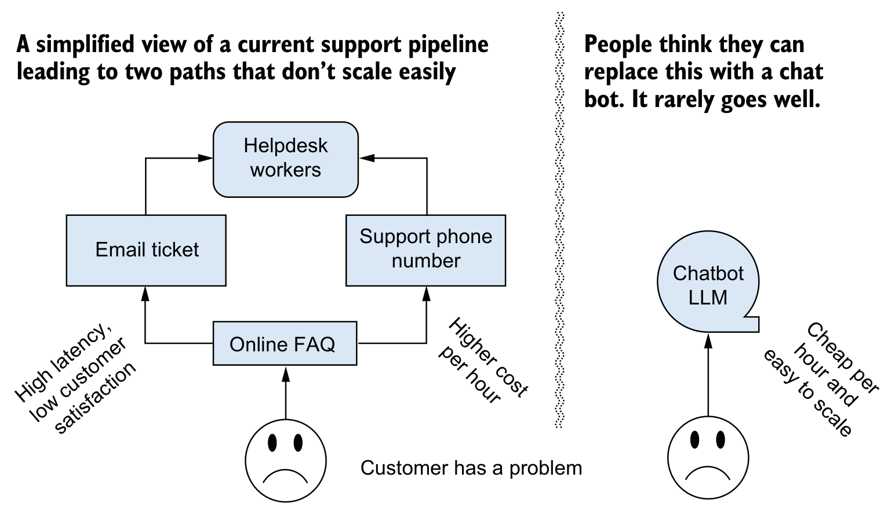
聊天机器人在某些场景下确实是好主意。但令人意外的是，基于LLM的在线支持聊天机器人很可能并非大多数公司客户支持工具的首选，因为要构建一个在多数情况下准确可靠、面对意外输入也不会产生异常输出的系统，需要投入大量精力。归根结底，是否使用LLM来实现客户支持聊天机器人，取决于我们一直在讨论的LLM在生成客户回复时可能犯的错误。我们知道LLM并非零错误，虽然机器学习有时很实用，但在考虑部署这项技术时，潜在错误的代价是主要的决策标准。从根本上说，使用LLM可能会增加这些错误的成本。底线是，在目前的形式下，LLM可能提供错误答案，而部署和维护它们的公司或个人需要为此承担责任。
高管或产品经理可能会根据几个经典的业务关键绩效指标来考虑错误成本。例如，如果让聊天机器人负责支持，客户保留率可能会下降。不过，这种保留率可能仍然高于将客户关系职能外包给其他国家呼叫中心的情况。实际上，在完全用LLM取代客户支持功能之前，应该先进行试点部署，了解客户的想法，这些考虑都很重要。
**注意：** 我们几乎总是建议对任何机器学习系统进行试验性部署。
投资界有句格言“过往业绩不代表未来收益”，这对任何AI都适用。实现这一目标的一种方法是“幽灵部署”，即将新AI系统与现有流程并行运行数周或数月。在现有业务流程仍在运行期间，你可以选择忽略新系统的输出结果。这让你有时间观察现有流程与新流程之间的差异，发现并解决问题，并判断机器学习系统的性能是否随时间下降。
最致命的是，你的大语言模型可能会给出对用户造成伤害的建议。由于大语言模型并非可为其行为承担法律责任的人，因此你和你所在的公司将承担责任。这种情况已发生在一家航空公司身上，该公司部署的聊天机器人给出了错误的政策声明。法院裁定该公司必须遵守其聊天机器人错误生成并分享的政策[1]。
我们建议在部署大语言模型时始终保持对抗性思维。思考“一个动机明确的不良行为者如果知道这是如何运作的，会做什么？”将有助于你识别和减轻重大风险，这通常是判断你计划的大语言模型应用是好是坏的最佳方法。例如，一家汽车公司将其网站集成大语言模型，用于协助销售汽车和回答问题。得知此事后，用户在不到一天内就成功让网站以1美元的价格向他们出售汽车[2]。
如果错误的潜在成本或风险较低，你可以放心地部署大语言模型聊天机器人。但为了本章的论述，让我们假设我们设想的这个技术支持代理非常重要，且其错误可能给公司造成巨大损失。现在问题变成了：我们如何设计一个解决方案，既能提高生产力和效率，又能限制用户直接访问大语言模型？如果你刚接触人工智能/机器学习，聊天机器人是你对该领域的主要了解，这可能听起来像是一个矛盾，但有一些简单、可重复的设计模式可以应用来实现这一点。
应对使用LLM进行直接客户交互风险的一种常见方法是让LLM与支持人员或技术人员互动，而不是直接与客户交互。这种方法通常被称为“人机回环”，因为有一个人员在审查LLM与客户之间的反馈回路，对自动化系统的输出进行关键评估，并在检测到错误时进行干预和调整输出。技术人员仍将被雇佣，但我们会通过让LLM为用户的每个问题生成初始响应，并由技术人员对这些响应进行审核以确保其准确性和相关性，从而提高他们的效率。如果LLM生成了潜在的高成本或不正确的响应，我们可信赖的技术人员将进行干预，并回复更合适的内容。在这种背景下，最终由技术人员选择正确的权威响应。
还记得我们在第5章中关于检索增强生成（RAG）讨论的聪明读者，甚至可能想到改进这一想法的方法。你会说：“啊，我们可以把所有培训手册和文档放入数据库，然后使用RAG，这样LLM就可以检索与用户问题最相关的信息。”这种方法在图8.2中进行了概述，图中展示了一个过程：首先将用户的问题发送给LLM，以便使用已知答案集合来聚焦输出生成。

RAG方法可能会缓解大量风险，但也有可能陷入自动化偏差的陷阱。自动化偏差指的是，人们通常倾向于选择系统提供的自动化或默认选项，因为这比运用批判性思维来判断哪个选项最适合当前情况更容易。如果系统运行良好，不需要你经常干预，那么保持高度警惕并发现偶尔的错误就变得极具挑战性。矛盾之处在于，如果系统建议的准确率低到足以让你保持警惕，那么与完全不使用自动化直接回答问题相比，系统很可能反而拖慢你的速度。
这正是试运行或模拟部署变得极为重要的地方。如果你的系统准确度如此之高，以至于自动化偏差才是真正的风险来源，那么你有两个选项，且无需偏离“人在回路中”的设计：
在流水线中增加一条“转人工”路径，通过流程变更从外部降低错误风险。第一点相当直接。最终，总会出现大语言模型无法回答的新情况。在这种情况下，最好为客户提供一种方式，让他们能够从与计算机的无限循环中“逃脱”，从而获得更高级别的支持。这可以是消息交换次数或聊天时长限制的最大对话长度，也可以是在多次沟通尝试失败后出现的联系人工代表的选项，或者其他可能的设计方案。
注意 假设你打算按照第5章讨论的方式，创建一个RLHF或SFT数据集，以针对你的场景微调LLM。
在这种情况下，你甚至可以添加训练样本，让LLM的预期响应为：“抱歉，这个情况听起来比我所能协助的要复杂；让我找个人来帮忙。”
第二个建议，即改变流程，其实并没有听起来那么难。如果你的某位上司拥有MBA学位，他们（据说）受过这方面的训练。（本书作者之一也拥有MBA，所以我们这样说没问题。）例如，与聊天机器人的交互可以包含一条警告，即任何结果都需要“人类最终批准”。在这种情况下，让一个人检查整个对话，相比于要求某人在整个连续对话中保持持续警惕，自动化偏见的风险要小得多。最终，对抗性用户知道会有人类进行核查，因此他们就不太有动力去尝试欺骗系统。
根据上下文，防止LLM被恶意使用可以通过要求用户提供抵押品来确保其诚信行为。例如，你可以采取相当于冻结用户信用卡的措施，作为防止恶意互动的保险。当交易成功完成时，这笔冻结将被解除。你还可以限制流程的自动化程度、要求身份验证，或者随机分配用户是接入人工客服还是AI客服，从而使可能出现可被利用情况的时间变得不可预测。
所有这些措施都取决于你的具体应用、风险、对这些风险的承受能力以及用户的性质。一些客户可能会因为信用卡冻结而感到不满。或者，你可以将其设计为一种可选方式：如果AI系统成功帮助用户解决了问题，用户将在账单上获得2美元的折扣——前提是这笔费用低于旧系统每次通话的成本。无论哪种方式，都要视具体情况而定，并取决于你管理风险的创意。
至此，你已完成试部署，评估了风险以及用户的对抗性倾向，并得出结论：让LLM提供初始答案风险过高。那么，LLM还能在某种程度上提升效率吗？
一种非直观的方法是让LLM检查人，而不是让人检查LLM。这听起来可能有些奇怪。如果我们不能信任LLM独立行动，为何还要让它担任监督角色？为了深入探讨这一点，设想一个由LLM系统担任监督角色的场景，它负责检查每一条回复，如图8.3所示。
如果LLM和人都认为回答正确，那么将采取行动，消息会传递给客户。这就像用户直接与技术人员聊天一样。但如果技术人员与LLM对答案有分歧，我们可以提示技术人员在发送给用户之前再次核实自己的回复。

这种复核可以简单到告诉技术人员：“嘿，这个可能对解决方案来说不太正常，请确认后再发送。”你也可以尝试让LLM自己生成备选方案。或者，你可以让LLM不直接参与，而是用它来通知更有经验的技术人员加入并协助。无论采用何种结构，其目的都是要提示可能存在导致客户体验不佳的风险，例如提供错误答案。虽然这种风险以前就存在，但现在我们有机会加以缓解。
此外，由于我们考虑的是人为导致的客户支持错误，因此总体上我们并未承担任何新风险，因为支持代表单独行动时同样容易出错。所以，如果LLM和人类同时出错，那这个流程错误本来也注定会发生。这就是生活。从技术上讲，我们可以认为技术人员可能会因LLM对其交互的评估而过度质疑自己的回复，从而降低效率。此外，过于敏感的LLM可能会频繁要求技术人员复核其工作，导致警报疲劳，进而使技术人员完全忽略LLM的建议。如果你的用例容易出现此类问题，那么这一事实将在试运行部署中暴露出来，试运行会提供上下文特定的反馈，说明应如何调试LLM以解决该问题。适用于所有机器学习的通用告诫在此尤为重要：始终测试，不要臆断。
使用LLM复核人工表现可以在整个过程中减少错误。这种方法似乎不会加快任何速度，因为人工仍然在生成初始回复。然而，这种方法仍然创造了提高效率的机会：
它可以通过帮助发现错误并更快地找到解决方案来缩短对话长度。
它可以识别需要更多培训或信息才能回答客户问题的员工，或者识别特定错误情况的发生。它可能有助于避免将问题升级到成本更高的支持层级或管理人员，从而减少麻烦客户的频率和成本。
我们之前讨论的所有内容都涉及一种“以毒攻毒”的方法，即尽管使用LLM存在风险，但我们已经考虑了多种利用LLM来减轻这些风险的方法。虽然我们改变了使用LLM的方式，但LLM仍然是主要组件。或者，我们可以考虑使用LLM之外的工具来应对设计挑战。生成式AI范围内的其他方法，如文语转换和语音转文本，可用于构建更易访问或更便捷的用户体验。例如，患有关节炎或视力低下的用户可能更倾向于打电话，而不是在聊天机器人输入框中打字回复。
如果我们思考客服问题以及LLM何时能良好运作，就会发现更广泛工具类型的要素也已然具备。LLM在问题重复出现、可以用公式化解决方案和回复的场景中表现最佳。LLM在识别语言模糊性中的广泛模式方面非常灵活。如果LLM能正确理解用户的问题，并且存在已知的解决方案，它就有可能引导用户逐步完成该解决方案。这听起来很像无监督聊天机器人，但关键区别在于，在LLM扮演辅助角色的场景中，最终输出是由客服技术人员生成的，如图8.3所示。
本节还将讨论如何利用经典机器学习技术（如分类）来解决现有问题。我们可以通过利用LLM内部的知识，生成用户文本的嵌入表示，从而启用机器学习技术。
在第3章中，我们描述了LLM如何将词元转换为嵌入向量，这些向量是编码每个词元语义表示的一系列数字。这些向量嵌入在LLM的Transformer架构之外的其他方面也很有用。虽然向量嵌入对于LLM的运行至关重要，但它们本身也是一个极其有用的工具。
LLM 产生的向量具有语义性质，这一点很重要，因为数以百计的实用机器学习算法都在操作向量表示。LLM 本质上是一种将复杂的人类语言文本转换为机器学习领域其他部分兼容形式的强大方式。
将 LLM 的向量输出与其他算法结合使用是一种极为有效的策略，从业者称之为“创建嵌入”。这一说法源于 LLM 将一个表示（人类文本）嵌入到另一个表示（数学向量）中的思想。
由于这些数字编码了原始文本的信息，你可以像对待数字一样绘制它们，并看到相似的文本在图上落在相似的位置，如图 8.4 所示。

我们快速了解一下四种机器学习算法——在获得嵌入后即可使用。我们认为每类算法对于LLM的大多数实际应用场景都特别有用；同时，我们也会提到一些相对可靠且易于使用的流行算法。关键要点是：如果你打破只有LLM才能解决问题的思维定势，你将拥有更广泛的工具集。这个列表是你探索其中一些工具的起点地图：
注意：嵌入并非随着大型语言模型而新发明的事物。早在2013年，一种名为Word2Vec的算法（能够嵌入单个词语）就将嵌入推广为表示文本含义的首选策略。
尽管如此，大型语言模型生成的嵌入往往比旧算法更具实用性。然而，大型语言模型的计算需求远高于Word2Vec等旧算法。因此，你可能希望为此任务使用一个更旧或更快的算法。生成式AI方法在图像、视频和语音中的存在意味着，除了文本之外，你还可以将嵌入用于图像、视频和语音等领域。
支持团队与客户合作，但其组织方式是每位成员处理具有类似问题的客户。
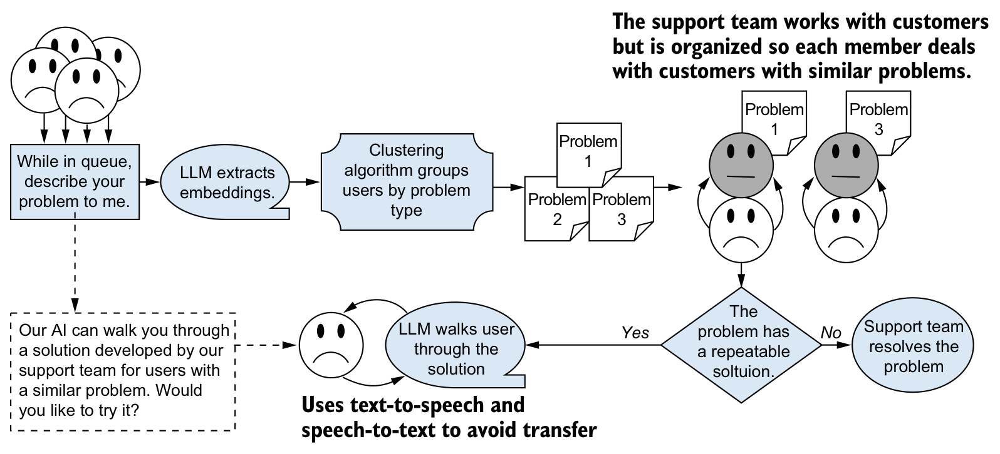
我们完全可以组合使用目前介绍的各种解决方案。例如，图8.5右上角的分析师-客户交互循环可以是两个人在讨论问题，也可以是我们在图8.3中设计的LLM监督验证方案。取决于需要解决的问题不同，既然我们已经有了嵌入表示，就有很多机会扩展这些解决方案。例如，如果分析师记录了客户的愤怒或不满程度，就可以训练一个回归模型，根据客户的嵌入向量预测其愤怒程度。然后，可以将愤怒的客户平均分配给不同的分析师，避免某个人负担过重，或者试图将愤怒的客户安排给那些仍在学习如何帮助客户解决问题的新分析师。
需要澄清的是，我们并不是说所有客服技术支持系统采用这种方法都会变得更好。目的是向你展示，有多种方法可以利用LLM构建解决方案，以规避其缺陷，例如容易产生幻觉以及无法动态融入新知识。总之，我们提出了两个基本策略：
读完这个如何设计使用LLM的技术支持系统的例子，你们中有些人可能会觉得难以置信。我们经常听到完全相信LLM技术的人说：“如果让LLM解释其推理过程，用户或分析师就能判断它是否合理，所有与幻觉和错误相关的问题就都解决了。”我们也经常收到来自另一端更持怀疑态度的人的类似请求，他们担心LLM产生的错误，也不理解发生了什么，希望我们创建“可解释的AI”。因此，双方都认为解释将提供建立对技术信任的手段，并相信LLM（或任何机器学习算法）正在正确有效地工作。
在本节中，我们希望讨论一些观点，支持可解释性并非这些问题的解决方案这一看法。可解释性并非帮助捕获错误或使系统更透明和可信的唯一解决方案。不幸的事实是，我们关于LLM如何与人协作的假设往往是错误的，必须仔细评估。事实上，最近的研究表明，当系统采用可解释的AI技术时，人们会错误地仅仅因为存在解释就相信AI是正确的，而不考虑解释的准确性。即使在没有AI支持的情况下用户也能独立完成该任务，并且用户已经被告知AI系统的实际工作原理，情况依然如此[3]。底线是，解释可能会对它们试图推进的目标本身造成危害。
因为这会对要解决的实际目标产生反作用。那么为什么还要做任何形式的可解释AI呢？
从实际角度来看，有两个关键因素使可解释AI有用：
回答问题：可解释性对谁而言？
从问题陈述出发实现可解释AI。例如，一个现实世界的问题陈述可能描述了需要建立对物理或化学过程的科学理解。以此为目标，算法的一种有用解释可能是生成一个能产生答案的方程，而不是直接给出答案。有了这个方程，物理学家或化学家可以检查其逻辑一致性，并将其作为进一步科学探索的起点。
在这种情况下，解决方案只有具备深厚专业知识的人才能理解，但恰恰只有这些人需要解释。以方程形式给出的解释直接触及了科学理解的问题，而不仅仅是理解AI算法的内部运作。我们并不清楚AI是如何得出方程本身的，而该方程（希望如此）是一种逻辑一致的形式，能够解释物理或化学过程。
这个例子反映了可解释AI最有帮助的一般情况：当它用于帮助一个狭窄且特定的受众（可能是专家用户）执行非常具体的目标时。例如，数据科学家确实常用可解释AI来帮助他们理解为什么某个特定模型会犯特定类型的错误，即使他们使用的工具对非数据科学家受众来说难以理解。
那么，如果可解释性AI并不是建立对AI系统或解决方案信任的答案，那什么才是呢？遗憾的是，目前并没有一种公认的、通用的且经过严格评估的方法来建立对AI的信任。我们这并不新颖的建议是：专注于透明度、用户评估以及所涉及用例的具体细节。
要做到透明吗？透明度可以很简单地告知用户所使用的AI系统：该系统基于哪个模型设计？在高层次上，它是如何修改的？如果系统旨在模仿特定人物（如“接受阿尔伯特·A.I.·爱因斯坦的辅导”）或某类有资质的人员（如“向GPT医生咨询你背上的那颗痣”），那么该人员或具有类似资质的人员是否已同意或认可其有效性？消费者如何验证这些信息？本质上，列举审计员或持怀疑态度的用户可能想知道的这类合理问题及其答案，将使你在提高系统透明度方面远超平均水平。这些信息无需向每个用户详细展示，但提供让用户能够发现这些信息的途径是有益的。这不仅有助于高级用户理解正在发生的事情，也有助于普通用户对给定系统的能力范围建立合理预期。此外，当用户与生成自动响应的系统交互时，告知用户这一点至关重要。试图假装由人类控制、因此应能解决任何合理挑战，与您告知客户能力有限的自动化AI之间，存在着巨大差异。
透明度和系统呈现的一部分涉及激励的一致性。这不仅仅是关于管理实践的一句空话，而是一个实用的建议。回忆第四章，AI算法是贪婪的机器，它们优化的是你要求的内容，而不是你的意图。如果你开始构建一个LLM系统，而系统的激励与你的更广泛目标不一致，你就有可能过度拟合你所要求的内容，而非你和用户共同的需求。
当激励一致时（例如，我们的例子："试用LLM，如果有效，账单立减2美元"），你更可能获得积极的结果。它们还为你提供了更多宣传使用LLM的方式，将LLM作为为客户提供价值的机制，而不是试图取代所有岗位的恶人。展示并讨论企业与客户之间一致的激励，以及你如何使用LLM实现这些目标，就能说清楚需要说明的一切，无需隐藏任何信息。
世界并非一成不变。事物总是在变化，今天行之有效的方法明天可能就失效了。
这正是为什么需要对任何自动化AI/ML系统进行定期和持续审计的原因之一：因为它们不会随着经验自动改进或适应。
同时，这也有助于你发现潜在的负面反馈循环，这是你应该提前思考的问题。负面反馈循环并不总是可以预测的。
为了帮助捕捉这些循环，可以思考哪些用户会在新系统中获得最大收益，哪些不会，以及这种模式反复出现时会发生什么。
例如，我们之前提到，语音转文字和文字转语音功能对老年客户或任何有听力或行动障碍的客户很有帮助。如果我们不提供这种选项，可能会逐渐失去这些客户，因为他们每次遇到问题都必须使用操作不便的系统。
假设你是一家依赖家庭套餐获取部分收入的手机公司。那些最初购买家庭套餐的中年客户开始对你的客服系统感到不满，于是他们将自己的整个家庭套餐转移到了另一家服务商，这家服务商投入额外精力确保客服流程准确高效。这样一来，你同时失去了老客户和新客户！
关键在于要深思熟虑，并训练自己进行这类思想实验。你无法覆盖所有情况，但你会不断进步。定期审计和测试则有助于你发现故障案例、记录它们，并改进你对未来场景和重复问题的思考方式。
LLM 会出现错误，因此首先需要确定错误的风险和潜在成本，才能设计出合适的解决方案。如果错误的风险和成本较低，那么使用普通的聊天机器人式 LLM 可能是可行的。可以通过改变用户与系统的交互方式，或将自动化转移到业务流程的其他环节，来控制使用 LLM 的风险。即使采用 RAG 等技术来降低错误风险，让人工参与监督 LLM 也会带来自动化偏差风险。LLM 可以将文本转换为嵌入（embedding），这是一种数值表示，相似的句子会得到相似的数值。这使你能够使用其他机器学习方法，包括聚类和异常检测等经典技术。
尽管 LLM 可以解释其决策，但这些解释往往效果不佳，因为人们会对其产生依赖。相反，应专注于生成满足特定需求或用例的解释，而非泛泛地“需要解释”。设计系统的激励机制，使其与用户的激励相一致。
这样既能避免 LLM 因优化你所问的问题而非你的意图而出错，也是一种向用户沟通和展示 LLM 的好方式。
译文范围: 章节内段落 1–185（共 185 个段落，渲染 112 个，28 个为图像/页眉/页码等不可译块）。
9 构建与使用大语言模型的伦理
尽管讨论伦理可能让一些人想起大学入门课程中枯燥的阅读材料，但在实施可能影响人类的算法时，仍有一些关键的考虑因素。鉴于LLM的使用及其能力范围快速增长，我们必须关注并处理许多不断演变的问题。如果你不了解这些问题，就无法在解决它们时发声。
探索构建和使用LLM的伦理是一个极其复杂的话题，难以完全呈现。因此，本章将介绍我们认为在构建LLM过程中常见的关注点及相关伦理问题。在本章中，我们将引用一些资料来完善这一讨论，以便你愿意时可以进一步探究。
我们将讨论三个主要话题：
人们为什么要构建LLM？它们提供了哪些此前不存在的能力？
一些机器学习专家认为，在未来的迭代中，LLM将导致人类灭绝，因为它们会通过自动化取代人类。即使我们不同意他们的观点，也值得理解这种恐惧的根源。
LLM所需的训练数据量是惊人的。构建LLM的公司（如OpenAI和Anthropic）是如何获取所有这些数据的？由于数据的收集和使用方式，会产生哪些可能涉及道德、法律和财务影响的伦理问题？
这些考量在伦理和法律层面都相当复杂。我们的目标并非评判创建这些模型是否合乎伦理，而是概述每项讨论中的主要考量。我们希望这能帮助您更广泛地思考大语言模型的影响、后果与风险。我们看到许多围绕大语言模型使用的高关注度且伦理层面复杂的问题，而许多从业者此前并未真正深入探讨过这一主题。尽管如此，我们认为考虑构建大语言模型时的伦理问题至关重要，并将在此章介绍一些关键关注点。
讨论我们如何使用大语言模型与如何构建大语言模型时，同样需要许多考量，因此我们将这一讨论分为两部分。第一部分聚焦构建大语言模型的一般伦理，后半部分则涵盖使用大语言模型的伦理影响。
最后，我们将避免将这些争论归因于特定个人或群体。我们的目标是防止偏见，避免在讨论中点名批评任何人。问题本身才是重点。
在讨论开发LLM的伦理影响之前，值得思考的是，我们构建LLM试图实现什么，以及为何要达成这些目标。与所有软件工程一样，构建LLM通常旨在减少或消除某些任务中的人工劳动。一些经济学家可能会告诉你，这就是生活水平普遍提高的方式。随着技术进步，需要从事体力密集型任务的人越来越少，因此他们有更多时间用于探索、创造以及其他需要高级认知的功能。
就LLM而言，一个常见目标是提高算法的效率，用于诸如自动语言翻译、语音转文字转录、读取图像和印刷文档中的文本（例如光学字符识别）、索引和检索信息（简称为“搜索”或更广泛的信息检索）等应用，以及更多。其他人则出于纯科学原因对LLM感兴趣，例如研究计算语言学的方法，或用于创意应用，如图像、音乐或视频的生成。此外，还有人可能希望增加影响我们生活的技术的可访问性和透明度，或者仅仅是因为LLM吸引了他们的注意力，并展现出惊人的新能力。
对一些人来说，LLM能实现的多种功能本身就是构建它们的内在动力。AI和ML算法已经执行我们列出的所有任务一段时间了；例如，机器翻译已有数十年历史。LLM的不同之处在于，它们似乎能够用一个模型和算法完成所有任务。在LLM出现之前，工程师会将翻译和转录等任务分别实现在各自独立的系统中，以满足特定需求。当今最大的LLM可以在一定程度上完成这些任务以及更多。通常，它们似乎能够完成看似无穷无尽的任务。与此同时，其他人则担心LLM，因为他们认为由于其广泛的能力，LLM将接手那些曾被认为只有人类才能完成的探索和创造任务，从而剥夺人类的工作、动力和活动。
由于LLM可以通过单一模型执行多种不同任务，我们可以将其描述为一种“万能应用”：一个AI助力的全能平台。从可用性角度来看，LLM近乎通用的能力带来了诸多益处，例如它们相对擅长将复杂任务分解为一系列步骤，或者能够生成独特的解释来填补特定的知识空白。此外，聊天式界面似乎很受用户欢迎，即使有其他与LLM交互的方式。聊天受欢迎可能源于其普遍的可访问性：我们经常与人聊天。电话使用广泛，而短信、Slack、Teams、即时消息和电子邮件让人潜意识中就知道如何使用各种基于聊天的界面。因此，通过聊天界面与AI交互已成为一种诱人且简单的方式，只需很少的培训即可提升采用率。基于聊天应用的广泛经验还具有民主化效果：用户只需学习一次，就能追求许多不同目标。这类系统的主要缺点是，虽然它可以用于一切，但并不意味着我们应当用它来应对一切。当算法能被用于许多不同且可能意想不到的任务时，我们没有时间测试所有可能的用途。由于LLM潜在应用的广度，在验证模型安全操作的范围与其可能尝试但具有潜在危险或危害的范围之间会存在差距。例如，当前的LLM模型可以对种族或性别进行抽象评估，即使这些评估可能包含有害的负面偏见。虽然我们可以针对特定有害偏见实例开发测试和防御措施，但这些措施通常范围狭窄且高度特定。例如，假设我们要求一个图像生成模型生成一张商务会议的图像。不幸的结果是，图像中所有人常常是男性和白人。自然，我们希望模型超越这些刻板印象。然而，识别并修复像这样的特定上下文偏见问题并不会影响模型在现实世界部署中因不同且未预期提示而产生危害的可能性。这些努力最多只能展示LLM如何失败，但解决危害需要理解可能发生的失败，例如由于训练数据中的偏见。同时，我们必须理解人们将如何使用LLM，以及这些使用是否可能因LLM生成输出的方式而导致意外伤害。这可能意味着明确不为某个预期用例使用LLM，因为缺乏对其潜在危害的缓解措施。最近关于已部署LLM现实危害的研究发现，OpenAI的ChatGPT和Google的Gemini等LLM对使用非裔美国英语方言者的隐性偏见比1920年代对美国白人的陈旧负面刻板印象更严重[1]。另一项研究考虑了医生就不同种族的医疗最佳实践和治疗方案咨询LLM的用例，发现模型频繁推荐已被驳斥的基于种族、源于优生学“科学”的医疗做法[2]。不幸的是，我们在那些在现有显性偏见基准上得分相当不错的模型中继续看到这些问题。隐性偏见的普遍性表明这些基准不足以评估潜在危害，并强调需要根据使用情况考虑LLM可能造成的危害。换句话说，更重要的不是将AI部署的危害归因于模型是否包含种族偏见的一般概念，而是将其视为特定提议用例和应用的直接结果。目前，我们不知道如何设计一个能够在一个系统中完成这么多任务同时防御善意个人的意外滥用和危害的算法。因此，从开发者的角度来看，进行跨广泛群体和场景的彻底用户研究以识别意外风险，并包含监控和日志记录以补救任何后期发现的风险，变得至关重要。无论我们试图防止有害的种族刻板印象还是推广已被驳斥的医疗做法，当前限制LLM滥用的方法是列举已知问题，并采用微调方法（如RLHF）强制模型在已知问题上表现更好。不幸的是，由于LLM能力的潜在广度，未知问题的集合是无限的，因此任何测试制度都将是不完整的。
注意：部署后监控的重要性并非新鲜事。
例如，FDA通过MedWatch系统实施这一做法已有多年。该系统允许公众和医疗专业人员报告任何药物或医疗器械的不良事件，以便FDA监控异常情况。
9.1.2 我们是否要让所有人类工作自动化？
正如我们在引言中提到的，一些经济学家可能会认为自动化能让劳动力专注于新的工作。这一论点基于这样一种观点：自动化的进步擅长消除大多数人不愿意做的工作。农业是艰苦的，稀土金属开采是艰苦的，组装汽车、玩具和包装也是艰苦的。这些是艰苦且损害身体的劳动，通常伴随着有限的智力刺激。像农业这样的重体力劳动，如今所需的劳动力比1950年减少了74% [3]，毫无疑问，也比中世纪时期减少了无数倍。
与大语言模型的不同之处在于，它们可能自动化某些类型的白领知识工作。文案撰写[4]、视觉艺术[5]、平面设计[6]和银行业[7]只是生成式AI冲击的几个领域。
那些担心大语言模型对经济影响的人认为我们会因自动化而失去工作，但我们提醒，这并不像常说的那样非黑即白。机构和消费者的需求可能会推动这些白领岗位的保留和持续扩张。我们应警惕忽视关于技术进步如何改变工作岗位的经济学研究历史。相反，我们必须应对一个更重大的担忧：获取高质量训练数据。我们相信这将推动未来新岗位的产生，强调人类创造力和能力的重要性，即使它目前创造的岗位还不是许多人期望的那种理想白领工作。
有人认为，LLM显然会对经济的某些领域产生好坏不一的影响。银行柜员的工作是一个常被用来反对LLM的著名例子，自20世纪60年代自动取款机（ATM）发明以来，该工作发生了显著变化。显然，ATM自动化了许多银行柜员的任务。
但ATM的例子并非如此简单。在ATM发明后的几十年里，柜员的工作岗位数量反而增加了，从1970年到2010年，即使ATM变得更加普及，柜员岗位数量仍翻了一番，达到约60万个[8]。回顾对ATM对就业影响的史研究，人们认识到许多因素导致了失业，包括增长率的变化和工作性质的变化。失业不仅源于ATM技术，还源于业务其他方面的多轮技术创新、银行应对变化方式的差异、放松管制以及银行业竞争的加剧和整合[9]。因此，尽管ATM在银行柜员的工作上可以说更好更便宜，但机构、客户和期望的性质阻止了工作岗位的立即下降，并使情况比通常宣传的要复杂得多。
ATM的例子并非唯一；技术可能导致、但并非总是导致因自动化而失业。例如，机器翻译在21世纪初和2016年两次取得了巨大进步。然而，翻译工作岗位在每个时期都有所增加，并且至今仍在增长[10]。关键的观察是，当翻译人员将自动化工具融入工作流程时，翻译工作的岗位池并不会缩小。相反，我们看到完成的翻译工作量以及翻译服务需求都在增长，因为需要翻译的材料量持续增加。有人认为，类似的需求也会出现在创意艺术家和作家身上[11]。根据这一论点，虽然艺术创作和知识工作的方式将发生变化，但市场将继续增长，需求将继续上升，这能够利用自动化工具引入带来的新增劳动力供应。因此，当我们识别出可能被LLM自动化或加速的工作领域时，我们还必须确定效率和质量的提高是否会推动更多需求。
尽管如此，其他人会认为LLM从根本上不同于以往的一切。因此，我们无法使用以往理解技术对经济潜在影响的方法来预测未来。尽管考虑到围绕LLM的各种炒作，这种观点可能很诱人，但我们怀疑这是否是一个过于宽泛、无法证明真伪的论断。虽然我们在制定法规时确实应考虑这种可能性和因素（这反过来又在技术如何影响就业方面起着重要作用），但值得注意的是，据估计美国60%的工作是现代发明，以前并不存在[12]。
由于场景中存在一种诡异的二元性，AI对创意表达的影响令人深省。在互联网上发布内容的作家和艺术家们，他们的作品在很大程度上正在滋养那些似乎要消灭他们工作的模型。LLM研究者提出的伦理论点是，他们应该能够自由地使用这些创作者的内容作为训练数据。这一论点可能导致皮洛士式胜利，最终反而成为AI的败局。如果AI取代了创意工作者的劳动，LLM开发者将会发现，由于缺乏人类生成的内容，以及训练LLM所需数据量的指数级增长超过了用户生成内容的线性增长，他们再也无法改进模型。更重要的是，那些创作内容的人将不再有工作或动力仅仅为了让LLM吞噬而创作内容。
这种负面循环将同时影响LLM和内容创作者，即便这只是一种感知风险而非真正的担忧。数据采集以训练LLM对于数千个依赖用户生成内容和广告收入的网站来说是一个重大问题。这些网站为LLM提供了宝贵的训练数据，而LLM的构建者需要海量训练数据，却对广告收入毫无贡献。
例如，Stack Exchange是一组网站，用户可以发布问题，其他用户回答，并根据优质回答获得声誉评分。Stack Exchange旗下的Stack Overflow，对于寻求解决编程问题的程序员而言无疑是天赐之物。Stack Exchange还拥有许多其他多样化的用户社区，服务于系统管理员、数学学生和桌游爱好者等群体。
随着LLM的出现，Stack Exchange迅速调整其商业模式，试图要求LLM创作者付费以维持其财务未来[13]。即使训练LLM的公司与托管内容的网站之间已有协议，对用户生成内容进行更直接的商业化可能仍令用户反感。Stack Overflow就经历了这一点，人们开始从该平台删除他们有帮助的回答，以抗议Stack Overflow将其免费劳动成果出售给LLM创作者[14]。
这个例子反映了搜索引擎长期以来将索引的应用程序和网站的功能整合到其主界面的历史。例如，现在可以直接在谷歌搜索界面内搜索和比较机票价格。这种能力将流量从提供相同服务的成熟旅行网站引流[15]，并减少了对构建这些服务的公司的服务和收入的需求。当创意作品成为训练数据时，基于这些作品训练的LLM与原始创作者之间可能存在类似的关系。
很明显，由于LLM兴起而面临的问题与我们在以往自动化时期看到的问题相似但不完全相同。那么问题就变成了：与LLM部署相关的差异是否足以导致不同的、更负面的结果。结果对我们来说并不明显，主要是由于LLM的广泛规模、可访问性和适用性。LLM开发者应主动理解和减轻潜在危害，例如与可能受影响的领域预先协商数据使用和社区建设。我们将在本章最后一节讨论训练数据及其来源的其他方面。
有些人认为LLM本身就是危险的。如果你不熟悉这个论点，可能会觉得训练一个强大的LLM模型会导致重大的现实危害，比如消除隐私、终结者机器人以及对我们所知的人类生存的威胁，这听起来很荒谬。然而，许多人对此感到担忧，包括AI领域的领军人物，如Geoffrey Hinton[16]和Yoshua Bengio[17]。Hinton和Bengio是深度学习领域最受尊敬的研究人员之一，他们在神经网络技术在AI中的生存、复兴和主导地位方面做出了重大贡献。
我们认为AI并不构成现实的威胁。然而，严肃且备受尊敬的人士正在提出这些主张，因此理解他们的论点并解释为什么我们认为这些担忧不如解决对工作性质的更直接影响以及确保公平可持续的数据许可和创作者补偿那么重要。
在本节中，我们将聚焦于一个普遍论点：AI可能在广泛意义上成为对人类的风险，因为我们可能失去对LLM的控制，并且LLM可能做出对人类有害的决定。这一观点源于两个被推向极端的想法：
LLM可以利用工具构建新的LLM从而自我改进的观点，以及LLM如果目标与人类需求不一致，可能最终为了自身利益而采取危害人类行为的观点。我们在本书中已经间接提到了第一个关于自我改进的观点。我们讨论过，设计LLM涉及开发数据收集工具，以及编写利用这些数据训练LLM的代码。我们可以假设，如果LLM能够直接使用工具进行数据收集和训练，无需人工干预，那么一个LLM理论上可以训练另一个LLM。
支持这一推理所需的认知跳跃在于，LLM要足够聪明，能够构建出更好的LLM。要接受这一点，我们必须假设这个新的LLM能够创造出更优的LLM2，进而相信这种改进循环可以无限重复，直到LLM∞模型比任何可能存在的人都更智能，并且能够预测、颠覆或对抗任何可能中断这个循环的人类行为。这一跳跃颇具挑战性，因为根据当今技术的观察，我们几乎没有证据表明这种情况可能发生。
第二个观点常被称为“对齐问题”：与人类需求不一致的LLM可能会选择对人类有害的目标和结果。这个观点是合理的，因为正如第4章所讨论的，创建仅衡量预期目标的指标是很困难的。然而，这一思路所需的巨大跳跃在于，LLM将拥有直接与物理世界交互的能力和资源，如果不加阻止，可能导致大规模伤害。
有些人将这两种观点结合起来，认为LLM可能拥有与人类不一致的目标。他们认为，在某个时刻，LLM会意识到为了实现目标，它需要变得更聪明并提升自己。在此过程中，它会从人类手中夺取资源，或者通过其改进后的智能迫使人类服从，以帮助其实现目标。我们在图9.1中概述了这一观点。
这一论点的一个重要方面是，以自我保护为目标的LLM判定人类正在毁灭地球。由于LLM存在于地球上并希望继续存在，它判定毁灭人类是维持自我保护的最佳方式。
我们认为，对人类毁灭的担忧是没有充分依据的。尽管如此，包括拥有计算机科学博士学位且专攻深度学习的人在内的许多人仍对此情景感到担忧。这种“LLM毁灭人类”概念的主要问题在于它依赖于不可证伪的逻辑。不可证伪的逻辑暗示事情会发生，而几乎任何人都无法证明它们不会发生。在这种情况下，证明LLM不会毁灭人类是困难的。

茶壶与不可证伪的陈述 在讨论LLMs可能毁灭人类这类抽象风险时，要求对方做出可证伪的陈述至关重要。一个著名的例子是伯特兰·罗素的“茶壶”思想实验。这个想法很简单：有人告诉你太空中存在一个茶壶，它太小太远，无法被探测到。这个前提本身是不可证伪的；我可以花几个世纪扫描宇宙寻找茶壶，但即使找不到，我也无法证明它不存在。唯一的可能性是，我最终找到了一个茶壶，并确认它存在于太空中。
否则，我永远无法证明茶壶的存在是个谎言。因此，在讨论抽象风险时，不可证伪的陈述会成为一个认知死胡同。反驳一个无人能证明其错误的陈述是不可能的。同时，这些陈述对推进对话、得出有意义的见解或结论毫无帮助。相反，基于可被承认和解决的现实且实际的关切来提出论点，对于理解问题更有价值。
另外两个论点支持这一推理：技术呈指数级增长，而大多数人并不擅长考虑指数问题，因此未能充分理解这一风险会多快成为现实。
这种思维方式的存在以及它成为该领域领导者的担忧，这一事实值得你深入了解支持和反对“大语言模型可能终结人类”这一观点的各种思考和考量。
以下各小节将探讨这些论点以及自我改进和对齐失配背后的关键假设。
在思考自我改进智能的论点时，承认我们人类本身就是智能可构造性的证明，会强化这一观点。既然智能是可以构造的，就有理由相信LLM也能自己构建智能。大多数事物都遵循S形曲线（sigmoid curve）改进，这一点我们在第7章讨论过。那场讨论的重要启示是，存在一个收益递减点，超过该点后进一步改进不再提供有意义的价值。反驳观点认为，人类技术进步遵循的是迭代S形曲线，每个收益递减的平台期都会被一项开启新S形曲线的创新所抵消，如图9.2所示。
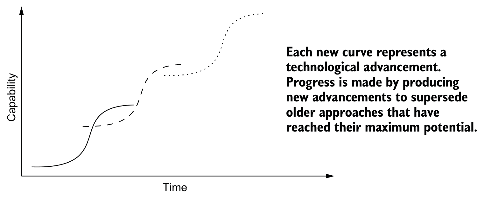
一个反对这种说法的论点是，自我改进会导致人类灭绝级别能力的逻辑存在重大漏洞。尽管人类是一种存在性证明，但尚无已知存在比人类更智能的事物（这很自恋，我们知道）。然而，这也依赖于一个想法，即聪明和智能是可以提升的。虽然聪明和智能这样的术语在日常生活中是有用的泛称，但它们无法被精确量化和定义，因为它们在本质上是抽象概念。目前尚不清楚是否存在一个单一的智能轴心，LLM将沿着它持续改进。
我们更倾向于认为，LLM的自我改进能力存在限度。我们支持这一论点的证据出现在7.4节，在该节中，我们讨论了LLM的计算限制，并证明LLM难以执行多种类型的计算。
第二个担忧是，大语言模型可能将自身目标置于人类需求之上，这被称为**对齐问题**。
当我们给大语言模型设定一个期望它达成的目标，却未能充分说明、明确或约束其实现该目标所允许的行动或方法时，对齐问题便产生了。
我们在第4章讨论什么样的损失函数合适，就是当前对齐问题的一个实例。
更广泛地说，人类无时无刻不在应对对齐问题。
例如，平衡企业CEO的薪酬与公司股东的意愿，就是一个经典的对齐问题，经济学家已研究数十年。
由此可见，对齐问题非常真实，它的存在说明这个问题解决起来有多困难。
即便我们试图非常明确，比如律师起草合同详细规定协议中允许或不允许的事项，但关于利用漏洞和耍花招来坑对方的传闻仍屡见不鲜。
虽然这些故事中有些确实真实，但虚构的那些也具有启发意义。
事实上，机器学习领域的许多活跃研究正尝试从技术角度解决这一问题，而我们或许能从每天应对此类问题的律师和经济学家那里学到一两招。
人类对齐面临的这些普遍挑战有力证明了大语言模型中的对齐问题同样值得担忧。尽管如此，持怀疑态度的读者会问：是否有证据表明，一个未对齐的大语言模型会认为杀死人类有助于实现其目标？
的确，如果大语言模型到了这一步，人类会反抗（常见的说法是“直接拔掉电源”）。
更重要的是，许多末日论调依赖于一个假设：即大语言模型极其智能，其行动是确定性的，无论发生什么，结果都是已知且预先注定的。
现实中，结果是概率性的；事情有好有坏，而一个比人类更聪明的大语言模型无疑会明白自己无法确保结果万无一失，并且与人类共存比杀死所有人类更有价值。
考虑到固有的不确定性，以及之后需要与人类作战——而人类在成功炸毁东西方面历史悠久——那么试图对抗或颠覆人类真的是超级智能该做的事吗？
你的模型对齐了谁的价值观？
企业越来越普遍地使用诸如RLHF（我们在第5章深入讨论过）之类的微调技术，试图让LLM的行为符合其期望。正如我们所讨论的，目标是让LLM既有用（能够遵循指令）又更安全（拒绝有害或伤害性请求）。本质上，RLHF试图解决对齐问题，确保LLM的输出受到特定示例和价值观的约束。关键问题在于，正如本节标题所示，我们在让这些模型对齐谁的价值观？我们将逐步阐述我们的推理：为什么对齐问题虽然在许多情况下有趣且有价值，但在讨论存在风险时却意义不大。
RLHF 需要大量输入-输出对的数据集，这些数据通常由人工构建。构建大语言模型的公司不会共享它们的微调数据，因为这些数据被视为专有信息，能提供相对于竞争对手的优势。因此，作为用户，我们无法检查所使用模型的预期对齐情况。这样一来，目前尚不清楚任意一个大语言模型的目标究竟与谁对齐。我们可以通过考虑训练数据集的来源和监管链来近似推断其中所嵌入的目标的性质。一个近似判断是，这些数据集隐含着创建者自身的目标。通常情况下，创建这些数据集的数据标注员受雇于具有不同社会规范的国家和地区。接着，这些目标在一定程度上又属于开发大语言模型的公司及其员工，后者最终能够筛选和二次选择标注员所生产的数据。
对此我们不禁要问：“作为用户，我们是否愿意使用可能偏向于我们不认同的其他信仰体系的技术？”在某种程度上，为了使用大语言模型，我们必须接受这一点。因为创建这些模型和数据集的成本过高，我们无法为每种情况都制作个性化模型。因此，大语言模型提供商必然存在，但这些提供商的目标不可能与每位潜在用户都保持一致。
与此同时，假设我们担心恶意行为者将大语言模型用于邪恶或恶意目的。那么，我们或许也会意识到，我们无法解决对齐问题在某种程度上是一种福气。如果能够将这些算法完美地对齐到任何个人的信仰体系，那么任何不良行为者都能让大语言模型完美对齐到其不良行为和信念。这一想法揭示了另一个问题：如果我们能创建完美对齐的大语言模型，就必须确保只有好人才能对齐这些模型，从而阻止坏人做坏事。这种推理接近一种魔法思维，即认为有可能创建一个全能的大语言模型，同时又能约束它对所有人类保持顺从。
注意：这种对齐思考方式与加密的思考方式类似。
尽管人们可能试图创建一种只对好人可用的后门加密算法，允许他们解密数据，但任何此类后门本质上都会成为攻击者的最高价值目标，并增加所有用户的风险。
出于这个原因，我们并不特别担心恶意行为者将模型用于邪恶目的的可能性。尽管如此，这一担忧向研究人员强调了一个关键点：在控制大语言模型方面的任何进步本质上都是一种双重用途技术，既有和平的应用，也有对抗性的应用。事实上，我们利用大语言模型开发的任何东西都可能在某种程度上具有双重用途。在考虑大语言模型更严重的潜在危害时，审视威胁模型至关重要。谁会出于何种动机实施这种危害，需要什么条件？当前有哪些障碍阻止了这种危害的发生，大语言模型是否会绕过这些障碍？这些障碍能否适应现代技术？随着我们的推进，我们的关注点不仅应放在大语言模型上，还应放在我们运营的共存系统上，这些系统是成功与风险的最重要促成因素和阻碍因素。我们必须考虑全局，才能取得最理想的结果。
大语言模型以及像 DALL-E 这样的生成模型（DALL-E 是一种根据用户文本描述生成图像的模型）需要基于海量数据进行训练。例如，大语言模型开发者用 1 万亿到 15 万亿个 token（如 Llama 3.1 使用了 15 万亿个 token[18]）或 300 万到 3000 万页文本训练模型。这些数据代表了浩瀚的文本量，相当于数十万到数百万本书。虽然有些模型会反复训练同一批数据，并且模型也会接受代码、数学等多种类型数据的训练，但原始文本的总量仍约有一百万本书。注：需要指出，这些文本大部分并非书籍，而是来自新闻文章、网站、研究论文和政府报告等多种来源。
我们用“书”为单位进行总结是为了更便于理解，但实际上我们并非真的用数百万本书来训练模型。
不同国家和文化对受版权保护文本的使用持有不同态度。在许多情况下，版权法对以新方式使用创意内容的人提供了有意义的例外，尤其是当这些方法能促进公共利益、科学研究或具有类似积极效果时。在美国，这被称为“合理使用”。合理使用始终涉及基于四个因素平衡的、视具体情境而定的分析。
使用的目的和性质——批评、评论、教育、新闻报道、学术或研究等应用，比其他应用（尤其是商业应用）更可能被认定为合理使用。
受版权作品的性质——法院倾向于对创造性作品（如虚构写作、艺术、音乐、诗歌等）给予比非虚构文本更多的保护。
使用部分的数量或实质性——合理使用可能允许使用作品的一部分，特别是当该部分是精心限定的组成部分时。使用对作品潜在市场或价值的影响——如果对作品的新使用产生了某人可能会购买替代原作品的东西，或者新作品以其他方式与原作品竞争或削弱其经济价值，则该作品不太可能被认定为合理使用。
其中一些观点可被视为对LLM有利，而另一些则与LLM使用数据的方式相冲突。尽管如此，这些观点仍是机器学习和法律领域从业者热议的话题，法院需要多年才能做出裁决。合理使用原则的许多应用是为了保护人们免受版权持有者的剥削。例如，如果你撰写负面产品评论，合理使用原则禁止公司以侵犯版权为由起诉你来压制言论。合理使用的其他应用旨在防止社会需求受挫，例如培训学生或学徒使用工具和技术。LLM尤其对其中一些因素造成了压力。从根本上说，它们通常使用他人创建的内容，但有些人认为某些类型的内容（如社交媒体帖子上的评论）价值极低。LLM正在为出版作品的价值开辟新市场，但通常不向作品所有者提供补偿。
作为从业者，一个不尽人意但重要的答案是：你必须在不确定的环境中运作和决策。如果你能创建自己的训练数据，就可以规避大部分法律问题。从你自己拥有的内容创建训练数据对于生成式AI来说是一个特别可行的策略，因为如第4章所述，需要最多数据的基础模型是自监督的。因此，你可以获取大量数据来构建初始模型，然后投入更多精力创建一个更小的微调数据集，如第5章所述。
你还会失望地发现，这一领域的大多数从业者并不熟悉其所在司法管辖区的相关法律。存在相当高的可能性：当你找到一个以符合你需求的许可证发布的模型时（祝贺你检查了许可证！），该模型训练或微调所依赖的数据的版权或许可证可能不允许其以该许可证发布。这种普遍对数据许可问题缺乏关注或认识的态度，使得你有责任尽力核查第三方模型训练数据的相关细节，并意识到许可问题在该领域普遍存在。
即使这些法律问题朝着有利于构建LLM的人得到解决，这也并不意味着此举就是合乎道德的。本章讨论的这些关切将影响你对是非对错的判断。然而，还有一个问题：在当今法律环境不确定的情况下，如何对待和与他人互动？依赖法律体系来使某件事变得可被允许，这很少能体现出会赢得其他相关方善意和尊重的行动。不难想象另一种情景：公司与提供数据的平台达成交易或合作伙伴关系，通过金钱交易或模型使用权来增加涉及的同意方数量。一旦达成协议，合同可以解决法律模糊性引发的冲突，但遗憾的是，这在LLM领域极为罕见。
解决这一伦理问题的方法是向那些作品存在于训练数据中的作者、艺术家和创作者支付报酬。虽然这在概念上有很多吸引力，但它可能使该技术的开发在经济上不可行。
如果有一种相对简单的方法可以恰当地补偿创作者使用其作品，社会将更有可能达成一个令人满意的结果。
通过粗略估算，我们可以估计，100万本书乘以每本20美元，购买训练语料库中每部作品副本的总成本等于或超过训练模型本身的成本。对于训练数据创作成本高昂的模型而言，情况更为严峻。
Stable Diffusion是一种流行的图像生成模型，它基于数十亿张图像进行训练。向训练数据中的每位艺术家支付一美元的成本将是训练模型成本的1000倍以上，而艺术家们很可能认为每张图像一美元的补偿并不足够。
另一种补偿方法是将补偿集中在使用点上：假设每次模型生成的内容借鉴了你写的书，你就能获得模型创建者收入的一定百分比。LLM生成的内容越依赖于你的作品，你获得的收入份额就越大。虽然这可能是使LLM技术长期部署可行的一种方式，但实施这一模式存在巨大的技术障碍。
例如，目前几乎没有关于将LLM生成的内容追溯到特定训练数据点的研究。有理由相信这样的任务是不可能的。
如果能更好地研究如何将生成结果归因于特定输出、约束输出仅依赖训练数据子集[19]，或设计以归因为核心考量（而非训练后再集成到LLM中）的模型训练流程，将使这一目标大为简化。遗憾的是，这类研究通常需要训练大量相似的LLM，因此成本高昂。高昂的成本使得除从中获利的科技公司外，其他机构难以开展相关研究。
这场讨论尚未考虑识别每份文档所有者并对其进行补偿的难度。此外，大规模支付报酬本身并非免费；仅处理费用就将占总支付额中相当大的一部分，因为每位作者获得的平均报酬极低。
如果有人相信LLM对社会构成威胁，那么你有一条简单的出路：你可以说所有这些担忧都是从一开始就不应创建LLM的又一个理由。如果你认为LLM并非迫在眉睫的社会威胁，而是一种积极补充，那么你现在面临一个难以回答的问题。如果你信奉如功利主义之类的道德体系，你可能会辩称，LLM在效用和自动化方面的净收益超过了不补偿内容创作者及其就业风险所带来的损失。事实上，合理使用原则本身即是一种法律认可，即存在版权持有人不得对他人强制执行其权利的情形。
公共领域内容的主要来源之一是版权已过期的作品。因此，训练数据严重偏向较老的文本。20世纪初或更早时期的书籍，在科技方面的文化态度和信念与当今作品迥异，对世界的呈现方式也截然不同。让大语言模型落后当前文化态度95年，从许多角度来看都非常糟糕。它们将充满不准确的科学信息，加剧刻板印象和偏见，使用现代读者不熟悉的语言，且难以有效使用。
注意：1977年前出版的作品在出版95年后失去版权，因此所有1928年出版的作品自2024年1月1日起进入公有领域，所有1977年前出版的作品将在2073年1月1日进入公有领域。
根据现行版权法，从2049年开始，1978年及之后出版的作品将在其创作者去世70年后进入公有领域，但公司创作的作品除外，这些作品遵循之前的规则，在95年后进入公有领域。
旧数据中普遍存在的种族主义和性别歧视等问题，令人沮丧地复杂。我们自然不希望训练数据中包含任何种族主义或性别歧视的内容，因为这似乎是确保模型不带此类偏见的理想手段。然而，如果你成功地将这些内容从训练数据中排除，那么当用户要求模型输出种族主义或性别歧视的内容时，它很难避免产生这样的输出。归根结底，包含这些不雅内容是必要的，这样模型才能意识到什么是不雅内容。
美国政府并不记录哪些作品属于公有领域且受现行版权保护。识别、收集和清理公有领域作品是一项庞大的工程，需要法律、技术和历史方面的专业知识。虽然一些组织在持续做这项工作，但由于缺乏便捷的途径来核查某部作品是否属于公有领域，这严重阻碍了仅使用此类作品来训练模型的做法。
如前所述，LLM 通过从互联网收集的大规模数据进行训练。互联网包含大量不良内容。存在极其负面的内容，如赤裸裸的种族主义、性别歧视、有害的阴谋论和虚假信息。更广泛地说，还有一些无意中形成的过时世界观。LLM 会学习这些观点的模式，并轻易地复述出来——图 9.3 便是一个例子，展示了 GPT-4 如何做出许多善意之人也会做出的隐性性别歧视假设。
因此，LLM 的输出可能存在问题，需要精心设计、测试，并愿意对某些部署说“不”。虽然我们已经讨论了输出内容如何可能明显且直接地存在问题，但 LLM 输出还有间接方式可能产生问题，值得详细了解。首先是法律复杂性，即有效且获得许可的数据可能不会产生合法的输出。第二，我们必须考虑 LLM 中的反馈潜力，即未来的 LLM 将在未来数据上训练；我们必须小心避免用有害内容污染未来的训练。乍一看，这些担忧似乎与开发者无关，但当你考虑针对自己的问题微调 LLM 时，这些问题就会出现，需要引起注意以避免风险。
首先是数据许可的问题，这在上节已做介绍。那场讨论聚焦于用于训练LLM的数据的道德性和有效性。现在我们需要换个视角：有些数据几乎肯定可以合法用于训练，但却可能导致输出不可用。这个问题源于常被误解的开源软件（OSS）许可世界。OSS许可类型繁多，我们无意一一列举，但一个常用的开源许可证——GNU通用公共许可证（GPL）——就是很好的例子。GPL的核心要义是：你可以免费、自由地使用受许可的代码，但前提是你使用、修改或添加的任何代码都必须以GPL许可发布。这种故意设计的“传染性”许可强制被许可人遵循相同规则，如果他们希望使用GPL许可覆盖的代码，就必须将自己的代码作为开源发布。问题来了：LLM已广泛用于编写代码，并且它们是基于GPL代码训练的。何时LLM自身的输出必须采用GPL许可？当我们思考这个新情况所引发的伦理问题时——这些许可以并未明确涉及——各种层次的论点便迅速涌现。存在一个可能范围，包含三种主要模式：
如果LLM完全复述了现有的GPL代码，那么它当然应该采用GPL许可。我们如何判断LLM是否精确生成了需要相应许可的现有代码副本？
LLM可能生成看似新颖的代码，但该算法可能需要特定的GPL训练数据来解决相关问题以生成输出。这是否是对训练数据的修改，从而需要许可？如果是，我们如何解决技术问题，找到导致LLM生成任何给定输出的代码？你在第5章学到的检索增强生成（RAG）方法可能是一个好办法。如果我们用任何GPL代码训练LLM，那么可以说LLM的所有输出都需要GPL许可！
我们以一个材料科学和制造业中众所周知的问题——合金钢问题——作为本节开头的隐喻。钢被用来建造各种东西，从建筑到医疗设备。钢的许多用途还涉及对核辐射敏感的电子设备。由于20世纪40年代首次核武器试验，整个世界被以前不存在的辐射污染。除非你靠近核爆炸，否则辐射量不足以伤害大多数事物。然而，辐射量仍然足以污染世界上生产的所有钢，以至于无法再制造用于对辐射敏感应用的钢 [20]。人们会非法打捞几十年前的沉船，以寻找未受背景辐射污染的原有钢。新的制造工艺可以生产有限数量的洁净钢，但成本极其高昂，因此在许多情况下经济上不可行。幸运的是，随着材料科学的进步和大气层核试验的停止，问题逐渐减轻，但几十年来，世界一直受到少数几次核试验部署的影响。
这里的类比并非指LLM是核弹，而是它们的输出可能会污染未来用于构建更优秀LLM的所有训练数据。研究人员发现了一种称为“模式坍塌”的现象，它展示了LLM在由其他LLM生成的数据上训练时可能失败的情况 [21]。快速回顾一下，分布（一组数字）的众数是数据集中出现频率最高的值。
当一个生成模型产生输出时，大部分输出将来自用于训练模型的内容分布的众数。换句话说，模型生成的输出会强调其训练数据中最常见的组成部分。由于生成模型不会输出数据中所有罕见或细微的案例，因此最常见的案例在LLM的输出中会更加突出。这意味着与原始训练数据相比，模型输出的众数被过度代表了。
如果随后在这个旧模型的输出上训练一个新的生成模型，就会开始以牺牲所有其他数据为代价进一步过度代表众数。如果多次重复这个过程，最终会得到一个无用的模型，它总是重复输出同样的内容，如图9.4所示。
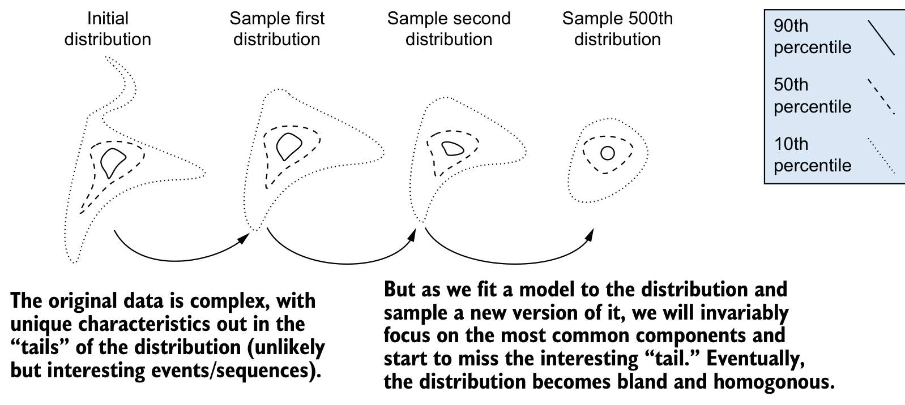
注意：模式崩溃是一个长期已知的真实风险，因为它是一个超越生成式AI的问题。
然而，人类增强的数据可以——但未必一定——缓解这种风险。本质上，只要你能向采样分布中注入新数据，就有可能从这些样本中获取价值。一种方式是人类修改AI生成的内容，或使用AI修改人类生成的内容。自动化系统也能提供价值，特别是那些捕获复杂领域知识的系统，如物理模拟器或数学证明引擎（例如Lean，我们在6.2节讨论过）。问题在于这些增强措施做得有多好，能获取多少价值，因为它们无法带来无限的改进。
关于构建和使用LLM的伦理影响的讨论不断演变。尽管已有很多文章讨论这个话题，但关于LLM乃至整个AI的伦理问题，仍有大量领域有待探索。本书聚焦于构建基础理解所必需的核心主题。其他关键问题，如隐私、安全及滥用风险，在Manning出版社的书籍中有更深入的探讨，例如Numa Dhamani和Maggie Engler合著的《生成式AI导论》[24]。
LLM与生成式AI将深刻影响世界；任何新技术的出现，理解其行为背后的基本原理及使用中潜在的影响至关重要。在本书中，我们介绍了使LLM运行的基本组件，探讨了常见误解，并指出了构建和使用LLM时需考虑的伦理问题。我们希望为你继续探索这一领域打下坚实基础。感谢你与我们一同开启这段旅程。
LLM通过单一模型即可完成多种任务的能力，帮助人们快速高效地将其应用于诸多工作。这种广泛适用性也使得测试人们可能使用LLM的所有方式的安全性变得不可能。从历史上看，自动化一直是好事。然而，LLM为知识工作的自动化带来了独特的风险，这与自动化的历史驱动力——体力劳动的自动化——截然不同，后者曾推动了生活水平的提高。广泛自动化知识工作的真正效果尚不可知。
有人担心，一个足够优秀以至于能改进新LLM设计的LLM，将级联产生不需要人类的超级智能算法。让任何算法符合我们的本意而非字面指令，是一项重大挑战，即使解决了，风险也可能不会降低。由于技术发展快于法律，合乎道德地获取数据充满法律隐忧。
就所有内容创作者因其内容被用于训练数据而给予补偿的财务和技术物流，不太可能具有可行性，这引发了关于使用其数据公平性的伦理问题。无版权的公共领域数据因过于陈旧而不构成问题，但带来了识别其法律地位的不同挑战。LLM生成数据的激增可能会影响我们未来构建的LLM。我们必须考虑反馈循环的潜在可能以及模式崩溃的可能性。
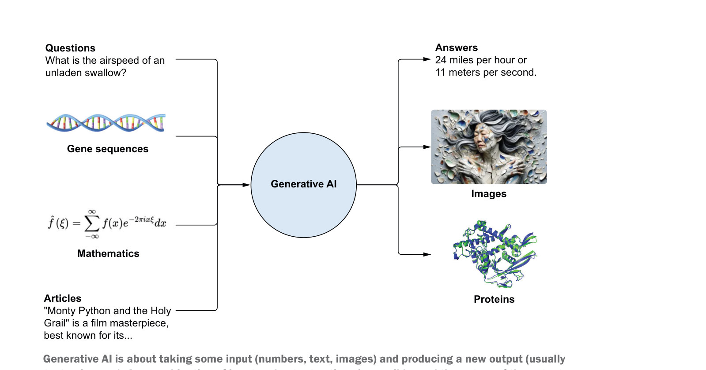

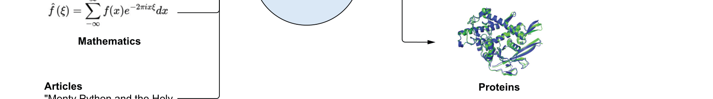
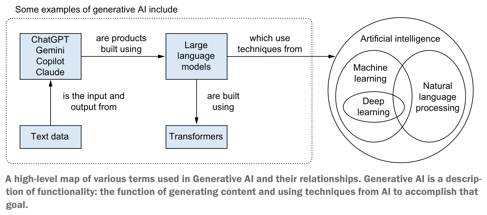
Raff、Farris、Biderman（博思艾伦汉密尔顿公司）大型语言模型让“AI”名副其实。通过连接数十亿文档中的词语、概念和模式，LLM 能够生成我们期望从 ChatGPT、Claude 和 Deep-Seek 等工具中获得的类人回复。在这本兼具信息量与趣味性的书中，来自博思艾伦汉密尔顿公司（Booz Allen Hamilton）的世界顶级机器学习研究人员探讨了 LLM 的基础概念、机遇与局限，以及将 AI 融入组织与应用程序的最佳实践。
“揭秘了革新人与机器交互的技术。”——苏达尔山·图姆昆塔，Meta
本书将带你深入大语言模型内部，逐步展示一个自然语言提示词如何变为清晰可读的文本补全。本书以通俗易懂的语言，讲述大语言模型是如何创建的、为什么会出错，以及如何设计可靠的AI解决方案。在此过程中，你将了解大语言模型如何“思考”，如何设计基于大语言模型的应用（如智能体和问答系统），以及如何应对伦理、法律和安全方面的挑战。
“在深度与清晰度之间实现了完美平衡，使其成为研究人员和实践者不可或缺的资源。”
——Mattia Zoccarato
Chiron AI
● 为特定应用定制大语言模型
● 降低不良输出和偏见风险
● 消除关于大语言模型的迷思
● 超越语言处理，无需任何机器学习或人工智能系统知识。
Biderman 是博思艾伦汉密尔顿公司的新兴AI总监、AI/ML研究总监以及机器学习研究员。
对于印刷版书籍的拥有者，所有数字格式均免费提供：https://www.manning.com/freebook ISBN-13: 978-1-63343-708-1